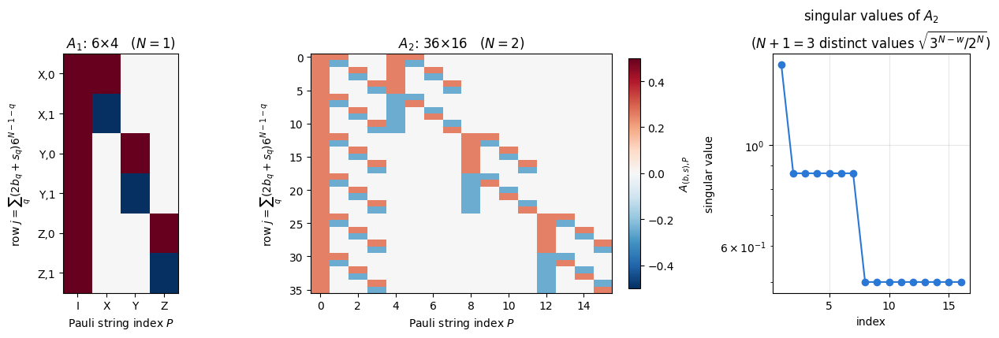
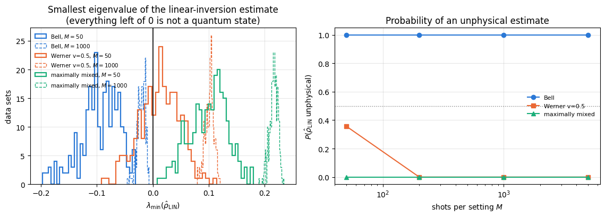
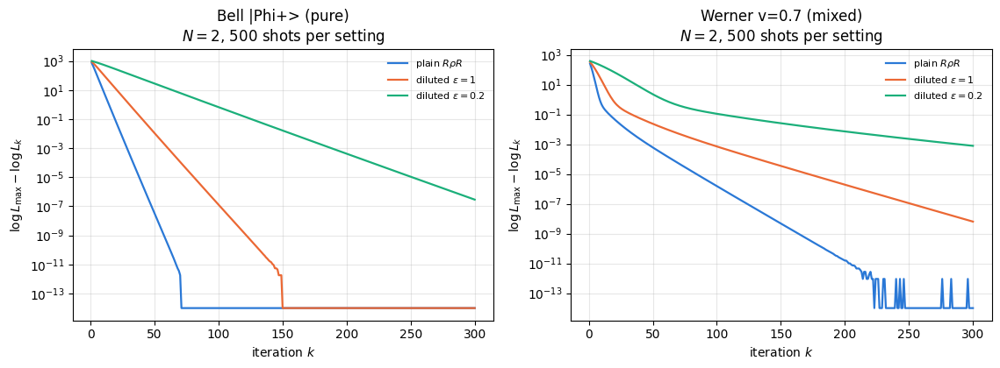
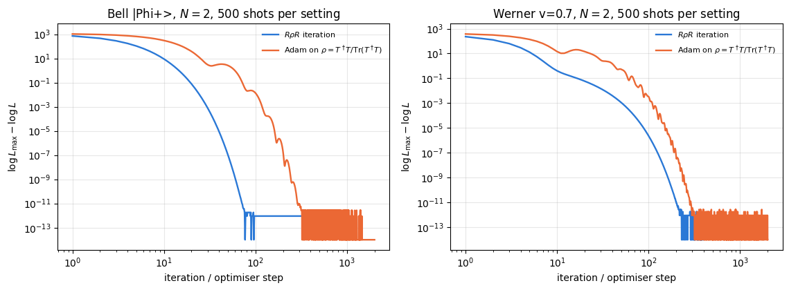
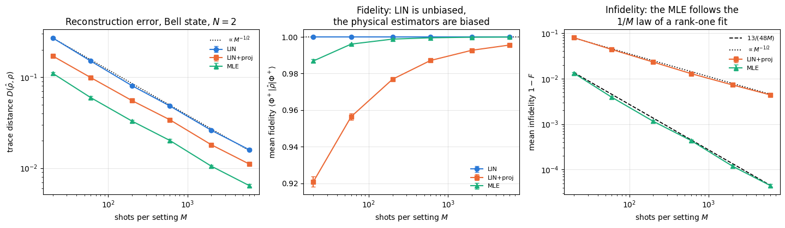
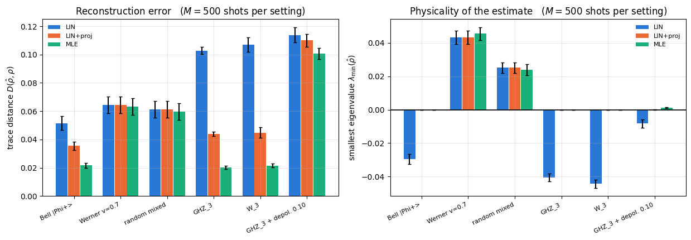
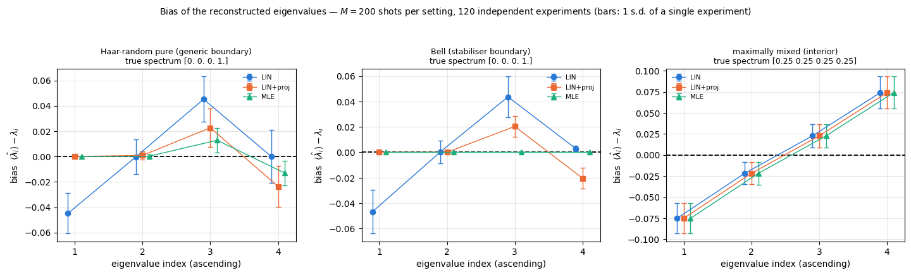
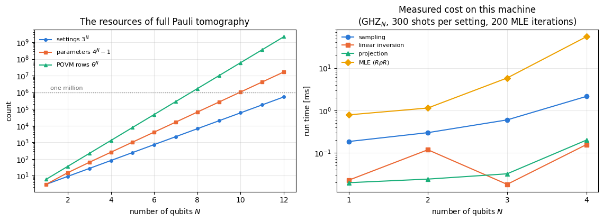

Quantum Many-Body Simulation — Chapter 8 — Quantum information protocols
1. Introduction and motivation
The protocols of notebooks 19–22 all started from a known state: we prepared \(|\psi\rangle\) or \(\rho\) with a circuit and then computed what the parties would observe. An experiment faces the reverse problem. A laboratory builds a device that is supposed to prepare a Bell pair, a GHZ state or the output of a parametrised circuit, and then has to determine which state it actually prepared. One run cannot answer this, because a measurement returns a single bit string and disturbs the state; the device must be run many times. The only access is the one described in 08 — measurements: choose a measurement axis for every qubit, run the device, read out a string of \(N\) bits, repeat. From those click statistics the full density matrix must be reconstructed. That reconstruction problem is quantum state tomography (QST).
It is the standard acceptance test of every quantum device. “We prepared a three-qubit GHZ state with fidelity \(0.97\)” is a statement produced by tomography. It is also the place where a physicist meets, usually for the first time, a genuine statistical estimation problem: the data are random, the model is linear but constrained, the naive estimator returns something that is not a quantum state at all, and the fix for that introduces a bias. All of this is ordinary statistics — and all of it has a specifically quantum twist, because the parameter we estimate must be a positive semi-definite matrix, one without negative eigenvalues.
What we will do. We build the whole pipeline from scratch and validate every piece.
The model. Expand the density matrix in Pauli strings (tensor products of \(\mathbb 1,X,Y,Z\)), \(\rho=2^{-N}\sum_P\langle P\rangle\,P\), count the \(4^N-1\) real parameters and the \(3^N\) measurement settings needed to pin them down (Sections 3–4).
The data. Simulate the experiment with the einsum engine: rotate the density tensor into the measurement basis, sample bit strings, vmap over settings and over shots, explicit PRNG keys (Section 5).
Linear-regression tomography. Write the measurement model as a linear map \(p=A\,r\) from the Pauli vector \(r\) of expectation values to the outcome probabilities \(p\), build the design matrix\(A\) explicitly for \(N=1\) and \(N=2\), discover its Kronecker structure, and solve the normal equations. Show that ordinary least squares is exactly the “direct inversion” of Pauli expectation values, derive the statistical error bars analytically and check them by Monte Carlo, and add weighted least squares (Sections 6–9).
Unphysical estimates. Linear inversion regularly returns a matrix with negative eigenvalues — not a quantum state. We measure how often, and repair it by the eigenvalue-truncation projection of Smolin, Gambetta and Smith (Sections 10–11).
Maximum-likelihood tomography. Write the multinomial likelihood, derive the extremal equation \(R\rho R=\rho\), implement the iterative \(R\rho R\) algorithm and its diluted variant with convergence monitoring, then solve the same problem by gradient ascent with jax.grad and Adam on the Cholesky parametrisation \(\rho=T^\dagger T/\mathrm{Tr}(T^\dagger T)\), and check that the two agree (Sections 12–14).
Assessment. Fidelity and trace distance versus the number of shots with bootstrap error bars, obtained by resampling a single data set; linear inversion versus projected linear inversion versus maximum likelihood on pure (Bell, GHZ, W), mixed (Werner, noisy GHZ) and random states; the bias of maximum likelihood at the boundary of the state space; and finally the cost wall (\(3^N\) settings, and a total shot budget that grows like \(5^N\) at fixed accuracy) that makes full tomography hopeless beyond a handful of qubits — which is why the next notebook replaces it by 24 — classical shadows (Sections 15–18).
What you will learn
Physics
informational completeness: why \(3^N\) Pauli settings determine a state and what “determine” means statistically;
the Pauli/Bloch representation of a density matrix and the physical meaning of its \(4^N-1\) coordinates;
why a positive semi-definite estimate matters, what a rank-deficient estimate means, and why the most likely state of a pure source is systematically less pure than the truth;
how many shots a fidelity of, say, \(0.99\pm0.01\) actually costs.
Numerical methods
linear least squares: design matrix, normal equations, pseudo-inverse, Gram matrix, weighted least squares, error propagation;
projection onto a convex set (the simplex of eigenvalues) and what it does to bias and variance;
maximum likelihood for a constrained parameter: fixed-point iteration (\(R\rho R\)), dilution for monotone convergence, and first-order optimisation of a reparametrised cost;
the bootstrap: error bars from one data set;
exponential cost scaling and how to recognise a wall before you hit it.
Implementation practice
vmap over measurement settings, over shots, over independent data sets, and over bootstrap resamples;
lax.scan for a fixed-point iteration and for a training loop, with per-iteration diagnostics;
jax.grad through an eigen-decomposition-free cost, Adam from the engine;
turning a “sum over POVM elements” into a single einsum;
validating a stochastic estimator: infinite-shot limit, equivalence of two derivations, monotone likelihood, agreement of two independent optimisers.
Conventions. Qubit \(q\) = tensor axis \(q\); \(|0\rangle\) is the \(+1\) eigenstate of \(Z\); a measurement outcome \(s_q\in\{0,1\}\) means eigenvalue \((-1)^{s_q}\); bit strings and Pauli strings are written with qubit \(0\) leftmost (most significant digit of the flat index).
Configuration
Every notebook of this course starts with the same cell. Choose where to run (DEVICE) and the floating-point precision (PRECISION): "double" = float64/complex128 (default, recommended for physics), "single" = float32/complex64 (half the memory, faster on consumer GPUs, but watch the round-off). All code below derives its dtypes from RDTYPE/CDTYPE and its check tolerances from TOL, so nothing else needs to change.
Code
# ==============================================================================# CONFIGURATION -- adapt to your hardware, then run the notebook top to bottom# ==============================================================================DEVICE ="auto"# "auto": use a GPU if JAX finds one, else CPU | "cpu" | "gpu"PRECISION ="double"# "double": float64/complex128 | "single": float32/complex64import osif DEVICE =="cpu": os.environ["JAX_PLATFORMS"] ="cpu"# must be set BEFORE jax is importedimport stringfrom functools import partialimport mathimport numpy as npimport jaximport jax.numpy as jnpfrom jax import lax# Precision is configurable: "double" = float64/complex128 (default; needed for long time evolutions and# tight validation), "single" = float32/complex64 (half the memory, faster on consumer GPUs).# In a notebook PRECISION is defined in the Configuration cell; for this module use the env var QE_PRECISION.PRECISION =globals().get("PRECISION", os.environ.get("QE_PRECISION", "double"))jax.config.update("jax_enable_x64", PRECISION =="double")RDTYPE = jnp.float64 if PRECISION =="double"else jnp.float32 # real dtypeCDTYPE = jnp.complex128 if PRECISION =="double"else jnp.complex64 # complex dtype of all states/operatorsTOL =1e-10if PRECISION =="double"else1e-4# tolerance for sanity checks (asserts)_LETTERS = string.ascii_letters # the 52 einsum index labels a-z, A-Zimport timeimport matplotlib.pyplot as pltif DEVICE =="gpu"and jax.default_backend() =="cpu":print("WARNING: DEVICE='gpu' requested but JAX found no GPU -- running on CPU.")print(f"JAX {jax.__version__} | backend: {jax.default_backend()} | devices: {jax.devices()}")print(f"precision: {PRECISION} -> real {RDTYPE.__name__}, complex {CDTYPE.__name__}, check tolerance TOL={TOL:g}")
JAX 0.11.0 | backend: cpu | devices: [CpuDevice(id=0)]
precision: double -> real float64, complex complex128, check tolerance TOL=1e-10
2. Engine recap and helpers
We reuse the state constructors, apply_gate/apply_gate_dm (the einsum that applies a small matrix to chosen axes of a state or density tensor), the Kraus channels, the fidelity and the trace distance. Everything specific to tomography is built below from scratch.
Engine recap — the simulator primitives used in this notebook (click to expand)
# ==============================================================================# ENGINE RECAP: the functions of quantum_engine.py (SmoQ.jax) used in this notebook.# Each one is derived, with its mathematics and an independent check, in notebook 08b# (Chapter 3), 'Building the quantum simulator engine'.# States are rank-N tensors of shape (2,)*N; every operator acts through ONE einsum.# ==============================================================================# ----------------------------------------------------------------------------# 1. Elementary matrices: Paulis, Clifford generators, rotations# ----------------------------------------------------------------------------I2 = jnp.eye(2, dtype=CDTYPE)X = jnp.array([[0, 1], [1, 0]], dtype=CDTYPE)Y = jnp.array([[0, -1j], [1j, 0]], dtype=CDTYPE)Z = jnp.array([[1, 0], [0, -1]], dtype=CDTYPE)H = jnp.array([[1, 1], [1, -1]], dtype=CDTYPE) / jnp.sqrt(2.0) # Hadamard: Z-basis <-> X-basisS = jnp.array([[1, 0], [0, 1j]], dtype=CDTYPE) # phase gate, S^2 = ZSDG = S.conj().TPAULI = {"I": I2, "X": X, "Y": Y, "Z": Z}CNOT = jnp.array([[1, 0, 0, 0], [0, 1, 0, 0], [0, 0, 0, 1], [0, 0, 1, 0]], dtype=CDTYPE)# ----------------------------------------------------------------------------# 2. THE core primitive: a k-qubit operator acting on a tensor through ONE einsum# ----------------------------------------------------------------------------def apply_gate(psi, U, qubits):"""Apply a k-qubit operator U to the axes `qubits` of the tensor `psi`. MATH ---- One qubit (k=1), target q: psi'[s_0,..,a,..,s_{N-1}] = sum_b U[a,b] psi[s_0,..,b,..,s_{N-1}] Two qubits (k=2), targets (q1,q2); the 4x4 matrix is reshaped to U[a1,a2,b1,b2]: psi'[.., a1, .., a2, ..] = sum_{b1,b2} U[a1,a2,b1,b2] psi[.., b1, .., b2, ..] This IS the action of (1 x .. x U x .. x 1) -- written without ever building it. EINSUM TRANSLATION (generated automatically below) ------------------ N=3, q=1 : "db,abc->adc" d = new (output) index of qubit 1 N=4, q=(1,3) : "efbd,abcd->aecf" e,f = new indices of qubits 1 and 3 Recipe: label the axes of psi with letters a,b,c,...; give every target qubit a NEW letter (the next unused ones); U carries (new letters)+(old letters of the targets); the output is psi's labels with the target letters replaced by the new ones. IMPLEMENTATION NOTES -------------------- * reshape of U: (2^k,2^k) -> (2,)*2k. Row index = (a1..ak), column = (b1..bk), and the FIRST qubit in `qubits` is the most significant bit of the small matrix, i.e. it corresponds to the LEFT factor of kron(A,B). * `qubits` may be any distinct axes in any order: non-neighbouring gates cost the same. * U need not be unitary: projectors, Kraus operators and Hamiltonian terms reuse this. * psi may be ANY tensor with those axes of size 2: a state (rank N), a density tensor (rank 2N: ket axes 0..N-1, bra axes N..2N-1), ... COST O(2^k * 2^N) operations, O(2^N) memory (dense matrix: O(4^N) both). JAX `qubits` must be static Python ints (they define the einsum string); psi and U are traced, so the function can sit inside jit / grad / vmap / scan. """ qubits =tuple(int(q) for q in qubits) k, n =len(qubits), psi.ndim U = jnp.asarray(U, dtype=psi.dtype).reshape((2,) * (2* k)) # matrix -> rank-2k tensor inp =list(_LETTERS[:n]) # labels of psi's axes new = _LETTERS[n:n + k] # fresh labels for the outputs out = inp.copy()for a, q inzip(new, qubits): out[q] = a # target axes get the new labels sub =f"{''.join(new)}{''.join(inp[q] for q in qubits)},{''.join(inp)}->{''.join(out)}"return jnp.einsum(sub, U, psi)def apply_gate_dm(rho, U, qubits):"""Unitary on a density tensor: rho -> U rho U^dagger. MATH rho'[a..;a'..] = sum_{b,b'} U[a,b] rho[b..;b'..] U^*[a',b'] i.e. U acts on the KET axis q and the complex conjugate U^* on the BRA axis N+q. (A density matrix is "a state vector of 2N qubits": vectorisation |rho>> and U (x) U^* acting on it.) IMPLEMENTATION two calls of `apply_gate` -- the same einsum machinery, no new code. COST O(2^k 4^N). """ N = rho.ndim //2 rho = apply_gate(rho, U, qubits) # U on ket axesreturn apply_gate(rho, jnp.conj(jnp.asarray(U)), [N + q for q in qubits]) # U^* on bra axesdef apply_kraus_dm(rho, kraus, qubits):"""Quantum channel in Kraus form: rho -> sum_m K_m rho K_m^dagger, sum_m K_m^dag K_m = 1. EINSUM TRANSLATION (N=2, channel on qubit 0; g = Kraus index, summed!) "gea,gfc,abcd->ebfd" with operands K, K^*, rho [a=ket0, b=ket1, c=bra0, d=bra1; e, f = new ket0, bra0] All Kraus branches are summed INSIDE one einsum -- no Python loop over m. `kraus` has shape (M, 2^k, 2^k). """ qubits =tuple(int(q) for q in qubits) k, N =len(qubits), rho.ndim //2 K = jnp.asarray(kraus, dtype=rho.dtype).reshape((-1,) + (2,) * (2* k)) n = rho.ndim inp =list(_LETTERS[:n]) new_k, new_b, m = _LETTERS[n:n + k], _LETTERS[n + k:n +2* k], _LETTERS[n +2* k] out = inp.copy()for a, b, q inzip(new_k, new_b, qubits): out[q], out[N + q] = a, b ket_old ="".join(inp[q] for q in qubits) bra_old ="".join(inp[N + q] for q in qubits) sub =f"{m}{new_k}{ket_old},{m}{new_b}{bra_old},{''.join(inp)}->{''.join(out)}"return jnp.einsum(sub, K, jnp.conj(K), rho)# ----------------------------------------------------------------------------# 3. State preparation# ----------------------------------------------------------------------------_KETS = {"0": [1, 0], "1": [0, 1], "+": [1, 1], "-": [1, -1], "r": [1, 1j], "l": [1, -1j]}def product_state(spec):"""Product state from a string, one character per qubit: product_state('01+-') = |0>|1>|+>|->. ('r','l' = the +1/-1 eigenstates of Y.) MATH psi[s_0,...,s_{N-1}] = v0[s_0] v1[s_1] ... v_{N-1}[s_{N-1}] EINSUM an outer product = einsum with NO summed index: "a,b,c->abc". A product state needs only 2N numbers; entanglement is what makes all 2^N necessary. """ vecs = [jnp.array(_KETS[c], dtype=CDTYPE) / jnp.linalg.norm(jnp.array(_KETS[c], dtype=CDTYPE))for c in spec] n =len(vecs) sub =",".join(_LETTERS[i] for i inrange(n)) +"->"+ _LETTERS[:n]return jnp.einsum(sub, *vecs)def ghz_state(N):"""GHZ state (|0...0> + |1...1>)/sqrt(2): two non-zero entries of the rank-N tensor.""" psi = jnp.zeros((2,) * N, dtype=CDTYPE)return psi.at[(0,) * N].set(1/ jnp.sqrt(2.0)).at[(1,) * N].set(1/ jnp.sqrt(2.0))def dicke_state(N, k):"""Symmetric Dicke state |D_N^k>: equal superposition of all basis states with exactly k ones. Implementation: mask of the flat indices with popcount == k, normalised by sqrt(binom(N,k)).""" idx = np.arange(2** N) pop = np.array([bin(i).count("1") for i in idx]) v = (pop == k).astype(np.complex128)return jnp.asarray(v / np.linalg.norm(v), dtype=CDTYPE).reshape((2,) * N)def w_state(N):"""W state = Dicke state with one excitation: (|10..0> + |01..0> + ... + |0..01>)/sqrt(N)."""return dicke_state(N, 1)def bell_state(kind="phi+"):"""The four Bell states as (2,2) tensors: phi+- = (|00> +- |11>)/sqrt2, psi+- = (|01> +- |10>)/sqrt2.""" a =1/ np.sqrt(2) v = {"phi+": [a, 0, 0, a], "phi-": [a, 0, 0, -a], "psi+": [0, a, a, 0], "psi-": [0, a, -a, 0]}[kind]return jnp.array(v, dtype=CDTYPE).reshape(2, 2)def haar_state(key, N):"""Haar-random pure state: a complex Gaussian vector, normalised. (The Gaussian measure is unitarily invariant, so the direction is uniformly distributed.) `key` is an explicit JAX PRNG key -- same key, same state: reproducible science.""" k1, k2 = jax.random.split(key) v = jax.random.normal(k1, (2,) * N) +1j* jax.random.normal(k2, (2,) * N)return (v / jnp.linalg.norm(v)).astype(CDTYPE)def to_dm(psi):"""Pure state -> density TENSOR rho[s..; s'..] = psi[s..] psi^*[s'..] (rank 2N). An outer product: einsum "ab,AB->abAB" -- here via the equivalent tensordot(axes=0)."""return jnp.tensordot(psi, jnp.conj(psi), axes=0)def dm_matrix(rho):"""View a rank-2N density tensor as an ordinary 2^N x 2^N matrix (a reshape, no copy of meaning).""" d =int(round(np.sqrt(rho.size)))return rho.reshape(d, d)# ----------------------------------------------------------------------------# 4. Reduced density matrices & observables (matrix-free)# ----------------------------------------------------------------------------def rdm(psi, keep):"""Reduced density matrix of the qubits `keep` from a PURE state: rho_A = Tr_B |psi><psi|. MATH rho_A[a, a'] = sum_{b} psi[a, b] psi^*[a', b] (a: indices of A, b: of the rest B) EINSUM TRANSLATION N=3, keep=(0,): "abc,Abc->aA" with operands psi, psi^* * letters of B (b,c) appear in BOTH operands and not in the output -> summed = traced out * the kept axis gets a different letter in the second operand -> stays open (a and A) The full |psi><psi| (4^N numbers) is never formed; cost O(2^N 2^|A|). Returns a (2^|A|, 2^|A|) matrix with row/column order following `keep`. """ keep =tuple(int(q) for q in keep) n, k = psi.ndim, len(keep) a =list(_LETTERS[:n]) b = a.copy()for new, q inzip(_LETTERS[n:n + k], keep): b[q] = new sub =f"{''.join(a)},{''.join(b)}->{''.join(a[q] for q in keep)}{''.join(b[q] for q in keep)}"return jnp.einsum(sub, psi, jnp.conj(psi)).reshape(2** k, 2** k)def apply_pauli_string(psi, ops):"""Apply a Pauli string P = P_0 x P_1 x ... to psi. `ops` is a dict {qubit: 'X'|'Y'|'Z'} or a string like 'XIZY' (one letter per qubit; 'I' skipped). N single-qubit einsums -- cost O(N 2^N) -- instead of one 2^N x 2^N matrix."""ifisinstance(ops, str): ops = {q: p for q, p inenumerate(ops) if p !="I"}for q, p in ops.items(): psi = apply_gate(psi, PAULI[p], [q])return psidef expect_pauli_string_dm(rho, ops):"""Tr(P rho): apply P to the KET axes only, then take the full trace."""return jnp.real(jnp.trace(dm_matrix(apply_pauli_string(rho, ops))))# ----------------------------------------------------------------------------# 5. State characteristics: entropies, fidelity, negativity# ----------------------------------------------------------------------------def purity(rho_mat):"""Tr(rho^2): 1 for pure states, 1/d for the maximally mixed state in dimension d."""return jnp.real(jnp.trace(rho_mat @ rho_mat))def _sqrtm_psd(A):"""Square root of a positive semi-definite matrix via eigendecomposition: V sqrt(w) V^dag.""" w, v = jnp.linalg.eigh(A)return (v * jnp.sqrt(jnp.clip(w, 0, None))) @ v.conj().Tdef fidelity_dm(rho, sigma):"""Uhlmann fidelity F(rho,sigma) = (Tr sqrt( sqrt(rho) sigma sqrt(rho) ))^2 for dense matrices.""" s = _sqrtm_psd(rho) w = jnp.linalg.eigvalsh(s @ sigma @ s)return jnp.sum(jnp.sqrt(jnp.clip(w, 0, None))) **2def trace_distance(rho, sigma):"""D = (1/2)||rho - sigma||_1 = (1/2) sum_i |eigenvalue_i(rho - sigma)| (Hermitian difference)."""return0.5* jnp.sum(jnp.abs(jnp.linalg.eigvalsh(rho - sigma)))def as_dm_tensor(rho):"""Accept a density matrix in EITHER form and return the rank-2N tensor (2,)*2N. Both conventions are in use: `rdm` and `dm_matrix` return a (2^N, 2^N) MATRIX, while `to_dm` and the channel functions work with the rank-2N TENSOR (N ket axes, then N bra axes). A (2^N, 2^N) matrix with N > 1 is unambiguous, because a density tensor has every axis of length 2. Passing the matrix form straight to `partial_transpose` used to transpose the WHOLE matrix, which leaves the eigenvalues alone and silently reports zero negativity -- hence this conversion. """ rho = jnp.asarray(rho)if rho.ndim ==2and rho.shape[0] >2: # (2^N, 2^N) matrix with N > 1 d = rho.shape[0] N =int(round(math.log2(d)))if2** N != d:raiseValueError(f"density matrix of dimension {d} is not a power of two")return rho.reshape((2,) * (2* N))ifany(s !=2for s in rho.shape) or rho.ndim %2:raiseValueError(f"not a density matrix or density tensor: shape {rho.shape}")return rhodef partial_transpose(rho, qubits):"""Partial transpose on subsystem A = `qubits`, for a density tensor OR a (2^N, 2^N) matrix. In tensor form it is trivial: SWAP the ket axis q with the bra axis N+q for q in A. (With a 2^N x 2^N matrix this requires painful index gymnastics -- here: one `transpose`.) RETURNS the rank-2N tensor; wrap in `dm_matrix` for the matrix form.""" rho = as_dm_tensor(rho) N = rho.ndim //2 perm =list(range(2* N))for q in qubits: perm[q], perm[N + q] = perm[N + q], perm[q]return jnp.transpose(rho, perm)def negativity(rho, qubits):"""Entanglement negativity (Peres-Horodecki / PPT criterion). N(rho) = (||rho^{T_A}||_1 - 1)/2 = sum of |negative eigenvalues| of the partial transpose, E_N = log2 ||rho^{T_A}||_1 = log2(2N+1) (logarithmic negativity). N > 0 => entangled (for 2x2 and 2x3 systems also <=). Returns (N, E_N).""" lam = jnp.linalg.eigvalsh(dm_matrix(partial_transpose(rho, qubits))) neg = jnp.sum(jnp.abs(lam) - lam) /2return neg, jnp.log2(2* neg +1)# ----------------------------------------------------------------------------# 6. Measurements (Born rule, collapse, sampling)# ----------------------------------------------------------------------------_BASIS_ROT = {"Z": I2, "X": H, "Y": H @ SDG} # U maps the eigenbasis of the Pauli to |0>,|1>: P = U^dag Z Udef sample_bitstrings(key, psi, shots, bases=None):"""Sample `shots` outcomes of measuring ALL qubits (no collapse bookkeeping needed). MATH p(s) = |psi[s]|^2 ; optional per-qubit bases string like 'XZY' rotates first. IMPLEMENTATION `jax.random.categorical` draws flat indices from log-probabilities; the bits are unpacked with shifts: s_q = (i >> (N-1-q)) & 1 (qubit 0 = most significant bit). Returns an int array of shape (shots, N). """ N = psi.ndimif bases isnotNone:for q, b inenumerate(bases): psi = apply_gate(psi, _BASIS_ROT[b], [q]) logp = jnp.log(jnp.clip(jnp.abs(psi.reshape(-1)) **2, 1e-300, None)) idx = jax.random.categorical(key, logp, shape=(shots,))return (idx[:, None] >> jnp.arange(N -1, -1, -1)[None, :]) &1# ----------------------------------------------------------------------------# 7. Noise channels (Kraus operators): density matrix and quantum-trajectory forms# ----------------------------------------------------------------------------def kraus_depolarizing(p):"""Depolarising channel rho -> (1-p) rho + (p/3)(X rho X + Y rho Y + Z rho Z). Kraus: sqrt(1-p) 1, sqrt(p/3) X, sqrt(p/3) Y, sqrt(p/3) Z. Bloch vector shrinks by 1 - 4p/3."""return jnp.stack([jnp.sqrt(1- p) * I2, jnp.sqrt(p /3) * X, jnp.sqrt(p /3) * Y, jnp.sqrt(p /3) * Z])def kraus_dephasing(p):"""Dephasing (phase-flip) channel rho -> (1-p) rho + p Z rho Z : coherences rho_01 -> (1-2p) rho_01."""return jnp.stack([jnp.sqrt(1- p) * I2, jnp.sqrt(p) * Z])# ----------------------------------------------------------------------------# 15. Variational circuits: ansatz, gradients, optimizers# ----------------------------------------------------------------------------def adam_init(theta):"""Adam state: (first moment m, second moment v, step counter t)."""return (jnp.zeros_like(theta), jnp.zeros_like(theta), 0)def adam_update(theta, g, state, lr=0.05, b1=0.9, b2=0.999, eps=1e-8):"""One Adam step (Kingma & Ba): m <- b1 m + (1-b1) g, v <- b2 v + (1-b2) g^2, theta <- theta - lr * m_hat / (sqrt(v_hat) + eps), hats = bias-corrected moments. Momentum (m) averages noisy gradients (great with SPSA); v gives a per-parameter step size.""" m, v, t = state t = t +1 m = b1 * m + (1- b1) * g v = b2 * v + (1- b2) * g **2 theta = theta - lr * (m / (1- b1 ** t)) / (jnp.sqrt(v / (1- b2 ** t)) + eps)return theta, (m, v, t)
Code
# ==============================================================================# PLOT STYLE + small helpers used throughout this notebook# ==============================================================================import itertoolsPALETTE = ["#2a78d6", "#eb6834", "#1baf7a", "#eda100", "#e87ba4", "#4a3aa7"] # colour-blind-friendly, fixed orderMARKERS = ["o", "s", "^", "D", "v", "P"]plt.rcParams.update({"axes.prop_cycle": plt.cycler(color=PALETTE), "axes.grid": True,"grid.alpha": 0.3, "font.size": 10, "legend.frameon": False})def max_abs(a):"""Largest absolute entry of an array, as a Python float."""returnfloat(jnp.max(jnp.abs(jnp.asarray(a))))def dm_tensor(mat, N):"""Inverse of `dm_matrix`: view a 2^N x 2^N matrix as a rank-2N density tensor (ket axes 0..N-1, bra axes N..2N-1)."""return jnp.asarray(mat, dtype=CDTYPE).reshape((2,) * (2* N))def mixed_with_identity(rho_mat, p):"""p * rho + (1-p) * 1/d -- the standard one-parameter family interpolating to the maximally mixed state.""" d = rho_mat.shape[0]return p * rho_mat + (1- p) * jnp.eye(d, dtype=CDTYPE) / d
3. Theory I: the Pauli (Bloch) representation of a density matrix
3.1 What has to be estimated
A state of \(N\) qubits is a density matrix \(\rho\) of size \(d\times d\) with \(d=2^N\), subject to three conditions: \(\rho=\rho^\dagger\) (Hermitian), \(\mathrm{Tr}\,\rho=1\) (normalised), \(\rho\succeq0\) (positive semi-definite, i.e. no negative eigenvalues). A Hermitian \(d\times d\) matrix has \(d^2\) real parameters; the trace condition removes one, so
\[\#\text{parameters}=d^2-1=4^N-1 .\]
For \(N=1\) that is \(3\) (the Bloch vector), for \(N=2\) it is \(15\), for \(N=5\) already \(1023\), for \(N=10\) more than a million. Positivity is an inequality and removes no parameters; it carves out a convex body inside the \((4^N-1)\)-dimensional affine space of Hermitian unit-trace matrices. Pure states sit on its boundary, and that boundary is the source of most subtleties later in this notebook.
3.2 Pauli strings as a basis
A convenient coordinate system is the set of Pauli strings
of which there are \(4^N\). They are Hermitian, they square to the identity, and they are orthogonal in the Hilbert–Schmidt inner product \(\langle A,B\rangle=\mathrm{Tr}(A^\dagger B)\):
\[\mathrm{Tr}(P\,P')=2^N\,\delta_{P,P'} .\]
Proof.\(\mathrm{Tr}(A\otimes B)=\mathrm{Tr}A\;\mathrm{Tr}B\), so the trace factorises over qubits. On one qubit \(\mathrm{Tr}(\sigma_a\sigma_b)=2\delta_{ab}\) (check the four cases: \(\sigma_a^2=\mathbb 1\) gives \(2\); for \(a\neq b\) the product is \(\pm i\) times the third Pauli or a traceless Pauli, hence traceless). Multiplying \(N\) factors of \(2\delta\) gives \(2^N\delta_{P,P'}\). \(\square\)
Orthogonality means we can expand any\(d\times d\) matrix in this basis, and read off the coefficients with a trace. For a density matrix,
Proof of Eq. (1). Write \(\rho=\sum_{P'}c_{P'}P'\) (possible because the \(4^N\) Pauli strings are \(4^N\) linearly independent matrices in a \(4^N\)-dimensional space). Multiply by \(P\) and trace: \(\mathrm{Tr}(\rho P)=\sum_{P'}c_{P'}\mathrm{Tr}(P'P)=2^Nc_P\). \(\square\)
The numbers \(r_P\) are exactly the expectation values of the Pauli observables, which is what makes this basis physical: every coordinate of the state is something an experiment can measure directly. The coefficient of the identity string is fixed, \(r_{II\ldots I}=\mathrm{Tr}\rho=1\), leaving the \(4^N-1\) free parameters counted above. We call
\[r=(r_P)_{P}\in\mathbb{R}^{4^N}\]
the Pauli vector (for \(N=1\) it is \((1,\langle X\rangle,\langle Y\rangle,\langle Z\rangle)\), i.e. the Bloch vector with a leading 1). Tomography = estimate \(r\).
Physics insight. Positivity in Pauli coordinates is an ugly, non-local constraint: for \(N=1\) it is the simple ball \(\langle X\rangle^2+\langle Y\rangle^2+\langle Z\rangle^2\le1\), but already for \(N=2\) the set of physical \(r\) is a convex body in \(\mathbb{R}^{15}\) with no elementary description. This is why “just measure all the Pauli expectation values” is not the end of the story.
3.3 Code: Pauli strings, the Pauli vector, and back
We index a Pauli string by a base-4 number: digit \(p_q\in\{0,1,2,3\}=\{I,X,Y,Z\}\) for qubit \(q\), with qubit 0 as the most significant digit — the same convention as for bit strings. Building all \(4^N\) dense matrices costs \(O(4^N d^2)=O(16^N)\) memory, which is fine for \(N\le4\) (for \(N=4\): \(256\) matrices of size \(16\times16\), about 1 MB) and is inherent to full tomography anyway. Two einsums do the work:
Pauli vector: \(r_P=\mathrm{Tr}(P\rho)=\sum_{ab}P[a,b]\,\rho[b,a]\), i.e. einsum("pab,ba->p", P_all, rho);
reconstruction, Eq. (1): \(\rho[a,b]=2^{-N}\sum_P r_P\,P[a,b]\), i.e. einsum("p,pab->ab", r, P_all).
Code
# ==============================================================================# STEP 1: all 4^N Pauli strings, the Pauli vector r, and the inverse map r -> rho# ==============================================================================PAULI_LETTERS ="IXYZ"_PAULI_CACHE = {}def pauli_labels(N):"""All 4^N Pauli-string labels as strings, ordered by the base-4 index (qubit 0 = most significant digit)."""return ["".join(p) for p in itertools.product(PAULI_LETTERS, repeat=N)]def pauli_stack(N):"""Dense array of all Pauli strings, shape (4^N, 2^N, 2^N). MATH P = sigma_{p_0} (x) sigma_{p_1} (x) ... ; Tr(P P') = 2^N delta_{PP'}. COST O(16^N) memory -- acceptable only for small N, which is the regime where full tomography lives. """if N notin _PAULI_CACHE: mats = []for lab in pauli_labels(N): M = jnp.ones((1, 1), dtype=CDTYPE)for ch in lab: M = jnp.kron(M, PAULI[ch]) mats.append(M) _PAULI_CACHE[N] = jnp.stack(mats)return _PAULI_CACHE[N]def pauli_vector(rho_mat, N):"""r_P = Tr(rho P) for all 4^N strings: einsum("pab,ba->p", P_all, rho) (real by Hermiticity)."""return jnp.real(jnp.einsum("pab,ba->p", pauli_stack(N), jnp.asarray(rho_mat, dtype=CDTYPE)))def rho_from_pauli_vector(r, N):"""Eq. (1): rho = 2^{-N} sum_P r_P P -- einsum("p,pab->ab", r, P_all) / 2^N."""return jnp.einsum("p,pab->ab", jnp.asarray(r, dtype=CDTYPE), pauli_stack(N)) /2** N# --- CHECKPOINT: orthogonality, round trip, and agreement with the matrix-free engine routine ---------for N in (1, 2, 3): Pn = pauli_stack(N) gram = jnp.real(jnp.einsum("pab,qba->pq", Pn, Pn)) # Tr(P_p P_q) err_gram = max_abs(gram -2** N * jnp.eye(4** N)) rho_t = to_dm(haar_state(jax.random.PRNGKey(N), N)) # a generic pure state, as a density tensor rho_m = dm_matrix(rho_t) r = pauli_vector(rho_m, N) err_round = max_abs(rho_from_pauli_vector(r, N) - rho_m) err_free =max(abs(float(r[i]) -float(expect_pauli_string_dm(rho_t, lab))) # matrix-free referencefor i, lab inenumerate(pauli_labels(N)))print(f"N={N}: |Tr(P P') - 2^N delta| = {err_gram:.1e} round trip rho->r->rho = {err_round:.1e} "f"|r - engine expect_pauli_string_dm| = {err_free:.1e} r[I..I] = {float(r[0]):.12f}")assert err_gram <1e3* TOL and err_round <1e3* TOL and err_free <1e3* TOL andabs(float(r[0]) -1) <1e3* TOL
The Pauli strings are orthogonal to machine precision, the map \(\rho\to r\to\rho\) is the identity, our dense construction agrees with the engine’s matrix-free expect_pauli_string_dm, and the identity coefficient is exactly 1. From now on “the state” and “the Pauli vector” are interchangeable, and tomography is the estimation of \(4^N-1\) real numbers.
4. Theory II: measurement settings, POVM elements, and the cost of informational completeness
4.1 One setting = one basis for every qubit
Hardware measures each qubit along one axis per run. A measurement setting is therefore a string \(b=(b_0,\dots,b_{N-1})\) with \(b_q\in\{X,Y,Z\}\): “measure qubit 0 along \(x\), qubit 1 along \(z\), …”. There are \(3^N\) of them. Running one setting once produces a bit string \(s=(s_0,\dots,s_{N-1})\), where \(s_q=0\) means the outcome \(+1\) of \(\sigma^{b_q}_q\) and \(s_q=1\) means \(-1\).
The probability of a record is given by the Born rule with the projector onto the corresponding joint eigenstate,
The one-qubit factor is the projector onto the \(\pm1\) eigenstate of \(\sigma^{b_q}\): indeed \((\mathbb 1\pm\sigma)/2\) is Hermitian, squares to itself, and \(\sigma\,(\mathbb 1\pm\sigma)/2=\pm(\mathbb 1\pm\sigma)/2\). For a fixed setting the \(2^N\) projectors are orthogonal and sum to \(\mathbb 1\), so \(\sum_sp(s\vert b)=1\): each setting is a complete measurement, and its data follow a multinomial distribution with \(2^N\) categories. A POVM (positive operator-valued measure) is the most general description of a measurement: a set of positive operators \(E_j\) with \(\sum_jE_j=\mathbb 1\), outcome \(j\) occurring with probability \(\mathrm{Tr}(\rho E_j)\); the projectors of one setting are the special case of orthogonal projectors. Collecting all settings we get \(6^N\) elements \(\{\Pi_{b,s}\}\) satisfying
\[\sum_{b}\sum_{s}\Pi_{b,s}=3^N\,\mathbb 1 ,\]
because each of the \(3^N\) settings contributes \(\mathbb 1\). (Dividing by \(3^N\) turns it into a proper POVM; the constant will reappear in the maximum-likelihood derivation.)
4.2 Informational completeness of the \(3^N\) settings
Expand the projector of Eq. (2) by multiplying out the tensor product:
where \(m\cdot s=\sum_qm_qs_q\) and \((\sigma)^0=\mathbb 1\). The operator on the right is the Pauli string \(P(b,m)\) that carries the letter \(b_q\) on every qubit with \(m_q=1\) and the identity elsewhere. Inserting this into Eq. (2) and using Eq. (1):
Equation (3) is the heart of this notebook: the outcome probabilities of one setting are a linear combination of exactly \(2^N\) Pauli coordinates, with coefficients \(\pm2^{-N}\). Reading it backwards, a setting \(b\) gives access to those \(2^N\) Pauli strings whose non-identity letters agree with \(b\). A given Pauli string \(P\) of weight\(w\) (number of non-identity letters) is therefore accessible from every setting that matches \(P\) on its support and is arbitrary elsewhere: \(3^{N-w}\) settings. Since every \(P\ne I^{\otimes N}\) has \(w\ge1\), at least one setting reaches it, and going through all \(3^N\) settings reaches all \(4^N\) strings. The measurement scheme is therefore informationally complete: the map \(r\mapsto p\) is injective, so in the limit of infinitely many shots the state is uniquely determined.
4.3 Resource count
\(N\)
settings \(3^N\)
parameters \(4^N-1\)
outcome rows \(6^N\)
shots at \(10^3\)/setting
1
3
3
6
\(3\cdot10^3\)
2
9
15
36
\(9\cdot10^3\)
3
27
63
216
\(2.7\cdot10^4\)
4
81
255
1296
\(8.1\cdot10^4\)
6
729
4095
46656
\(7.3\cdot10^5\)
10
59049
1048575
\(6\cdot10^7\)
\(5.9\cdot10^7\)
Every column grows exponentially. Each of the \(3^N\) settings is a separate experimental configuration that must be programmed, calibrated and run. The last column understates the shot cost: at a fixed number of shots per setting the reconstruction error grows with \(N\), and Section 18.1 shows that the total number of shots needed for a fixed error grows like \(5^N\).
5. From formula to code: simulating the experiment with the engine
5.1 What the simulator must do
For every setting \(b\) we need the \(2^N\) probabilities of Eq. (2). The textbook route — build \(\Pi_{b,s}\) as a \(d\times d\) matrix and take a trace — is exactly what the engine avoids. Instead we use the identity already used by measure_qubit: measuring \(\sigma^{b}=U_b^\dagger ZU_b\) is the same as rotating with \(U_b\) and measuring \(Z\), with \(U_X=H\), \(U_Y=HS^\dagger\), \(U_Z=\mathbb 1\). On a density tensor the rotation is apply_gate_dm (one einsum for the ket axis, one for the bra axis), and the \(Z\)-basis probabilities are then simply the diagonal of the rotated density matrix:
No \(\Pi_{b,s}\) is ever built. The selection of the rotation for a traced setting code uses the gather ROTS[code], exactly as in the engine’s collect_pauli_shadows, so the whole function is vmap-able over settings.
Then we sample. jax.random.categorical(key, log p, shape=(shots,)) draws shots flat outcome indices at once (Gumbel-max, notebook 08), and the bits follow from shifting and masking. Because the counts\(n_{b,s}\) are a sufficient statistic for the multinomial — the order of the shots carries no information — we immediately histogram them with a scatter-add, jnp.zeros(d).at[idx].add(1.0), which is vmap-compatible (unlike np.bincount).
JAX practice. Two levels of batching appear here. Over settings we use jax.vmap, because each setting needs a different rotation of the state. Over shots within a setting we do not need vmap: one categorical call with shape=(shots,) already draws the whole batch. Below we nevertheless build the explicit per-shot vmap version as well — one PRNG key per shot, exactly as a real experiment has one run per shot — and check that both give the same statistics.
Code
# ==============================================================================# STEP 2: the simulated experiment -- settings, probabilities, shots, counts# ==============================================================================ROTS = jnp.stack([_BASIS_ROT["X"], _BASIS_ROT["Y"], _BASIS_ROT["Z"]]) # basis code 0 = X, 1 = Y, 2 = ZBASIS_CHARS ="XYZ"def all_settings(N):"""All 3^N measurement settings as an int array (3^N, N) of basis codes; qubit 0 = most significant digit."""return jnp.asarray(list(itertools.product(range(3), repeat=N)), dtype=jnp.int32)def setting_probs(rho, codes):"""Born probabilities of ONE setting for a density TENSOR rho (rank 2N). MATH p(s|b) = [U_b rho U_b^dag]_{ss}, U_b = (x)_q U_{b_q}, U_X = H, U_Y = H S^dag, U_Z = 1. IMPL N calls of apply_gate_dm (2 einsums each), then the diagonal of the 2^N x 2^N view. No projector is built. JAX `ROTS[codes[q]]` is a gather with a traced index -> the function is vmap-able over settings. COST O(N 4^N) per setting. """ N = rho.ndim //2for q inrange(N): rho = apply_gate_dm(rho, ROTS[codes[q]], [q])return jnp.real(jnp.diagonal(dm_matrix(rho)))def all_setting_probs(rho, settings):"""Probabilities of every setting: array (3^N, 2^N). vmap over the rows of `settings`."""return jax.vmap(lambda c: setting_probs(rho, c))(settings)def counts_from_probs(key, probs, shots):"""Multinomial sampling: `shots` bit strings per setting, histogrammed into counts (3^N, 2^N). IMPL one categorical draw per setting (Gumbel-max) gives the flat outcome indices of all shots; the histogram is a scatter-add `zeros(d).at[idx].add(1.0)`, which works under vmap and jit. JAX vmap over settings with one split key each -> independent data for every experimental configuration. """ d = probs.shape[-1]def one(k, p): idx = jax.random.categorical(k, jnp.log(jnp.clip(p, 1e-300, None)), shape=(shots,))return jnp.zeros(d, dtype=RDTYPE).at[idx].add(1.0)return jax.vmap(one)(jax.random.split(key, probs.shape[0]), probs)def simulate_experiment(key, rho, settings, shots):"""The full simulated experiment: exact probabilities -> sampled counts (3^N, 2^N)."""return counts_from_probs(key, all_setting_probs(rho, settings), shots)
5.2 A first data set, and what the raw records look like
We take the Bell state \(|\Phi^+\rangle=(|00\rangle+|11\rangle)/\sqrt2\), the workhorse of notebook 19, and run all \(9\) settings with \(M=200\) shots each. Before histogramming we print the actual bit strings of the first few shots in three settings, because that — a list of bit strings, one per run — is all the data an experiment ever produces.
Pencil-and-paper expectations for \(|\Phi^+\rangle\): in the setting \(ZZ\) only \(00\) and \(11\) occur (each with probability \(1/2\)), in \(XX\) likewise, in \(YY\) only \(01\) and \(10\) occur (because \(\langle YY\rangle=-1\)), and in a mismatched setting such as \(XZ\) all four outcomes are equally likely.
Code
# ==============================================================================# EXPERIMENT: a first tomography data set -- Bell state |Phi+>, 9 settings, 200 shots each# ==============================================================================N_DEMO, SHOTS_DEMO =2, 200rho_bell = to_dm(bell_state("phi+")) # density TENSOR, rank 2N = 4settings2 = all_settings(N_DEMO)probs_bell = all_setting_probs(rho_bell, settings2)counts_demo = jax.jit(partial(simulate_experiment, settings=settings2, shots=SHOTS_DEMO))( jax.random.PRNGKey(0), rho_bell)setting_names = ["".join(BASIS_CHARS[int(c)] for c in row) for row in np.asarray(settings2)]out_labels = ["".join(b) for b in itertools.product("01", repeat=N_DEMO)]# raw records of a few shots, the way an experiment writes them downprint("raw single-shot records (first 12 shots of three settings):")for name in ("ZZ", "XX", "XZ"): i = setting_names.index(name) idx = jax.random.categorical(jax.random.PRNGKey(100+ i), jnp.log(jnp.clip(probs_bell[i], 1e-300, None)), shape=(12,)) bits = (np.asarray(idx)[:, None] >> np.arange(N_DEMO -1, -1, -1)[None, :]) &1print(f" setting {name}: "+" ".join("".join(map(str, b)) for b in bits))print(f"\n{'setting':>8s} | "+" ".join(f"p({o}) n({o})"for o in out_labels))for i, name inenumerate(setting_names): row =" ".join(f"{float(probs_bell[i, j]):.3f}{int(counts_demo[i, j]):4d}"for j inrange(2** N_DEMO))print(f"{name:>8s} | {row}")print(f"\ntotal shots = {int(counts_demo.sum())} = {3** N_DEMO} settings x {SHOTS_DEMO} shots")assertint(counts_demo.sum()) ==3** N_DEMO * SHOTS_DEMO
raw single-shot records (first 12 shots of three settings):
The records are what we predicted: \(ZZ\) and \(XX\) produce only the even-parity strings \(00\)/\(11\), \(YY\) only the odd-parity strings \(01\)/\(10\), and the mismatched settings produce all four strings with probability \(1/4\) — a Bell pair looks completely random unless both qubits are read along correlated axes. The counts fluctuate around \(M\,p\) by roughly \(\sqrt{Mp(1-p)}\approx7\) for \(p=1/2\) and \(M=200\), as they must.
5.3 Checkpoints for the data generator
A simulator of an experiment deserves the same suspicion as the estimator that follows. Three independent tests:
Against the projector formula. For one setting, compare setting_probs with \(\mathrm{Tr}(\rho\,\Pi_{b,s})\) using \(\Pi_{b,s}\) built by Kronecker products — the textbook route we are avoiding.
Against the pure-state sampler. For a pure state, the engine’s sample_bitstrings(key, psi, shots, bases) samples the same distribution directly from the state vector. The frequencies must agree within shot noise.
Against an explicit per-shot vmap. One PRNG key per shot, one categorical call per shot — the “one key per run of the experiment” picture. Same distribution, different code path.
For (2) and (3) the criterion is statistical rather than TOL: we use Pearson’s \(\chi^2=\sum_s(n_s-Mp_s)^2/(Mp_s)\), which for \(K\) bins fluctuates around \(K-1\) with standard deviation \(\sqrt{2(K-1)}\).
Code
# ==============================================================================# CHECKPOINT: the data generator, three independent ways# ==============================================================================# (1) exact probabilities vs the textbook projector Tr(rho Pi_{b,s})psi_rand = haar_state(jax.random.PRNGKey(11), 3)rho_rand3 = to_dm(psi_rand)worst =0.0for codes in [(0, 1, 2), (2, 2, 2), (0, 0, 1)]: p_engine = setting_probs(rho_rand3, jnp.asarray(codes)) p_proj = []for s in itertools.product((0, 1), repeat=3): Pi = jnp.ones((1, 1), dtype=CDTYPE)for q inrange(3): sig = PAULI[BASIS_CHARS[codes[q]]] Pi = jnp.kron(Pi, (I2 + (-1) ** s[q] * sig) /2) # Eq. (2), one factor per qubit p_proj.append(jnp.real(jnp.trace(dm_matrix(rho_rand3) @ Pi))) worst =max(worst, max_abs(p_engine - jnp.stack(p_proj)))print(f"CHECKPOINT (1) rotate-and-read-the-diagonal vs Tr(rho Pi_bs): max error = {worst:.1e}")assert worst <1e3* TOL# (2) sampled frequencies vs the engine's pure-state sampler, and (3) vs an explicit per-shot vmap# A single chi^2 fluctuates a lot, so we repeat each sampler R_CHK times and test its MEAN against the mean of a# chi^2 distribution with dof degrees of freedom (mean = dof, standard deviation = sqrt(2 dof / R_CHK)).M_CHK, R_CHK =5000, 6codes = jnp.asarray([0, 2, 1]) # setting X Z Yp_exact = np.asarray(setting_probs(rho_rand3, codes))to_flat =lambda bits: np.asarray(bits) @ (2** np.arange(2, -1, -1)) # bit strings -> flat indices (N = 3)def one_shot(key, p):"""ONE run of the experiment: one key, one categorical draw, one bit string of N = 3 bits.""" idx = jax.random.categorical(key, jnp.log(jnp.clip(p, 1e-300, None)))return (idx >> jnp.arange(2, -1, -1)) &1per_shot = jax.jit(jax.vmap(partial(one_shot, p=jnp.asarray(p_exact))))samplers = {"density tensor + counts": lambda k: np.asarray(counts_from_probs(k, p_exact[None, :], M_CHK)[0]),"engine sample_bitstrings": lambda k: np.bincount(to_flat(sample_bitstrings(k, psi_rand, M_CHK, bases="XZY")), minlength=8),"vmap over per-shot keys": lambda k: np.bincount(to_flat(per_shot(jax.random.split(k, M_CHK))), minlength=8),}dof =8-1for label, fn in samplers.items(): chi2 = np.array([np.sum((fn(jax.random.fold_in(jax.random.PRNGKey(7), i)) - M_CHK * p_exact) **2/ (M_CHK * p_exact))for i inrange(R_CHK)]) z = (chi2.mean() - dof) / np.sqrt(2* dof / R_CHK)print(f"CHECKPOINT (2,3) {label:26s}: mean chi^2 over {R_CHK} runs = {chi2.mean():5.2f} "f"(expected {dof} +- {np.sqrt(2* dof / R_CHK):.2f}; z = {z:+.2f})")assertabs(z) <3.5# CONTROL: a sampler with a classic bug -- the bit order reversed (qubit 0 read as the LEAST significant bit) -- must failrev = np.array([int(f"{i:03b}"[::-1], 2) for i inrange(8)])chi2_w = np.array([np.sum((samplers["density tensor + counts"](jax.random.fold_in(jax.random.PRNGKey(7), i))[rev]- M_CHK * p_exact) **2/ (M_CHK * p_exact)) for i inrange(R_CHK)])z_w = (chi2_w.mean() - dof) / np.sqrt(2* dof / R_CHK)print(f"CONTROL {'bit order reversed':26s}: mean chi^2 over {R_CHK} runs = {chi2_w.mean():7.1f} (z = {z_w:+.0f}) -> detected")assertabs(z_w) >3.5
CHECKPOINT (1) rotate-and-read-the-diagonal vs Tr(rho Pi_bs): max error = 1.7e-16
CHECKPOINT (2,3) density tensor + counts : mean chi^2 over 6 runs = 6.37 (expected 7 +- 1.53; z = -0.41)
CHECKPOINT (2,3) engine sample_bitstrings : mean chi^2 over 6 runs = 5.86 (expected 7 +- 1.53; z = -0.74)
CHECKPOINT (2,3) vmap over per-shot keys : mean chi^2 over 6 runs = 6.11 (expected 7 +- 1.53; z = -0.58)
CONTROL bit order reversed : mean chi^2 over 6 runs = 77.4 (z = +46) -> detected
All three routes sample the same distribution, and the control line shows that the test detects a reversed bit order at once. In particular the per-shot vmap version, which is conceptually closest to the laboratory (“one PRNG key = one run of the machine”), agrees with the batched one — so for the rest of the notebook we use the fast batched sampler with a clear conscience.
6. Linear-regression tomography I: the design matrix
6.1 The linear model
Equation (3) says that the vector of all outcome probabilities is a linear function of the Pauli vector. Stack the \(6^N\) probabilities \(p(s\vert b)\) into a vector \(p\) and the \(4^N\) Pauli coordinates into \(r\); then
\[p=A\,r,\qquad A_{(b,s),P}=\frac{1}{2^N}\times\begin{cases}\prod_{q\,:\,p_q\neq I}(-1)^{s_q}&\text{if }p_q\in\{I,b_q\}\ \text{for all }q,\\[2pt]0&\text{otherwise.}\end{cases} \tag{4}\]
\(A\) is the design matrix of the regression, of shape \(6^N\times4^N\). Each row has exactly \(2^N\) non-zero entries (the Pauli strings reachable from that setting), each of size \(2^{-N}\).
The experiment does not give us \(p\); it gives frequencies\(f_{(b,s)}=n_{b,s}/M\) that estimate \(p\) with a random error. So the statistical model is
the multinomial covariance of each setting (different settings are independent because they are different runs). This is ordinary linear regression with a known, non-diagonal, heteroscedastic noise covariance. Everything a statistics course says about such a model applies verbatim; what is special is only the positivity constraint on \(r\), which we ignore for now (Sections 10–11 pay the price).
6.2 One qubit, explicitly
For \(N=1\) there are \(3\) settings and \(2\) outcomes each, so \(A\) is \(6\times4\). Order the rows as \((X,0),(X,1),(Y,0),(Y,1),(Z,0),(Z,1)\) and the columns as \((I,X,Y,Z)\). Equation (3) reads \(p(s\vert b)=\tfrac12(r_I+(-1)^sr_{\sigma^b})\), hence
Read the first row: the probability of finding \(+1\) when measuring \(X\) is \((1+\langle X\rangle)/2\) — the formula from any first course. The matrix has rank 4, so the three settings determine the three Bloch components plus the (already known) normalisation.
6.3 Two qubits, explicitly, and the Kronecker structure
For \(N=2\), \(A\) is \(36\times16\). Writing it out by hand is tedious, but Eq. (4) has a product over qubits, and a matrix whose entries factorise over a pair of composite indices is a Kronecker product. If we index rows by the mixed-radix number
\[j=\sum_q\big(2b_q+s_q\big)\,6^{\,N-1-q}\]
(i.e. the pair \((b_q,s_q)\) of qubit \(q\) becomes one digit in base 6, qubit 0 most significant) and columns by the base-4 Pauli index, then Eq. (4) says precisely
That is a useful structure: it makes the design matrix available for any \(N\) without ever enumerating \(6^N\times4^N\) entries, and — as the next section shows — it diagonalises the normal equations analytically.
Code
# ==============================================================================# STEP 3: the design matrix -- explicit for N = 1, Kronecker for general N, and the row bookkeeping# ==============================================================================def design_matrix_1q():"""The 6 x 4 single-qubit design matrix A_1 of Section 6.2 (rows (X,0),(X,1),(Y,0),(Y,1),(Z,0),(Z,1); cols I,X,Y,Z).""" A = np.zeros((6, 4))for b inrange(3): # basis 0=X,1=Y,2=Zfor s inrange(2): # outcome A[2* b + s, 0] =0.5# identity column: always 1/2 A[2* b + s, b +1] =0.5* (-1) ** sreturn jnp.asarray(A, dtype=RDTYPE)def design_matrix(N):"""Design matrix A_N of Eq. (4), shape (6^N, 4^N), built as the Kronecker power A_1^{(x)N} of Eq. (6). MATH p = A r with rows indexed by j = sum_q (2 b_q + s_q) 6^{N-1-q} and columns by the base-4 Pauli index. COST O(24^N) entries -- explicit only for small N; Section 7.3 shows we never need to store it. """ A = design_matrix_1q() out = jnp.ones((1, 1), dtype=RDTYPE)for _ inrange(N): out = jnp.kron(out, A)return outdef row_index(N):"""Map (setting index b, outcome index s) -> row index j of the design matrix. Returns an int array (3^N, 2^N).""" b_digits = np.array(list(itertools.product(range(3), repeat=N))) # (3^N, N) s_digits = np.array(list(itertools.product(range(2), repeat=N))) # (2^N, N) powers =6** np.arange(N -1, -1, -1)return jnp.asarray(((2* b_digits[:, None, :] + s_digits[None, :, :]) * powers).sum(-1), dtype=jnp.int32)def rows_from_counts(counts, N):"""Arrange the (3^N, 2^N) table of counts into the 6^N-long frequency vector f used by the regression.""" freq = counts / jnp.sum(counts, axis=1, keepdims=True)return jnp.zeros(6** N, dtype=freq.dtype).at[row_index(N).reshape(-1)].set(freq.reshape(-1))# --- CHECKPOINT: Eq. (4) built element by element == the Kronecker power of Eq. (6) --------------------def design_matrix_bruteforce(N):"""A_N from the definition, Eq. (4), entry by entry -- the slow reference for the Kronecker construction.""" A = np.zeros((6** N, 4** N)) rows = np.asarray(row_index(N)) b_digits =list(itertools.product(range(3), repeat=N)) s_digits =list(itertools.product(range(2), repeat=N))for bi, b inenumerate(b_digits):for si, s inenumerate(s_digits):for pi, lab inenumerate(pauli_labels(N)): val =1.0for q inrange(N):if lab[q] =="I":continueif lab[q] != BASIS_CHARS[b[q]]: val =0.0break val *= (-1) ** s[q] A[rows[bi, si], pi] = val /2** Nreturn jnp.asarray(A, dtype=RDTYPE)print("A_1 (6 x 4), rows (X,0),(X,1),(Y,0),(Y,1),(Z,0),(Z,1), columns I,X,Y,Z:")print(2* np.asarray(design_matrix_1q()), " x 1/2")for N in (1, 2, 3): A = design_matrix(N) err = max_abs(A - design_matrix_bruteforce(N)) rank =int(jnp.linalg.matrix_rank(A)) nz =int(jnp.sum(jnp.abs(A[0]) >0))print(f"N={N}: A has shape {A.shape}, rank {rank} (= 4^N = {4** N}: informationally complete), "f"{nz} non-zeros per row (= 2^N), |Kronecker - definition| = {err:.1e}")assert err <1e3* TOL and rank ==4** N
N=1: A has shape (6, 4), rank 4 (= 4^N = 4: informationally complete), 2 non-zeros per row (= 2^N), |Kronecker - definition| = 0.0e+00
N=2: A has shape (36, 16), rank 16 (= 4^N = 16: informationally complete), 4 non-zeros per row (= 2^N), |Kronecker - definition| = 0.0e+00
N=3: A has shape (216, 64), rank 64 (= 4^N = 64: informationally complete), 8 non-zeros per row (= 2^N), |Kronecker - definition| = 0.0e+00
The Kronecker construction reproduces the definition exactly, every row has the predicted \(2^N\) non-zeros, and the rank is full: \(A\) has a left inverse, so the state is identifiable. Let us look at the two smallest design matrices.
Code
# ==============================================================================# FIGURE: the design matrices A_1 (6 x 4) and A_2 (36 x 16), and the singular values of A_2# ==============================================================================fig, axes = plt.subplots(1, 3, figsize=(12.5, 4.4), gridspec_kw={"width_ratios": [0.7, 2.0, 1.2]})for ax, N inzip(axes[:2], (1, 2)): A = np.asarray(design_matrix(N)) im = ax.imshow(A, cmap="RdBu_r", vmin=-0.5, vmax=0.5, aspect="auto", interpolation="nearest") ax.set_title(rf"$A_{N}$: {A.shape[0]}$\times${A.shape[1]} ($N={N}$)") ax.set_xlabel("Pauli string index $P$") ax.set_ylabel(r"row $j=\sum_q(2b_q+s_q)6^{N-1-q}$") ax.grid(False)if N ==1: ax.set_xticks(range(4)); ax.set_xticklabels(pauli_labels(1)) ax.set_yticks(range(6)); ax.set_yticklabels([f"{BASIS_CHARS[b]},{s}"for b inrange(3) for s inrange(2)])fig.colorbar(im, ax=axes[1], fraction=0.035, label=r"$A_{(b,s),P}$")sv = np.linalg.svd(np.asarray(design_matrix(2)), compute_uv=False)axes[2].semilogy(np.arange(1, 17), sv, "o-", color=PALETTE[0])axes[2].set_xlabel("index"); axes[2].set_ylabel("singular value")axes[2].set_title(r"singular values of $A_2$"+"\n"+r"($N+1=3$ distinct values $\sqrt{3^{N-w}/2^N}$)")fig.tight_layout(); plt.show()

The block structure of \(A_2\) is the Kronecker product at work: nine blocks of four rows (one per setting and outcome pair), each touching only the columns whose Pauli letters are compatible with that setting, and one column (the identity, \(P=0\)) that is filled for every row. The singular values take only \(N+1=3\) distinct values, a direct consequence of Eq. (6) — the next section explains why, and why it makes the whole estimation problem trivial to solve.
7. Linear-regression tomography II: ordinary least squares
7.1 The normal equations
The least-squares estimator minimises the sum of squared residuals
Setting the gradient to zero gives the normal equations\(A^{\mathsf T}A\,\hat r=A^{\mathsf T}f\), whose solution is \(\hat r=(A^{\mathsf T}A)^{-1}A^{\mathsf T}f=A^{+}f\) with \(A^{+}\) the Moore–Penrose pseudo-inverse. (Derivation: expand \(\lVert f-Ar\rVert^2=f^{\mathsf T}f-2r^{\mathsf T}A^{\mathsf T}f+r^{\mathsf T}A^{\mathsf T}Ar\) and differentiate with respect to \(r\).)
No matrix has to be inverted: the normal equations decouple into \(4^N\) independent scalar equations. (This also explains the singular-value plot: \(A^{\mathsf T}A\) has eigenvalues \(3^{N-w}/2^N\), so \(A\) has \(N+1\) distinct singular values \(\sqrt{3^{N-w}/2^N}\).)
7.2 Least squares is direct inversion of Pauli expectation values
Write out \(\hat r_P=(A^{\mathsf T}f)_P/(A^{\mathsf T}A)_{PP}\) using Eq. (4):
— and \(\widehat{\langle P\rangle}_b\) is nothing but the empirical average of the product of the measured signs\((-1)^{s_q}\) over the support of \(P\): the textbook estimator of \(\langle P\rangle\) from setting \(b\). Equation (8) therefore says:
Ordinary least squares on the linear model is exactly “estimate every Pauli expectation value by averaging the corresponding products of outcomes, using all \(3^{N-w}\) settings that can see it, with equal weight, and plug the result into \(\rho=2^{-N}\sum_Pr_PP\)”.
The two pictures that textbooks present as different methods — “linear regression” and “direct inversion” — are the same estimator. The weighting of the \(3^{N-w}\) compatible settings is the uniform average, and that is exactly what the code below computes: because \(A^{\mathsf T}A\) is diagonal, every compatible setting enters \(\hat r_P\) with the same coefficient \(1/3^{N-w}\), irrespective of how the other letters of \(b\) are chosen. Two more consequences:
\(\hat r_{I\ldots I}=1\)exactly, for any data: the identity column of \(A\) is constant, and the frequencies of each setting sum to one. So the estimate always has unit trace. It is only positivity that will fail.
Equation (8) needs no matrix at all — just sums over \(3^N\) settings and \(2^N\) outcomes. This is the matrix-free general-\(N\) implementation, and it is what we use from \(N=3\) on.
Code
# ==============================================================================# STEP 4: three implementations of the same estimator -- lstsq, closed-form normal equations, matrix-free Eq. (8)# ==============================================================================def pauli_weight_table(N):"""Weight w(P) (number of non-identity letters) of every Pauli string, as an int array (4^N,)."""return jnp.asarray([sum(ch !="I"for ch in lab) for lab in pauli_labels(N)], dtype=jnp.int32)def gram_diagonal(N):"""Diagonal of A^T A, Eq. (7): 3^{N-w(P)} / 2^N."""return3.0** (N - pauli_weight_table(N)) /2** Ndef sign_table(N):"""SIGN[P, s] = prod_{q in supp(P)} (-1)^{s_q} -- the sign with which outcome s contributes to <P>. Shape (4^N, 2^N).""" labs = pauli_labels(N) s_bits = np.array(list(itertools.product((0, 1), repeat=N))) supp = np.array([[ch !="I"for ch in lab] for lab in labs], dtype=float)return jnp.asarray((-1.0) ** (s_bits[None, :, :] * supp[:, None, :]).sum(-1), dtype=RDTYPE)def compat_table(N):"""COMPAT[P, b] = 1 if setting b can measure P (b_q = p_q on the support of P), else 0. Shape (4^N, 3^N).""" labs = pauli_labels(N) b_codes = np.array(list(itertools.product(range(3), repeat=N))) out = np.ones((4** N, 3** N))for pi, lab inenumerate(labs):for q, ch inenumerate(lab):if ch !="I": out[pi] *= (b_codes[:, q] == BASIS_CHARS.index(ch))return jnp.asarray(out, dtype=RDTYPE)def linear_inversion(counts, SIGN, COMPAT):"""Matrix-free ordinary least squares = direct Pauli inversion, Eq. (8). Returns the Pauli vector r_hat (4^N,). MATH r_hat_P = 3^{-(N-w)} sum_{b compatible} sum_s (-1)^{m_P.s} f(s|b) EINSUM "ps,bs->pb" contracts the outcome index: E[P,b] = the estimate of <P> obtained from setting b alone; the compatible settings are then averaged with the mask COMPAT. COST O(4^N 2^N + 4^N 3^N) -- no 6^N x 4^N matrix, nothing to invert. JAX pure function of `counts` -> vmap-able over data sets and bootstrap resamples. """ freq = counts / jnp.sum(counts, axis=1, keepdims=True) E = jnp.einsum("ps,bs->pb", SIGN, freq) # estimate of <P> from each setting separatelyreturn jnp.sum(COMPAT * E, axis=1) / jnp.sum(COMPAT, axis=1)# --- CHECKPOINT: the three routes give the same Pauli vector --------------------------------------------N =2A2 = design_matrix(N)SIGN2, COMPAT2 = sign_table(N), compat_table(N)f_demo = rows_from_counts(counts_demo, N)r_lstsq = jnp.linalg.lstsq(A2, f_demo, rcond=None)[0] # generic least squaresr_normal = (A2.T @ f_demo) / gram_diagonal(N) # closed-form normal equations, Eq. (7)r_direct = linear_inversion(counts_demo, SIGN2, COMPAT2) # matrix-free Eq. (8)gram_err = max_abs(A2.T @ A2 - jnp.diag(gram_diagonal(N)))print(f"CHECKPOINT Gram matrix is diagonal with entries 3^(N-w)/2^N: max error = {gram_err:.1e}")print(f"CHECKPOINT lstsq vs closed-form normal equations : {max_abs(r_lstsq - r_normal):.1e}")print(f"CHECKPOINT lstsq vs matrix-free direct inversion : {max_abs(r_lstsq - r_direct):.1e}")print(f"CHECKPOINT identity coefficient r[II] = {float(r_direct[0]):.15f} (exactly 1 -> the estimate has unit trace)")assert gram_err <1e3* TOL and max_abs(r_lstsq - r_normal) <1e3* TOL and max_abs(r_lstsq - r_direct) <1e3* TOLprint(f"\n{'P':>4s}{'true <P>':>10s}{'estimate':>10s}{'error':>9s} (Bell state, 200 shots per setting)")r_true = pauli_vector(dm_matrix(rho_bell), N)for i, lab inenumerate(pauli_labels(N)):print(f"{lab:>4s}{float(r_true[i]):10.3f}{float(r_direct[i]):10.3f}{float(r_direct[i] - r_true[i]):+9.3f}")
CHECKPOINT Gram matrix is diagonal with entries 3^(N-w)/2^N: max error = 0.0e+00
CHECKPOINT lstsq vs closed-form normal equations : 4.4e-16
CHECKPOINT lstsq vs matrix-free direct inversion : 4.4e-16
CHECKPOINT identity coefficient r[II] = 1.000000000000000 (exactly 1 -> the estimate has unit trace)
P true <P> estimate error (Bell state, 200 shots per setting)
II 1.000 1.000 +0.000
IX 0.000 0.010 +0.010
IY 0.000 -0.043 -0.043
IZ 0.000 -0.010 -0.010
XI 0.000 0.040 +0.040
XX 1.000 1.000 +0.000
XY 0.000 -0.030 -0.030
XZ 0.000 -0.090 -0.090
YI 0.000 0.003 +0.003
YX 0.000 0.060 +0.060
YY -1.000 -1.000 -0.000
YZ 0.000 -0.060 -0.060
ZI 0.000 -0.010 -0.010
ZX 0.000 -0.010 -0.010
ZY 0.000 -0.020 -0.020
ZZ 1.000 1.000 +0.000
The three implementations agree to machine precision, confirming the algebra of Section 7.2. The estimated Pauli vector reproduces the Bell-state signature \(\langle ZZ\rangle=\langle XX\rangle=+1\), \(\langle YY\rangle=-1\), everything else zero, with errors of a few percent. The errors of the weight-1 strings (such as \(XI\), \(IY\)) are on average smaller than those of the non-stabiliser weight-2 strings (\(XZ\), \(YX\), \(YZ\)): the former are averaged over \(3^{N-1}=3\) settings, the latter come from a single setting. The three stabiliser strings \(XX\), \(YY\), \(ZZ\) are the exception — their errors are exactly zero, because every shot of those settings returns the same sign. Section 8 makes both statements quantitative.
7.3 Checkpoint: the infinite-shot limit
The sharpest test of an estimator is to feed it exact probabilities instead of frequencies — the \(M\to\infty\) limit. An informationally complete, correctly implemented linear inversion must then return the true state to machine precision.
Exact, for pure and mixed states alike, up to \(N=3\). The estimator has no systematic error, so every deviation we see from now on is statistical. This is the single most useful test in the whole notebook: before worrying about noise, check that your reconstruction is exact when there is none.
8. Statistical errors: the accuracy of \(\hat r\)
8.1 Error propagation, analytically
Equation (8) makes the error analysis elementary. Fix a Pauli string \(P\) of weight \(w\) and a compatible setting \(b\). In each shot the quantity \((-1)^{m_P\cdot s}\) is a random variable taking the values \(\pm1\) with mean \(\langle P\rangle=r_P\); its variance is therefore \(\mathbb{E}[(\pm1)^2]-r_P^2=1-r_P^2\). Averaging \(M\) independent shots divides the variance by \(M\), and averaging the \(3^{N-w}\)independent settings divides it again:
High-weight strings are expensive. A weight-\(N\) string such as \(XXXX\) is seen by exactly one setting, so its variance is \(3^N\) times larger than that of a single-qubit string measured with the same total budget. The many-body coordinates of the state are precisely the badly determined ones.
Saturated expectation values are cheap. If \(r_P=\pm1\) (a stabiliser of the state) the variance vanishes: every shot gives the same sign. This is why GHZ-type states are easier to certify than generic ones.
Summing the errors of all coordinates gives the expected reconstruction error in Frobenius norm. Using \(\lVert P\rVert_F^2=\mathrm{Tr}(P^2)=2^N\) and the orthogonality of the Pauli basis,
Equation (10) contains only variances although the estimates \(\hat r_P\) are in general correlated: two strings measured by the same setting — say \(XI\) and \(XX\), both visible in the setting \(XX\) — are built from the same shots. Those correlations are not small (for the mixed state used below the largest is \(0.31\)), but they drop out of the Frobenius norm, because the cross-terms come with \(\mathrm{Tr}(PP')=2^N\delta_{PP'}\): the Pauli basis is orthogonal, so only the diagonal of \(\mathrm{Cov}(\hat r)\) survives. For any other quadratic figure of merit the full covariance matrix of Section 8.2 is needed.
8.2 The covariance matrix of the estimate
For the full covariance, propagate Eq. (5) through the linear estimator \(\hat r=A^+f\):
with \(\mathrm{Cov}(f)\) the block-diagonal multinomial covariance. Its diagonal must reproduce Eq. (9) (it does; the cross-terms \(-p\,p^{\mathsf T}\) of the multinomial are exactly what removes the identity direction). We verify both formulas against a Monte-Carlo experiment with many independent data sets — the only direct way to check an error bar.
Code
# ==============================================================================# CHECKPOINT: analytic error propagation vs 400 independent repetitions of the experiment# ==============================================================================N, M_ERR, N_REP =2, 200, 300rho_err = dm_tensor(rdm(haar_state(jax.random.PRNGKey(6), 4), (0, 1)), N) # a generic MIXED state: no saturated r_Pset2, SIGN2, COMPAT2 = all_settings(N), sign_table(N), compat_table(N)r_true = pauli_vector(dm_matrix(rho_err), N)p_true = all_setting_probs(rho_err, set2)# (a) Monte Carlo: N_REP independent experiments, vmapped over master keysrun_one = jax.jit(jax.vmap(lambda k: linear_inversion(counts_from_probs(k, p_true, M_ERR), SIGN2, COMPAT2)))r_mc = run_one(jax.random.split(jax.random.PRNGKey(21), N_REP)) # (N_REP, 4^N)var_mc = jnp.var(r_mc, axis=0, ddof=1)# (b) the analytic formula, Eq. (9)var_analytic = (1- r_true **2) / (M_ERR *3.0** (N - pauli_weight_table(N)))# (c) full covariance propagation through the pseudo-inverseA = design_matrix(N)Aplus = jnp.linalg.pinv(A)cov_f = jnp.zeros((6** N, 6** N))rows = np.asarray(row_index(N))for b inrange(3** N): # one multinomial block per setting p = p_true[b] blk = (jnp.diag(p) - jnp.outer(p, p)) / M_ERR idx = jnp.asarray(rows[b]) cov_f = cov_f.at[jnp.ix_(idx, idx)].set(blk)cov_r = Aplus @ cov_f @ Aplus.Tvar_prop = jnp.diag(cov_r)print(f"{'P':>4s}{'r_true':>8s}{'std MC':>9s}{'std Eq.(9)':>11s}{'std A+CovA+':>12s}")for i, lab inenumerate(pauli_labels(N)):print(f"{lab:>4s}{float(r_true[i]):8.3f}{float(jnp.sqrt(var_mc[i])):9.4f} "f"{float(jnp.sqrt(var_analytic[i])):11.4f}{float(jnp.sqrt(var_prop[i])):12.4f}")err_prop = max_abs(var_prop[1:] - var_analytic[1:])ratio =float(jnp.max(jnp.abs(jnp.sqrt(var_mc[1:] / var_analytic[1:]) -1)))var_wrong = (1- r_true **2) / M_ERR # CONTROL: Eq. (9) without the factor 3^(N-w) (each setting counted once)ratio_wrong =float(jnp.max(jnp.abs(jnp.sqrt(var_mc[1:] / var_wrong[1:]) -1)))print(f"\nCHECKPOINT Eq.(9) vs full covariance propagation: max |Delta Var| = {err_prop:.2e}")print(f"CHECKPOINT Monte Carlo vs Eq.(9): largest relative deviation of the standard deviations = {ratio:.1%} "f"(expected ~ 1/sqrt(2 x {N_REP}) = {1/ np.sqrt(2* N_REP):.1%})")print(f"CONTROL the same test with the factor 3^(N-w) dropped from Eq.(9): largest deviation = {ratio_wrong:.1%} -> detected")assert err_prop <1e3* TOL and ratio <0.20and ratio_wrong >0.20fro_mc =float(jnp.mean(jax.vmap(lambda r: jnp.linalg.norm(rho_from_pauli_vector(r, N) - dm_matrix(rho_err)) **2)(r_mc)))fro_pred =float(jnp.sum(var_analytic[1:]) /2** N)fro_wrong =float(jnp.sum(var_wrong[1:]) /2** N)print(f"CHECKPOINT Eq.(10): E||rho_hat - rho||_F^2 = {fro_mc:.3e} (measured) vs {fro_pred:.3e} (predicted), "f"ratio {fro_mc / fro_pred:.3f}")print(f"CONTROL Eq.(10) built from the wrong variances: ratio {fro_mc / fro_wrong:.3f} -> detected")assertabs(fro_mc / fro_pred -1) <0.15andabs(fro_mc / fro_wrong -1) >0.15
P r_true std MC std Eq.(9) std A+CovA+
II 1.000 0.0000 0.0000 0.0000
IX 0.166 0.0400 0.0403 0.0403
IY 0.279 0.0376 0.0392 0.0392
IZ -0.121 0.0391 0.0405 0.0405
XI 0.304 0.0406 0.0389 0.0389
XX -0.135 0.0675 0.0701 0.0701
XY 0.504 0.0620 0.0611 0.0611
XZ -0.248 0.0689 0.0685 0.0685
YI -0.124 0.0412 0.0405 0.0405
YX 0.005 0.0755 0.0707 0.0707
YY -0.255 0.0695 0.0684 0.0684
YZ -0.154 0.0688 0.0699 0.0699
ZI 0.102 0.0394 0.0406 0.0406
ZX 0.466 0.0625 0.0626 0.0626
ZY -0.200 0.0723 0.0693 0.0693
ZZ 0.023 0.0674 0.0707 0.0707
CHECKPOINT Eq.(9) vs full covariance propagation: max |Delta Var| = 1.73e-18
CHECKPOINT Monte Carlo vs Eq.(9): largest relative deviation of the standard deviations = 6.8% (expected ~ 1/sqrt(2 x 300) = 4.1%)
CONTROL the same test with the factor 3^(N-w) dropped from Eq.(9): largest deviation = 44.6% -> detected
CHECKPOINT Eq.(10): E||rho_hat - rho||_F^2 = 1.290e-02 (measured) vs 1.280e-02 (predicted), ratio 1.008
CONTROL Eq.(10) built from the wrong variances: ratio 0.733 -> detected
The three columns agree: the elementary per-string argument, the full covariance propagation through the pseudo-inverse, and the brute-force Monte Carlo. The weight-1 strings (\(XI\), \(IX\), …) have standard deviations about \(\sqrt3\) smaller than the weight-2 ones, exactly as Eq. (9) predicts, and the total Frobenius error matches Eq. (10) within the Monte-Carlo uncertainty. The two control lines repeat both tests with the factor \(3^{N-w}\) dropped from Eq. (9), the most likely derivation error, and both fail.
Numerical practice. Never quote a tomography result without an error bar, and never trust an error bar you have not tested against repetitions or a bootstrap. Formula (9) is easy to mis-derive by a factor \(3^{N-w}\) — the Monte Carlo is what catches that.
9. Weighted least squares
Ordinary least squares treats every residual as equally important. But Eq. (5) says the residuals have very different variances: an outcome with \(p\approx0\) has variance \(p(1-p)/M\approx0\), so its residual carries much more information than one with \(p\approx1/2\). The Gauss–Markov theorem says the minimum-variance unbiased linear estimator uses inverse-variance weights,
There is a chicken-and-egg problem: the weights need \(p\), which is what we are estimating. The standard fix is feasible (two-step) generalised least squares: run OLS first, clip every Pauli coordinate to \([-1,1]\) (a crude stand-in for a physical state; the projection of Section 11 is the alternative), compute the predicted probabilities from it, and use those as weights. We also have to regularise: a predicted probability of exactly \(0\) would give an infinite weight, so we floor the variance factor\(p(1-p)\) at floor\(=10^{-3}\), i.e. the weight of any single residual is capped at \(10^3M\) instead of diverging. (A predicted \(p=1/2\) carries weight \(4M\), so the cap is a factor \(250\) above it.)
Three caveats, all of which we confirm numerically:
with estimated weights the estimator is no longer exactly unbiased, and the Gauss–Markov guarantee is only asymptotic;
because every setting here has the same number of shots and the design is highly symmetric, the gain over OLS is modest — it shows up mainly for states with near-deterministic outcomes, where OLS wastes information;
WLS loses the exact unit trace of Section 7.2. That argument used the fact that the identity column of \(A\) is constant and that all residuals of a setting enter with the same weight; with unequal weights \(\hat r_{I\ldots I}\neq1\) and the reconstructed matrix has a trace that is only approximately one. The cell below prints how large the violation is.
Code
# ==============================================================================# STEP 5: weighted least squares with two-step (feasible) weights# ==============================================================================def weighted_least_squares(counts, N, p_model, floor=1e-3):"""WLS estimate of the Pauli vector with inverse-variance weights from a model probability vector. MATH r_hat = (A^T W A)^{-1} A^T W f, W = diag( M / max(p(1-p), floor) ) IMPL `p_model` is a (3^N, 2^N) table of predicted probabilities (from a first-pass physical estimate). COST O(24^N) for the Gram matrix -- fine for N <= 3; OLS stays matrix-free. """ A = design_matrix(N) f = rows_from_counts(counts, N) M = jnp.sum(counts[0]) var = jnp.clip(p_model * (1- p_model), floor, None) / M w = jnp.zeros(6** N, dtype=RDTYPE).at[row_index(N).reshape(-1)].set((1.0/ var).reshape(-1)) G = A.T @ (w[:, None] * A)return jnp.linalg.solve(G, A.T @ (w * f))def physical_from_counts(counts, N, SIGN, COMPAT):"""First pass: OLS + clipping of the Pauli vector to the unit ball of each coordinate (a crude but safe model).""" r = linear_inversion(counts, SIGN, COMPAT)return jnp.clip(r, -1.0, 1.0).at[0].set(1.0)
We compare OLS and WLS on two states with very different outcome statistics: the Bell state (many probabilities equal to \(0\) or \(1/2\) — the regime where weighting should help) and a generic mixed state (all probabilities near \(1/4\) — where it should not). In between sits the Werner state of visibility \(v\), written here with the singlet, \(v\,\vert\Psi^-\rangle\langle\Psi^-\vert+(1-v)\,\mathbb 1/4\); it differs from the \(\vert\Phi^+\rangle\) form \(\rho_W(v)\) of notebook 19, Section 11, by the local unitary \(\mathbb 1\otimes(-iY)\) and has the same spectrum and purity. The figure of merit is the root-mean-square Frobenius error over \(N_{\rm rep}\) independent data sets.
state rms ||rho_hat-rho||_F OLS WLS gain max |Tr rho_WLS - 1|
Bell |Phi+> 0.1393 0.1328 1.05x 3.48e-03
Werner v=0.6 0.1538 0.1521 1.01x 3.17e-03
random mixed 0.1605 0.1557 1.03x 8.56e-03
The measured gain is a few per cent in root-mean-square error, largest for the Bell state (whose outcome distributions are far from uniform, so the weights differ most) and smallest for the Werner state. The gain is small because there is almost nothing to win, even with perfect weights. The Gauss–Markov theorem gives the variance of the best possible linear unbiased estimator, \(\mathrm{Cov}=\big(A^{\mathsf T}C^{-1}A\big)^{-1}\) with \(C\) the exact block covariance of Eq. (5), and that bound can be evaluated in closed form for each of these states. At \(M=100\) it sits only \(5.4\%\) below OLS for the Bell state, \(1.0\%\) for the Werner state and \(5.6\%\) for the random mixed state — so the simple diagonal weights above already capture essentially the whole available gain. With equal shots in every setting and a design matrix as symmetric as Eq. (6), ordinary least squares is close to optimal, and the within-setting correlations that a diagonal \(W\) ignores are worth almost nothing. (Exercise 4 asks you to reproduce these numbers.)
The gain also costs us the matrix-free form — WLS has to build and invert a \(4^N\times4^N\) Gram matrix — the estimated weights introduce a mild bias, and the estimate is no longer exactly unit-trace (the last column: up to about \(1\%\) at \(M=100\)). For the rest of the notebook we therefore stay with plain OLS, whose matrix-free form, Eq. (8), scales to larger \(N\); the real accuracy problem is elsewhere, as the next section shows.
10. Unphysical estimates from linear inversion
Linear inversion is unbiased, it needs no iteration, and it is exact in the infinite-shot limit. It has one fatal flaw: nothing in it enforces \(\hat\rho\succeq0\). The estimate is constructed from noisy numbers \(\hat r_P\) that fluctuate freely in \(\mathbb{R}^{4^N-1}\), whereas physical states occupy only a convex body inside it. If the true state is inside that body and the error bars are small, the estimate is very likely physical. If the true state sits on the boundary — and every pure state does — then roughly half of the fluctuations push the estimate straight out of the set.
A one-qubit picture shows the mechanism. A pure state has a Bloch vector \(\vec r\) of length exactly 1, and each component \(r_a\) is estimated from its own setting with variance \((1-r_a^2)/M\) (Eq. (9) with \(N=w=1\)). Writing \(\hat r_a=r_a+\delta_a\), \(\lvert\hat{\vec r}\rvert^2=1+2\,\vec r\cdot\vec\delta+\lvert\vec\delta\rvert^2\): for a generic direction the linear term, of size \(O(1/\sqrt M)\) and symmetric about zero, dominates, and the estimated length exceeds 1 slightly more than half of the time; for a Bloch vector along a measurement axis the linear term vanishes (\(\delta_a=0\) for the saturated component) and the length exceeds 1 in almost every experiment. A Bloch vector longer than 1 corresponds to a matrix with a negative eigenvalue. For \(N\) qubits the effect is much worse, because there are \(4^N-1\) fluctuating directions all pushing outwards and only a thin shell of physical states to stay inside.
Let us measure it: the distribution of \(\lambda_{\min}(\hat\rho)\) over many independent experiments, for a pure state (Bell) and for the maximally mixed state (deep in the interior).
Code
# ==============================================================================# EXPERIMENT: how often is the linear-inversion estimate unphysical? (N = 2, many data sets per point)# ==============================================================================N, N_REP_U =2, 250set2, SIGN2, COMPAT2 = all_settings(N), sign_table(N), compat_table(N)SHOT_LIST_U = (50, 200, 1000, 5000)states_u = {"Bell (pure, on the boundary)": to_dm(bell_state("phi+")),"Werner v=0.5": dm_tensor(mixed_with_identity(dm_matrix(to_dm(bell_state("psi-"))), 0.5), N),"maximally mixed (deep inside)": dm_tensor(jnp.eye(4, dtype=CDTYPE) /4, N)}def lmin_batch(key, p_true, shots, n_rep):"""Smallest eigenvalue of the linear-inversion estimate for `n_rep` independent experiments."""def one(k): r = linear_inversion(counts_from_probs(k, p_true, shots), SIGN2, COMPAT2)return jnp.linalg.eigvalsh(rho_from_pauli_vector(r, N))[0]return jax.vmap(one)(jax.random.split(key, n_rep))lmin_data = {}print(f"{'state':>30s} "+" ".join(f"{'M='+str(m):>16s}"for m in SHOT_LIST_U))for si, (name, rho) inenumerate(states_u.items()): p_true = all_setting_probs(rho, set2) row = []for mi, shots inenumerate(SHOT_LIST_U): key_u = jax.random.PRNGKey(400+10* si + mi) # fixed seed per (state, M): reproducible builds lmin = np.asarray(jax.jit(partial(lmin_batch, shots=shots, n_rep=N_REP_U))(key_u, p_true)) lmin_data[(name, shots)] = lmin row.append(f"{np.mean(lmin <0):6.1%} ({np.mean(lmin):+.3f})")print(f"{name:>30s} "+" ".join(f"{c:>16s}"for c in row))print("\n(entries: fraction of experiments with a NEGATIVE eigenvalue, and the mean of lambda_min)")
state M=50 M=200 M=1000 M=5000
Bell (pure, on the boundary) 100.0% (-0.095) 100.0% (-0.046) 100.0% (-0.021) 100.0% (-0.009)
Werner v=0.5 35.6% (+0.013) 0.0% (+0.069) 0.0% (+0.101) 0.0% (+0.114)
maximally mixed (deep inside) 0.0% (+0.100) 0.0% (+0.175) 0.0% (+0.216) 0.0% (+0.235)
(entries: fraction of experiments with a NEGATIVE eigenvalue, and the mean of lambda_min)
Code
# ==============================================================================# FIGURE: distribution of lambda_min and the probability of an unphysical estimate# ==============================================================================fig, axes = plt.subplots(1, 2, figsize=(11.5, 4.2))for i, (name, _) inenumerate(states_u.items()):for j, shots inenumerate((50, 1000)): axes[0].hist(lmin_data[(name, shots)], bins=32, histtype="step", lw=1.6if j ==0else1.0, ls="-"if j ==0else"--", color=PALETTE[i], label=f"{name.split(' (')[0]}, $M={shots}$")axes[0].axvline(0, color="k", lw=1.2)axes[0].set_xlabel(r"$\lambda_{\min}(\hat\rho_{\rm LIN})$"); axes[0].set_ylabel("data sets")axes[0].set_title("Smallest eigenvalue of the linear-inversion estimate\n(everything left of 0 is not a quantum state)")axes[0].legend(fontsize=7.5)for i, (name, _) inenumerate(states_u.items()): frac = [np.mean(lmin_data[(name, m)] <0) for m in SHOT_LIST_U] axes[1].semilogx(SHOT_LIST_U, frac, MARKERS[i] +"-", color=PALETTE[i], label=name.split(" (")[0])axes[1].axhline(0.5, color="0.5", ls=":", lw=1)axes[1].set_xlabel("shots per setting $M$"); axes[1].set_ylabel(r"$P(\hat\rho_{\rm LIN}\ \mathrm{unphysical})$")axes[1].set_ylim(-0.05, 1.05)axes[1].set_title("Probability of an unphysical estimate")axes[1].legend(fontsize=8)fig.tight_layout(); plt.show()

For the Bell state the linear-inversion estimate has a negative eigenvalue in essentially every experiment, at every shot number: more shots shrink \(\vert\lambda_{\min}\vert\) but do not reduce the probability of going negative, because the true state sits exactly on the boundary and the fluctuations are symmetric around it. For the maximally mixed state the estimate is physical as soon as the error bars are smaller than the distance \(1/4\) to the boundary. The Werner state at \(v=0.5\) sits in between.
Common pitfall. A negative eigenvalue of this size is a statistical effect of order \(1/\sqrt M\), far above rounding level, and clipping it away without further thought breaks everything downstream: entropies become complex, fidelities are ill-defined (\(\sqrt{\hat\rho}\) does not exist), and negativity or concurrence report entanglement that is not there. This is exactly the objection Hradil raised in 1997 when he introduced maximum-likelihood tomography.
There are two standard cures, and we implement both: project the unphysical estimate onto the physical set (cheap, Section 11), or constrain the estimation itself so that only physical states are ever considered (maximum likelihood, Sections 12–15).
11. Projection onto the physical set (Smolin–Gambetta–Smith)
11.1 The problem and its solution
Given a Hermitian \(\hat\rho\) with \(\mathrm{Tr}\,\hat\rho=1\) but possibly negative eigenvalues, find the physical state closest in Frobenius (2-)norm:
Smolin, Gambetta and Smith (2012) observed that this problem has a closed-form solution, derived below in three steps plus a certificate. The title of their paper calls \(\rho_\star\) the maximum-likelihood state for additive Gaussian noise. That identification needs the noise on the matrix elements to be Gaussian with the same variance in every direction, because only then is the log-likelihood a multiple of \(-\lVert\hat\rho-\sigma\rVert_F^2\). Linear-inversion noise is not isotropic: by Eq. (9) the variance of \(\hat r_P\) is \((1-r_P^2)/(M\,3^{N-w(P)})\), which differs between coordinates by up to a factor \(3^{N-1}\) through the weight and vanishes for saturated coordinates. So \(\rho_\star\) (LIN+proj below) is a projection and in general not the maximum-likelihood state of the multinomial data; Sections 15–16 show the two differ measurably.
Step 1: the eigenvectors are unchanged. Write \(\hat\rho=V\,\mathrm{diag}(\lambda)\,V^\dagger\). For any unit-trace \(\sigma\succeq0\), the Hoffman–Wielandt inequality gives \(\lVert\hat\rho-\sigma\rVert_F^2\ge\sum_i(\lambda_i-\mu_i)^2\) where \(\lambda\) and \(\mu\) are the two spectra sorted in the same order, with equality when \(\sigma\) has the same eigenvectors as \(\hat\rho\). So we may keep \(V\) and only fix the eigenvalues.
Step 2: the eigenvalue problem is a projection onto the simplex. We must find \(\mu\) with \(\mu_i\ge0\), \(\sum_i\mu_i=1\), minimising \(\sum_i(\lambda_i-\mu_i)^2\). Introducing a Lagrange multiplier \(-\nu\) for the trace and the Karush–Kuhn–Tucker (KKT) conditions (Lagrange multipliers for inequality constraints) for \(\mu_i\ge0\) gives \(\mu_i=\max(\lambda_i+\nu,\,0)\), with \(\nu\) fixed by \(\sum_i\max(\lambda_i+\nu,0)=1\). The left-hand side is continuous and strictly increasing in \(\nu\) wherever it is non-zero, so \(\nu\) is unique.
Step 3: the algorithm. Sort \(\lambda\) in descending order. The set of indices with \(\mu_i>0\) is a prefix of that order, so we only need its length \(k\): take the largest \(k\) such that \(\lambda_{(k)}+\big(1-\sum_{i\le k}\lambda_{(i)}\big)/k>0\), then \(\nu=\big(1-\sum_{i\le k}\lambda_{(i)}\big)/k\). In the equivalent “sweep” formulation of the original paper one starts from the smallest eigenvalue, sets it to zero, and redistributes its (negative) value equally over the remaining ones, repeating until all are non-negative. Both cost \(O(d\log d)\) after the \(O(d^3)\) eigen-decomposition.
Step 4: an exact optimality certificate. Because the physical states form a convex set \(\mathcal{S}\) and \(\rho_\star\) is the Euclidean projection of \(\hat\rho\) onto it, the variational inequality
\[\mathrm{Tr}\big[(\hat\rho-\rho_\star)(\sigma-\rho_\star)\big]\le0\qquad\text{for every }\sigma\in\mathcal{S}\]
holds, and is sufficient as well as necessary. The left-hand side is maximised over \(\sigma\) by the eigenvector of \(\hat\rho-\rho_\star\) with the largest eigenvalue, so the whole family of inequalities collapses to one scalar test, the optimality certificate
We implement the vectorised version (jit- and vmap-friendly) and the literal sweep (as a readable reference), and then check both the certificate and — for illustration only — the distance to a cloud of random physical states.
Numerical practice. The random-state comparison is the test one writes first and it is nearly worthless: the Hilbert–Schmidt measure puts its mass far from the boundary, so even \(2\cdot10^5\) random states never come within \(40\%\) of the projection distance, and a wrong projection (for instance the popular “clip the negative eigenvalues and rescale”, which is on average \(3\%\) farther away than \(\rho_\star\) in the run below) passes it every single time. The certificate catches that same wrong projection every single time. A checkpoint is only worth writing if it can fail for the error it exists to catch.
Code
# ==============================================================================# STEP 6: projection of a Hermitian unit-trace matrix onto the physical states# ==============================================================================def project_physical(rho_mat):"""Closest positive semi-definite unit-trace matrix in Frobenius norm (Smolin, Gambetta & Smith 2012). MATH rho = V diag(lambda) V^dag -> mu_i = max(lambda_i + nu, 0) with nu fixed by sum_i mu_i = 1. IMPL sort descending, cumulative sums, pick the largest admissible prefix length k -- no Python loop, no branching on values -> jit/vmap-able. COST O(d^3) for eigh, O(d log d) for the projection. """ lam, V = jnp.linalg.eigh(jnp.asarray(rho_mat, dtype=CDTYPE)) # ascending eigenvalues d = lam.shape[0] u = lam[::-1] # descending css = jnp.cumsum(u) k_all = jnp.arange(1, d +1, dtype=lam.dtype) ok = u + (1.0- css) / k_all >0# prefix condition of step 3 k = jnp.sum(ok) # number of surviving eigenvalues nu = (1.0- css[k -1]) / k mu = jnp.clip(lam + nu, 0.0, None)return (V * mu) @ V.conj().Tdef projection_slack(rho_hat, rho_star):"""Optimality certificate of Section 11.1: lambda_max(rho_hat - rho_star) - Tr[(rho_hat - rho_star) rho_star]. MATH rho_star = argmin_{sigma in S} ||rho_hat - sigma||_F <=> Tr[(rho_hat-rho_star)(sigma-rho_star)] <= 0 for all physical sigma. The maximum of Tr[H sigma] over the state space is lambda_max(H), so the whole family of inequalities is equivalent to lambda_max(H) <= Tr[H rho_star] with H = rho_hat - rho_star.NOTE This is necessary AND sufficient: a non-positive slack certifies optimality outright. """ Hm = jnp.asarray(rho_hat, dtype=CDTYPE) - jnp.asarray(rho_star, dtype=CDTYPE)returnfloat(jnp.linalg.eigvalsh(Hm)[-1] - jnp.real(jnp.trace(Hm @ jnp.asarray(rho_star, dtype=CDTYPE))))def project_clip_rescale(rho_mat):"""DELIBERATELY WRONG projection, used only as a control for the checkpoint below: clip the negative eigenvalues to zero and rescale the rest to unit trace. Physical, but NOT the closest state.""" lam, V = jnp.linalg.eigh(jnp.asarray(rho_mat, dtype=CDTYPE)) mu = jnp.clip(lam, 0.0, None)return (V * (mu / jnp.sum(mu))) @ V.conj().Tdef project_physical_sweep(rho_mat):"""The same projection written as the literal sweep of the original paper (NumPy, readable reference). Start from the smallest eigenvalue, zero it, spread its value over the remaining ones, repeat.""" lam, V = np.linalg.eigh(np.asarray(rho_mat)) lam = lam[::-1].copy() # descending V = np.asarray(V)[:, ::-1] a, i =0.0, len(lam)while i >0and lam[i -1] + a / i <0: a += lam[i -1] lam[i -1] =0.0 i -=1 lam[:i] += a / ireturn (V * lam) @ V.conj().T# --- CHECKPOINT: the two implementations agree; the result is physical; and it really is the closest state ----key = jax.random.PRNGKey(77)worst_impl, worst_trace, worst_neg, n_better =0.0, 0.0, 0.0, 0worst_slack, worst_slack_wrong, n_better_wrong, excess =-np.inf, -np.inf, 0, []for trial inrange(40): k1, k2 = jax.random.split(jax.random.fold_in(key, trial)) rho_true = dm_tensor(rdm(haar_state(k1, 4), (0, 1)), 2) c = counts_from_probs(k2, all_setting_probs(rho_true, all_settings(2)), 40) # very few shots -> very unphysical rho_hat = rho_from_pauli_vector(linear_inversion(c, sign_table(2), compat_table(2)), 2) rho_p = project_physical(rho_hat) worst_impl =max(worst_impl, max_abs(rho_p - project_physical_sweep(rho_hat))) worst_trace =max(worst_trace, abs(float(jnp.real(jnp.trace(rho_p))) -1)) worst_neg =min(worst_neg, float(jnp.linalg.eigvalsh(rho_p)[0]))# optimality (i): the exact certificate -- slack must be <= 0 worst_slack =max(worst_slack, projection_slack(rho_hat, rho_p))# optimality (ii): the weak test -- no random physical state is closer dist =float(jnp.linalg.norm(rho_hat - rho_p)) ks = jax.random.split(jax.random.fold_in(k1, 999), 200) T = jax.vmap(lambda kk: jax.random.normal(kk, (4, 4)) +1j* jax.random.normal(jax.random.fold_in(kk, 1), (4, 4)))(ks) sig = jax.vmap(lambda t: (t.conj().T @ t) / jnp.trace(t.conj().T @ t).real)(T) n_better +=int(jnp.sum(jax.vmap(lambda s: jnp.linalg.norm(rho_hat - s))(sig) < dist -1e-12))# CONTROL: the same two tests applied to a deliberately WRONG projection rho_w = project_clip_rescale(rho_hat) dist_w =float(jnp.linalg.norm(rho_hat - rho_w)) excess.append(dist_w / dist) worst_slack_wrong =max(worst_slack_wrong, projection_slack(rho_hat, rho_w)) n_better_wrong +=int(jnp.sum(jax.vmap(lambda s: jnp.linalg.norm(rho_hat - s))(sig) < dist_w -1e-12))print(f"CHECKPOINT vectorised projection vs the literal sweep : max difference = {worst_impl:.1e}")print(f"CHECKPOINT projected state: |Tr - 1| = {worst_trace:.1e}, lambda_min = {worst_neg:+.1e}")print(f"CHECKPOINT optimality certificate: worst slack over 40 cases = {worst_slack:+.2e} (must be <= 0)")print(f"CHECKPOINT weak test: out of 40 x 200 random physical states, {n_better} were closer than the projection")print(f"\nCONTROL -- the same tests on 'clip the negatives and rescale', which is NOT the closest physical state:")print(f" it is on average {np.mean(excess):.3f}x farther from rho_hat than the projection (worst {max(excess):.2f}x)")print(f" optimality certificate: worst slack = {worst_slack_wrong:+.2e} -> positive, so the certificate DETECTS it")print(f" weak random-state test: {n_better_wrong} of 40 x 200 random states were closer -> NOT detected")assert worst_impl <1e3* TOL and worst_trace <1e3* TOL and worst_neg >-1e3* TOL and n_better ==0assert worst_slack <1e3* TOL # the certificate holds for our projection ...assert worst_slack_wrong >1e-6# ... and fails for the wrong one: the test has teeth
CHECKPOINT vectorised projection vs the literal sweep : max difference = 8.9e-16
CHECKPOINT projected state: |Tr - 1| = 1.3e-15, lambda_min = -1.3e-16
CHECKPOINT optimality certificate: worst slack over 40 cases = +8.67e-16 (must be <= 0)
CHECKPOINT weak test: out of 40 x 200 random physical states, 0 were closer than the projection
CONTROL -- the same tests on 'clip the negatives and rescale', which is NOT the closest physical state:
it is on average 1.033x farther from rho_hat than the projection (worst 1.35x)
optimality certificate: worst slack = +2.71e-02 -> positive, so the certificate DETECTS it
weak random-state test: 0 of 40 x 200 random states were closer -> NOT detected
The two implementations coincide, the output is a legitimate density matrix, and the certificate holds to machine precision, so the projection is optimal in the 2-norm, as advertised. The control shows why the certificate was worth deriving: the naive “clip and rescale” recipe is measurably farther from \(\hat\rho\), yet the random-state comparison cannot tell the two apart.
11.2 What the projection does to the estimate
The projection is a non-linear map, so it destroys unbiasedness: it always moves the estimate towards the interior, which makes the reconstructed state less pure at the eigenvalue level and therefore lowers the fidelity with a pure target. It is nevertheless the better estimate: it is closer to the truth in both the Frobenius and the trace norm, and the fidelity it reports is a number computed from an actual quantum state, whereas the raw value is not. Let us look at one concrete case, where we can see all the eigenvalues at once.
Code
# ==============================================================================# EXAMPLE: one Bell-state experiment, before and after projection# ==============================================================================rho_hat_demo = rho_from_pauli_vector(linear_inversion(counts_demo, sign_table(2), compat_table(2)), 2)rho_proj_demo = project_physical(rho_hat_demo)bell_mat = dm_matrix(rho_bell)print("eigenvalues:")print(" true |Phi+> :", np.round(np.asarray(jnp.linalg.eigvalsh(bell_mat)), 4))print(" linear inversion:", np.round(np.asarray(jnp.linalg.eigvalsh(rho_hat_demo)), 4))print(" after projection:", np.round(np.asarray(jnp.linalg.eigvalsh(rho_proj_demo)), 4))psi_bell = jnp.asarray(bell_state("phi+")).reshape(-1)F_lin =float(jnp.real(jnp.vdot(psi_bell, rho_hat_demo @ psi_bell)))F_prj =float(jnp.real(jnp.vdot(psi_bell, rho_proj_demo @ psi_bell)))print(f"\nfidelity with |Phi+>: linear inversion {F_lin:.4f} projected {F_prj:.4f}")print(f"trace distance : linear inversion {float(trace_distance(rho_hat_demo, bell_mat)):.4f} "f"projected {float(trace_distance(rho_proj_demo, bell_mat)):.4f}")print(f"purity Tr(rho^2) : linear inversion {float(purity(rho_hat_demo)):.4f} "f"projected {float(purity(rho_proj_demo)):.4f} (true 1.0000)")
eigenvalues:
true |Phi+> : [0. 0. 0. 1.]
linear inversion: [-0.0308 -0.0118 0.0414 1.0012]
after projection: [-0. 0. 0.0201 0.9799]
fidelity with |Phi+>: linear inversion 1.0000 projected 0.9787
trace distance : linear inversion 0.0626 projected 0.0438
purity Tr(rho^2) : linear inversion 1.0051 projected 0.9605 (true 1.0000)
The raw estimate has a clearly negative eigenvalue; the projection zeroes it and redistributes the weight, which reduces the trace distance to the true state. The projection can only help in 2-norm (it is a projection onto a convex set containing the truth), and in practice it helps in trace distance too. The fidelity, by contrast, drops from the raw \(1.0000\) to \(0.9787\) — and the raw \(1.0000\) was never a fidelity, since \(\hat\rho_{\rm LIN}\) has a negative eigenvalue; \(\langle\Phi^+\vert\hat\rho\vert\Phi^+\rangle\) is merely a number that happens to be close to one. Section 15.1 explains why it is close to one by construction for this state. The projection is one eigh per estimate, so there is no reason ever to report a raw linear-inversion state. From here on “LIN” means raw linear inversion and “LIN+proj” the projected version.
12. Maximum-likelihood tomography I: the likelihood
12.1 The multinomial likelihood
Projection repairs the estimate. Maximum likelihood instead poses the constrained problem from the start: it looks for the physical state that makes the observed data most probable.
The data are the counts \(n_{b,s}\): setting \(b\) was run \(M\) times and outcome \(s\) was seen \(n_{b,s}\) times. For a fixed setting the counts are multinomial, and different settings are independent, so
over the physical set \(\{\rho\succeq0,\ \mathrm{Tr}\rho=1\}\), where \(j=(b,s)\) runs over all \(6^N\) POVM elements. Two structural facts make this problem pleasant:
\(p_j(\rho)\) is linear in \(\rho\) and \(\log\) is concave, so \(\log L\) is a concave function on a convex set: there are no local maxima to get trapped in. (The maximiser need not be unique if the data are degenerate, but the maximal value is.)
each \(\Pi_j\) is a rank-one projector, \(\Pi_j=\vert\phi_j\rangle\langle\phi_j\vert\), where \(\vert\phi_j\rangle\) is the joint eigenvector of the measured Paulis. So \(p_j=\langle\phi_j\vert\rho\vert\phi_j\rangle\), and the whole likelihood needs only a matrix \(\Phi\) of \(6^N\) vectors of length \(d\) — one einsum, "ja,ab,jb->j", gives all \(6^N\) probabilities at once.
The vectors are easy to write down: \(\Pi_{b,s}=U_b^\dagger\vert s\rangle\langle s\vert U_b\) with the same \(U_b\) used for sampling, so \(\vert\phi_{b,s}\rangle=U_b^\dagger\vert s\rangle\) — the \(s\)-th column of \(U_b^\dagger\).
Code
# ==============================================================================# STEP 7: the POVM as a stack of vectors, and the log-likelihood# ==============================================================================def povm_vectors(N):"""All 6^N POVM elements as rank-one projectors Pi_j = |phi_j><phi_j|; returns PHI of shape (6^N, 2^N). MATH Pi_{b,s} = U_b^dag |s><s| U_b => |phi_{b,s}> = U_b^dag |s> = column s of U_b^dag. ORDER row j is the design-matrix row index of Section 6.3, so PHI and the frequency vector f use ONE ordering. """ settings, rows, d = np.asarray(all_settings(N)), np.asarray(row_index(N)), 2** N rot = [np.asarray(_BASIS_ROT[c]) for c in BASIS_CHARS] PHI = np.zeros((6** N, d), dtype=complex)for bi, codes inenumerate(settings): U = np.ones((1, 1), dtype=complex)for q inrange(N): U = np.kron(U, rot[int(codes[q])]) Udag = U.conj().Tfor si inrange(d): PHI[rows[bi, si]] = Udag[:, si]return jnp.asarray(PHI, dtype=CDTYPE)def counts_vector(counts, N):"""Arrange the (3^N, 2^N) table of counts into the 6^N-long vector n_j used by the likelihood."""return jnp.zeros(6** N, dtype=counts.dtype).at[row_index(N).reshape(-1)].set(counts.reshape(-1))def povm_probs(rho_mat, PHI):"""All 6^N Born probabilities p_j = <phi_j|rho|phi_j> -- ONE einsum "ja,ab,jb->j"."""return jnp.real(jnp.einsum("ja,ab,jb->j", jnp.conj(PHI), rho_mat, PHI))def log_likelihood(rho_mat, n_vec, PHI):"""Eq. (11): log L = sum_j n_j log p_j. Zero counts contribute nothing even where p_j -> 0.""" p = povm_probs(rho_mat, PHI)return jnp.sum(n_vec * jnp.log(jnp.clip(p, 1e-300, None)))# --- CHECKPOINT: the POVM stack reproduces the sampler and sums to 3^N x identity ----------------------for N in (1, 2, 3): PHI = povm_vectors(N) rho_t = dm_tensor(rdm(haar_state(jax.random.PRNGKey(30+ N), N +2), tuple(range(N))), N) p_povm = povm_probs(dm_matrix(rho_t), PHI) p_sim = rows_from_counts(all_setting_probs(rho_t, all_settings(N)), N) # exact probs through the sampler path S = jnp.einsum("ja,jb->ab", PHI, jnp.conj(PHI)) # sum_j Pi_j e_p = max_abs(p_povm - p_sim) e_S = max_abs(S -3** N * jnp.eye(2** N))print(f"N={N}: |p(POVM) - p(sampler)| = {e_p:.1e}; |sum_j Pi_j - 3^N x 1| = {e_S:.1e}; "f"PHI has shape {tuple(PHI.shape)}")assert e_p <1e3* TOL and e_S <1e3* TOL
N=1: |p(POVM) - p(sampler)| = 3.3e-16; |sum_j Pi_j - 3^N x 1| = 4.4e-16; PHI has shape (6, 2)
N=2: |p(POVM) - p(sampler)| = 1.7e-16; |sum_j Pi_j - 3^N x 1| = 1.8e-15; PHI has shape (36, 4)
N=3: |p(POVM) - p(sampler)| = 2.8e-16; |sum_j Pi_j - 3^N x 1| = 7.1e-15; PHI has shape (216, 8)
13. Maximum-likelihood tomography II: the extremal equation \(R\rho R=\rho\)
We now derive the condition satisfied by the maximiser. Hradil (1997) obtained it from the inequality between geometric and arithmetic means; a shorter route parametrises the positivity constraint away: write \(\rho=T^\dagger T\) with an arbitrary complex \(d\times d\) matrix \(T\) — every positive semi-definite matrix can be written this way — and impose the trace with a Lagrange multiplier \(\lambda\):
Treat \(T\) and \(T^\dagger\) as independent (Wirtinger calculus: \(\partial\,\mathrm{Tr}(T^\dagger TA)/\partial T^\dagger=TA\)) and set the derivative with respect to \(T^\dagger\) to zero:
Multiply Eq. (12) from the left by \(T^\dagger\) and use \(\rho=T^\dagger T\):
\[\rho\,R=\lambda\,\rho,\qquad\text{and by taking the adjoint}\qquad R\,\rho=\lambda\,\rho .\]
The multiplier follows from the trace: \(\mathrm{Tr}(R\rho)=\sum_j(n_j/p_j)\,\mathrm{Tr}(\rho\Pi_j)=\sum_jn_j=N_{\rm tot}\), the total number of shots, so \(\lambda=N_{\rm tot}\). Defining the normalised operator \(\tilde R=R/N_{\rm tot}\) we obtain the extremal equation
The symmetric form on the right is the useful one: it preserves Hermiticity and positivity, since \(\tilde R\rho\tilde R=(\tilde R T^\dagger)(T\tilde R)^{\vphantom{\dagger}}\) is manifestly of the form \(B^\dagger B\).
Equation (13) is necessary for a maximum but, on its own, not sufficient. If the maximiser is rank deficient — which, as Sections 15 and 17 show, is the normal situation for a state near the boundary — the full first-order condition of the concave problem is \(\tilde R\rho=\rho\)together with\(\tilde R\preceq\mathbb 1\): the eigenvalue of \(\tilde R\) equals \(1\) on the support of \(\rho\) and is strictly smaller on its kernel, so that no probability can profitably be moved into the kernel. (Section 13.3 prints the spectrum of the converged \(\tilde R\) for its Bell data set and checks \(\tilde R\preceq\mathbb 1\).) The residual \(\lVert\tilde R\rho-\rho\rVert\) that we monitor is therefore only a convergence diagnostic; together with \(\lambda_{\max}(\tilde R)\le1\) it certifies the maximum, because \(\log L\) is concave.
— the \(R\rho R\) algorithm, as Řeháček, Hradil, Knill and Lvovsky (2007) call it, crediting it to earlier work of Hradil, Řeháček, Fiurášek and Ježek (in the Paris–Řeháček collection listed in the references). Each step (i) computes the \(6^N\) probabilities, (ii) assembles \(R\), (iii) sandwiches and renormalises. Starting from the maximally mixed state \(\rho_0=\mathbb 1/d\), positivity and unit trace hold at every step by construction.
Two caveats, both important.
The derivation assumed nothing about \(\sum_j\Pi_j\), but the iteration behaves well only when that sum is proportional to the identity. For our POVM it is: \(\sum_j\Pi_j=3^N\mathbb 1\), as verified above. For a general (unbalanced) POVM one replaces \(R\) by \(G^{-1}R\) with \(G=\sum_j\Pi_j\).
Equation (14) is a fixed-point iteration: it has the right fixed points but is not guaranteed to increase the likelihood at every step, and it can fail to converge. Řeháček, Hradil, Knill and Lvovsky (2007) fixed this with a diluted step that interpolates towards the identity map,
which for small enough \(\epsilon>0\) provably increases \(\log L\) at every step and has exactly the same fixed points (at a fixed point \(\tilde R\rho=\rho\), so the right-hand side is \((1+\epsilon)^2\rho\), i.e. \(\rho\) after normalisation). Large \(\epsilon\) recovers Eq. (14). The theorem covers sufficiently small\(\epsilon\) only; for \(\epsilon\) of order one — and for the plain step — monotonicity has to be checked on the data at hand. (Řeháček et al. give a one-qubit example, three detections in a single basis, on which the plain step cycles with period two and lowers the likelihood every second step.) The cell below performs that check, and for these data sets nothing ever decreases (see also Exercise 5).
13.1 From formula to code
Every ingredient is one einsum on the rank-one POVM stack:
probabilities: p = einsum("ja,ab,jb->j", conj(PHI), rho, PHI) (Section 12);
the operator \(R\): \(R=\sum_j w_j\vert\phi_j\rangle\langle\phi_j\vert\) with \(w_j=n_j/p_j\), i.e. R = einsum("j,ja,jb->ab", w, PHI, conj(PHI)) — the sum over \(6^N\) POVM elements happens inside the einsum, no Python loop;
the update: two matrix products and a trace.
The whole iteration is a lax.scan whose carry is the current \(\rho\) and whose per-step output is the log-likelihood — so we get a convergence history for free and can check monotonicity instead of hoping for it.
Code
# ==============================================================================# STEP 8: the RrhoR algorithm and its diluted variant, as a lax.scan# ==============================================================================def r_operator(rho_mat, n_vec, PHI):"""R/N_tot = (1/N_tot) sum_j (n_j/p_j) |phi_j><phi_j| -- einsum "j,ja,jb->ab" over all 6^N POVM elements.""" p = jnp.clip(povm_probs(rho_mat, PHI), 1e-12, None) w = n_vec / p R = jnp.einsum("j,ja,jb->ab", w.astype(CDTYPE), PHI, jnp.conj(PHI))return R / jnp.sum(n_vec)def _renormalise(M):"""Hermitise and rescale to unit trace (guards against round-off drift of the iteration).""" M = (M + M.conj().T) /2return M / jnp.real(jnp.trace(M))def mle_rrhor(n_vec, PHI, n_iter=250, eps=None, rho0=None):"""Maximum-likelihood state by the (diluted) RrhoR iteration, Eqs. (14)-(15). MATH eps = None : rho <- N[ R rho R ] (R normalised by N_tot; extremal equation of Hradil 1997) eps > 0 : rho <- N[ (1 + eps R) rho (1 + eps R) ] (diluted; Rehacek et al. 2007) IMPL lax.scan over a FIXED number of iterations; the per-step output is log L, so the convergence history comes for free and monotonicity can be asserted. JAX pure function of (n_vec) -> vmap-able over data sets / bootstrap resamples. COST O(n_iter * (6^N d^2 + d^3)). """ d = PHI.shape[1] rho = jnp.eye(d, dtype=CDTYPE) / d if rho0 isNoneelse rho0def step(rho, _): R = r_operator(rho, n_vec, PHI) G = R if eps isNoneelse (jnp.eye(d, dtype=CDTYPE) + eps * R) rho_new = _renormalise(G @ rho @ G.conj().T)return rho_new, log_likelihood(rho_new, n_vec, PHI) rho, hist = lax.scan(step, rho, None, length=n_iter)return rho, hist
13.2 Checkpoint: the infinite-shot limit and the extremal equation
As for linear inversion, the sharpest test uses exact probabilities as “counts”: the maximum-likelihood state must then be the true state. We also check the extremal equation itself, \(\lVert\tilde R\rho-\rho\rVert\to0\), which is a sharper convergence criterion than a likelihood that stops changing (that may just mean tiny steps).
Bell |Phi+> 2 1.37e-16 1.80e-49
Werner v=0.7 2 1.34e-16 3.76e-18
random mixed N=2 2 4.07e-12 1.15e-13
GHZ_3 3 2.94e-16 9.22e-18
With noiseless data the maximum-likelihood state converges to the true state (to \(4\cdot10^{-12}\) or better in Frobenius norm after \(400\) iterations) and the extremal equation is satisfied to \(10^{-13}\) or better. The slowest case is the full-rank random mixed state; the pure states, whose optimum sits on the boundary, converge to round-off. (The assertion threshold \(2\cdot10^{-6}\) only guards against gross failure.)
13.3 Convergence with real (noisy) data, and monotonicity
Now the interesting case: finite statistics. We run the plain and the diluted iteration on a new Bell data set and on a Werner data set, both with \(500\) shots per setting, and monitor (i) the log-likelihood per shot, (ii) the residual of the extremal equation, and (iii) for the Bell state, how far the estimate is from the exact state and whether it satisfies the full optimality condition \(\tilde R\preceq\mathbb 1\). The quantity plotted is \(\log L_{\max}-\log L_k\) on a logarithmic axis, so “converged” means “falls off the plot”.
Code
# ==============================================================================# EXPERIMENT: convergence of the RrhoR iteration -- plain vs diluted# ==============================================================================N, M_MLE, N_IT =2, 500, 300set2, PHI2 = all_settings(N), povm_vectors(N)conv_states = {"Bell |Phi+> (pure)": to_dm(bell_state("phi+")),"Werner v=0.7 (mixed)": dm_tensor(mixed_with_identity(dm_matrix(to_dm(bell_state("psi-"))), 0.7), N)}variants = [("plain $R\\rho R$", None), (r"diluted $\epsilon=1$", 1.0), (r"diluted $\epsilon=0.2$", 0.2)]conv = {}print(f"{'state':>22s}{'variant':>22s}{'log L / shot':>13s}{'|R rho - rho|':>14s}{'max decrease of log L':>22s}")for sname, rho in conv_states.items(): counts = simulate_experiment(jax.random.PRNGKey(55), rho, set2, M_MLE) n_vec = counts_vector(counts, N)for vname, eps in variants: rho_mle, hist = mle_rrhor(n_vec, PHI2, n_iter=N_IT, eps=eps) hist = np.asarray(hist) drop =float(np.min(np.diff(hist))) # negative => the likelihood went DOWN at some step res =float(jnp.linalg.norm(r_operator(rho_mle, n_vec, PHI2) @ rho_mle - rho_mle)) conv[(sname, vname)] = (hist, rho_mle)print(f"{sname:>22s}{vname:>22s}{hist[-1] /float(jnp.sum(n_vec)):13.6f}{res:14.2e}{drop:22.2e}")assert drop >-1e-9*abs(hist[-1]) # monotone to round-off: a theorem for small eps, an observation otherwise# --- is the Bell maximum-likelihood estimate the exact Bell state? (Section 13.3) ---------------------rho_bell_mle = conv[("Bell |Phi+> (pure)", "plain $R\\rho R$")][1]p_mle = povm_probs(rho_bell_mle, PHI2)p_zero = np.asarray(p_mle)[np.asarray(rows_from_counts(all_setting_probs(conv_states["Bell |Phi+> (pure)"], set2), N)) <1e-12]print("\nBell maximum-likelihood estimate vs the exact Bell state:")for lab in ("XX", "YY", "ZZ"): i = pauli_labels(N).index(lab) v =float(pauli_vector(rho_bell_mle, N)[i])print(f" <{lab}>_MLE = {v:+.6f} (exact {float(pauli_vector(bell_mat, N)[i]):+.0f}; deficit {abs(abs(v) -1):.1e})")print(f" largest probability assigned to an outcome that was NEVER observed: {p_zero.max():.2e} (exact state: 0)")print(f" rank of the estimate: {int(np.sum(np.asarray(jnp.linalg.eigvalsh(rho_bell_mle)) >1e-9))}"f" fidelity with |Phi+>: {float(jnp.real(jnp.vdot(psi_bell, rho_bell_mle @ psi_bell))):.6f}")assert p_zero.max() >1e-6andabs(float(pauli_vector(rho_bell_mle, N)[pauli_labels(N).index("XX")]) -1) >1e-6# --- full optimality condition at a rank-deficient maximum: R~ rho = rho AND lambda_max(R~) <= 1 (Section 13) ---c_bell = simulate_experiment(jax.random.PRNGKey(55), conv_states["Bell |Phi+> (pure)"], set2, M_MLE) # the same Bell datan_bell = counts_vector(c_bell, N)ev_R = np.asarray(jnp.linalg.eigvalsh(r_operator(rho_bell_mle, n_bell, PHI2)))# CONTROL: the projected linear-inversion state of the SAME data is physical but not the maximiser -> the test must fail for itrho_bell_prj = project_physical(rho_from_pauli_vector(linear_inversion(c_bell, SIGN2, COMPAT2), N))ev_R_prj = np.asarray(jnp.linalg.eigvalsh(r_operator(rho_bell_prj, n_bell, PHI2)))print(f" spectrum of R~ at the MLE : {np.round(ev_R, 3)} (= 1 on the support, < 1 on the kernel)")print(f" CONTROL, R~ at LIN+proj (same data): lambda_max = {ev_R_prj[-1]:.3f} > 1 -> correctly NOT certified as the maximum")assert ev_R[-1] <1+1e-8and ev_R_prj[-1] >1+1e-3
state variant log L / shot |R rho - rho| max decrease of log L
Bell |Phi+> (pure) plain $R\rho R$ -1.155108 1.07e-16 -1.82e-12
Bell |Phi+> (pure) diluted $\epsilon=1$ -1.155108 1.39e-16 -9.09e-13
Bell |Phi+> (pure) diluted $\epsilon=0.2$ -1.155108 8.08e-11 2.16e-08
Werner v=0.7 (mixed) plain $R\rho R$ -1.294787 1.18e-11 -2.73e-12
Werner v=0.7 (mixed) diluted $\epsilon=1$ -1.294787 7.23e-08 3.72e-10
Werner v=0.7 (mixed) diluted $\epsilon=0.2$ -1.294787 2.67e-05 1.64e-05
Bell maximum-likelihood estimate vs the exact Bell state:
<XX>_MLE = +0.999919 (exact +1; deficit 8.1e-05)
<YY>_MLE = -0.999755 (exact -1; deficit 2.4e-04)
<ZZ>_MLE = +0.999835 (exact +1; deficit 1.7e-04)
largest probability assigned to an outcome that was NEVER observed: 1.15e-04 (exact state: 0)
rank of the estimate: 1 fidelity with |Phi+>: 0.999877
spectrum of R~ at the MLE : [0.764 0.778 0.791 1. ] (= 1 on the support, < 1 on the kernel)
CONTROL, R~ at LIN+proj (same data): lambda_max = 1.002 > 1 -> correctly NOT certified as the maximum
Code
# ==============================================================================# FIGURE: convergence of the log-likelihood, plain vs diluted# ==============================================================================fig, axes = plt.subplots(1, 2, figsize=(11.5, 4.3))for i, (sname, rho) inenumerate(conv_states.items()): best =max(conv[(sname, v)][0][-1] for v, _ in variants)for k, (vname, _) inenumerate(variants): hist = conv[(sname, vname)][0] axes[i].semilogy(np.arange(1, len(hist) +1), np.clip(best - hist, 1e-14, None), color=PALETTE[k], lw=1.6, label=vname) axes[i].set_xlabel("iteration $k$") axes[i].set_ylabel(r"$\log L_{\max}-\log L_k$") axes[i].set_title(f"{sname}\n$N=2$, {M_MLE} shots per setting") axes[i].legend(fontsize=8)fig.tight_layout(); plt.show()

Both variants climb the same hill and reach the same summit (identical \(\log L\) per shot to six decimals). The plain \(R\rho R\) step is by far the fastest — for these data it never decreased the likelihood by more than round-off, as the printed “max decrease” column shows — while the diluted steps trade speed for the guarantee of monotonicity, and the smaller \(\epsilon\) is, the slower and the safer: after 300 iterations the Werner residual \(\lVert\tilde R\rho-\rho\rVert\) is still \(\sim10^{-5}\) at \(\epsilon=0.2\), against \(\sim10^{-11}\) for the plain step.
The two panels also differ in speed: the Bell data converge in about \(70\) plain iterations, the Werner data need roughly \(200\), although the Bell state sits on the boundary of the state space. The reason is the stabiliser structure of \(\vert\Phi^+\rangle\). In the settings \(XX\), \(YY\) and \(ZZ\) two of the four outcomes never occur, so their counts are exactly zero. A zero count contributes \(0\cdot\log p_j=0\) to Eq. (11) and therefore imposes no penalty by itself — but the other two outcomes of that setting contribute \(\sim M\log p\), and since the four probabilities of a setting sum to one, every unit of probability placed on an unobserved outcome is taken away from the observed ones and costs \(\sim M\) in log-likelihood. The six unobserved outcomes span the whole orthogonal complement of \(\vert\Phi^+\rangle\), so the likelihood pushes hard against all three of the “wrong” directions at once. Section 17 shows the consequence: for data like these the maximum-likelihood estimate comes out rank one in every experiment.
It does not come out equal to \(\vert\Phi^+\rangle\), and the distinction matters. Pushing the six unobserved probabilities exactly to zero would force \(\langle XX\rangle=1\), \(\langle YY\rangle=-1\), \(\langle ZZ\rangle=1\) simultaneously, which singles out \(\vert\Phi^+\rangle\) and would make the reconstruction exact at any \(M\). The optimum stops short of that, because tilting the state slightly also improves the fit to the six mismatched settings, whose frequencies fluctuate. The trade-off is \(\sim M\delta^2\) lost against \(\sim\delta\sqrt M\) gained for a tilt of angle \(\delta\), so the maximiser sits at \(\delta\sim1/\sqrt M\). The diagnostics printed below the convergence table make this concrete: the converged Bell estimate has stabiliser expectation values close to but not equal to\(\pm1\), and unobserved probabilities that are small but non-zero. The last two printed lines check the full optimality condition of Section 13: \(\tilde R\) has the eigenvalue \(1\) on the support of the rank-one estimate and eigenvalues between \(0.76\) and \(0.79\) on its kernel, so no direction of the state space increases \(\log L\); the projected linear-inversion state of the same data, physical but not the maximiser, fails the same test (\(\lambda_{\max}(\tilde R)=1.002\), a small excess but far above the round-off level of the converged maximum). Section 15 turns the balance between the two terms into a quantitative law for the infidelity.
Numerical practice. Use the plain iteration by default, but monitor: store \(\log L_k\), check that it never decreases, and check the residual \(\lVert\tilde R\rho-\rho\rVert\) at the end. If either misbehaves, switch to a diluted step. Never use “the likelihood stopped changing” alone as a convergence criterion.
14. Maximum-likelihood tomography III: gradient ascent with jax.grad and Adam
The \(R\rho R\) iteration is a special-purpose algorithm: it exists because the likelihood of a linear model has that particular structure. A modern alternative works for any differentiable cost: parametrise the constraint away and use automatic differentiation.
14.1 The Cholesky (Cholesky-like) parametrisation
Take an arbitrary complex matrix \(T\in\mathbb{C}^{d\times d}\) — in this notebook a full matrix, though a lower-triangular one with real diagonal (the Cholesky factor, as in James, Kwiat, Munro and White 2001) has exactly the right number of parameters — and set
Then \(\rho\succeq0\) automatically (\(\langle v\vert T^\dagger T\vert v\rangle=\lVert Tv\rVert^2\ge0\)) and \(\mathrm{Tr}\rho=1\) automatically: both constraints are gone, and we may optimise the unconstrained real parameters \(\theta=(\mathrm{Re}\,T,\mathrm{Im}\,T)\in\mathbb{R}^{2d^2}\) with any method we like. We minimise the negative log-likelihood per shot
with jax.value_and_grad (reverse-mode differentiation straight through the einsum and the normalisation) and the Adam optimiser we built in the engine. Dividing by \(N_{\rm tot}\) only makes the printed cost a number per shot: Adam divides each gradient component by the square root of its running mean square, so a constant factor in the cost leaves the step unchanged (up to the regulariser \(10^{-8}\) in that denominator). The parametrisation is redundant (\(T\) and \(UT\) give the same \(\rho\) for unitary \(U\), and the overall scale drops out), which is harmless for a first-order method.
JAX practice. JAX differentiates real functions of real arrays. We therefore carry \(\theta\) as one real array of shape \((2,d,d)\) and assemble \(T=\theta_0+i\theta_1\) inside the cost. The whole training loop is a lax.scan, so it compiles once instead of unrolling 2000 Python iterations, and it can be vmap-ed over data sets like everything else.
Code
# ==============================================================================# STEP 9: maximum likelihood by gradient ascent (jax.grad + Adam, Cholesky parametrisation)# ==============================================================================def rho_of_theta(theta):"""Eq. (16): T = theta[0] + i theta[1]; rho = T^dag T / Tr(T^dag T). Positive and unit-trace by construction.""" T = theta[0] +1j* theta[1] G = T.conj().T @ Treturn G / jnp.real(jnp.trace(G))def mle_gradient(n_vec, PHI, n_steps=2000, lr=0.05, decay=0.998, theta0=None):"""Maximum-likelihood state by Adam on the unconstrained parametrisation of Eq. (16). MATH minimise C(theta) = -(1/N_tot) sum_j n_j log <phi_j| rho(theta) |phi_j> IMPL geometric learning-rate schedule lr_k = lr * decay^k: with a constant step size Adam can keep oscillating around an optimum on the boundary of the state space; the decay lets it settle. JAX value_and_grad through one einsum; lax.scan over the Adam steps, with the per-step learning rate as the scanned input (compile once); `adam_init` / `adam_update` are the engine's optimiser. """ d = PHI.shape[1] Ntot = jnp.sum(n_vec) theta = jnp.stack([jnp.eye(d), jnp.zeros((d, d))]).astype(RDTYPE) if theta0 isNoneelse theta0def cost(th): p = povm_probs(rho_of_theta(th), PHI)return-jnp.sum(n_vec * jnp.log(jnp.clip(p, 1e-12, None))) / Ntotdef step(carry, lr_k): th, st = carry c, g = jax.value_and_grad(cost)(th) th, st = adam_update(th, g, st, lr=lr_k)return (th, st), -c * Ntot # report log L, not the cost lrs = lr * decay ** jnp.arange(n_steps, dtype=RDTYPE) (theta, _), hist = lax.scan(step, (theta, adam_init(theta)), lrs)return rho_of_theta(theta), hist
14.2 The two maximum-likelihood algorithms compared
They solve the same concave problem, so they must — but only if both have converged. This is a genuine cross-validation of two completely independent implementations: a fixed-point iteration with a hand-derived update versus automatic differentiation plus a generic optimiser.
Code
# ==============================================================================# CHECKPOINT: RrhoR vs gradient ascent -- same log-likelihood, same state# ==============================================================================N, M_CMP =2, 500PHI2, set2 = povm_vectors(N), all_settings(N)cmp_states = {"Bell |Phi+>": to_dm(bell_state("phi+")),"Werner v=0.7": dm_tensor(mixed_with_identity(dm_matrix(to_dm(bell_state("psi-"))), 0.7), N),"random mixed": dm_tensor(rdm(haar_state(jax.random.PRNGKey(6), 4), (0, 1)), N)}grad_hist, L_scores = {}, {}print(f"{'state':>14s}{'logL/shot RrhoR':>16s}{'logL/shot Adam':>15s}{'difference':>12s} "f"{'F(rho_RrhoR, rho_Adam)':>23s}{'|Delta rho|_F':>14s}")for sname, rho in cmp_states.items(): n_vec = counts_vector(simulate_experiment(jax.random.PRNGKey(66), rho, set2, M_CMP), N) Ntot =float(jnp.sum(n_vec)) rho_a, hist_a = mle_rrhor(n_vec, PHI2, n_iter=400, eps=None) rho_b, hist_b = jax.jit(partial(mle_gradient, PHI=PHI2, n_steps=2000, lr=0.05, decay=0.998))(n_vec) grad_hist[sname] = (np.asarray(hist_a), np.asarray(hist_b)) La, Lb =float(hist_a[-1]) / Ntot, float(hist_b[-1]) / Ntot F =float(fidelity_dm(rho_a, rho_b)) dF =float(jnp.linalg.norm(rho_a - rho_b))print(f"{sname:>14s}{La:16.8f}{Lb:15.8f}{La - Lb:12.2e}{F:23.8f}{dF:14.2e}")assertabs(La - Lb) <1e-6and F >1-1e-6and dF <1e-5# the same data scored by the TRUE state, and the per-shot value the true state attains for infinite data p_t = povm_probs(dm_matrix(rho), PHI2) L_true =float(log_likelihood(dm_matrix(rho), n_vec, PHI2)) / Ntot L_inf =float(jnp.sum(jnp.where(p_t >0, p_t * jnp.log(jnp.clip(p_t, 1e-300, None)), 0.0))) /3** N L_scores[sname] = (La, L_true, L_inf)assert L_true <= La +1e-12# the maximiser scores at least as well as the truth on its own dataprint(f"\n{'state':>14s}{'logL/shot MLE':>14s}{'true state':>11s}{'true state, M->inf':>19s}")for sname, (La, Lt, Li) in L_scores.items():print(f"{sname:>14s}{La:14.6f}{Lt:11.6f}{Li:19.6f}")
state logL/shot RrhoR logL/shot Adam difference F(rho_RrhoR, rho_Adam) |Delta rho|_F
Bell |Phi+> -1.15473853 -1.15473853 -2.22e-16 1.00000002 3.42e-16
Werner v=0.7 -1.30358760 -1.30358760 -2.22e-16 1.00000000 4.40e-13
random mixed -1.32679152 -1.32679152 0.00e+00 1.00000000 2.64e-14
state logL/shot MLE true state true state, M->inf
Bell |Phi+> -1.154739 -1.155245 -1.155245
Werner v=0.7 -1.303588 -1.305400 -1.296148
random mixed -1.326792 -1.329579 -1.309416
Code
# ==============================================================================# FIGURE: the two maximum-likelihood optimisers side by side# ==============================================================================fig, axes = plt.subplots(1, 2, figsize=(11.5, 4.3))for i, sname inenumerate(["Bell |Phi+>", "Werner v=0.7"]): ha, hb = grad_hist[sname] best =max(ha[-1], hb[-1]) axes[i].semilogy(np.arange(1, len(ha) +1), np.clip(best - ha, 1e-14, None), color=PALETTE[0], lw=1.7, label=r"$R\rho R$ iteration") axes[i].semilogy(np.arange(1, len(hb) +1), np.clip(best - hb, 1e-14, None), color=PALETTE[1], lw=1.7, label="Adam on $\\rho=T^\\dagger T/\\mathrm{Tr}(T^\\dagger T)$") axes[i].set_xlabel("iteration / optimiser step"); axes[i].set_ylabel(r"$\log L_{\max}-\log L$") axes[i].set_title(f"{sname}, $N=2$, {M_CMP} shots per setting") axes[i].set_xscale("log"); axes[i].legend(fontsize=8)fig.tight_layout(); plt.show()

The two algorithms reach the same maximum of the likelihood and the same density matrix: for these data sets the Frobenius difference lies between \(10^{-16}\) and \(10^{-12}\), i.e. they agree to (nearly) machine precision. A hand-derived fixed-point iteration and a generic automatic-differentiation optimiser, written independently, produce the same answer, which is about as strong a validation as one can get without an analytic solution.
Per step the \(R\rho R\) iteration is the more efficient of the two here: it reaches round-off in about \(80\) (Bell) and \(250\) (Werner) iterations, whereas Adam needs a few hundred steps on a decaying learning-rate schedule (the run budgets \(2000\)). With decay=1.0 the Adam fit of the Bell data keeps oscillating around the optimum on the boundary instead of settling; re-run the cell to see it. The gradient route wins on generality: change the cost (add a prior, a regulariser, a different noise model, process instead of state tomography) and the same three lines still work, because jax.grad does not care what the cost is.
Physics insight. The second table scores the same data with the true state. It always does worse than the maximiser (the assertion checks this), because the maximiser is fitted to the data, fluctuations included. For the same reason the maximal \(\log L\) per shot says nothing about how close the estimate is to the truth: it can even lie above the value \(\sum_jp_j\log p_j/3^N\) that the true state attains for infinite data (compare the last two columns). How far the estimate is from the truth has to be measured with a distance between states, which is the subject of the next sections.
15. Assessment I: accuracy versus the number of shots, with bootstrap error bars
We now have three estimators and compare them on the same data:
label
definition
physical?
unbiased?
LIN
ordinary least squares, Eq. (8)
no
yes
LIN+proj
LIN followed by the 2-norm projection of Section 11
yes
no
MLE
maximiser of Eq. (11), by \(R\rho R\)
yes
no
15.1 Figures of merit
Trace distance\(D(\hat\rho,\rho)=\tfrac12\lVert\hat\rho-\rho\rVert_1\) — the operationally meaningful distance: it bounds the difference of any measurement probability on the two states. It is a norm of the error, so it decreases like \(1/\sqrt M\).
Fidelity\(F=\langle\psi\vert\hat\rho\vert\psi\rangle\) for a pure target. This is a linear functional of \(\hat\rho\), and LIN is unbiased, so \(\mathbb{E}[F_{\rm LIN}]=1\)exactly, for any number of shots — the fidelity of the raw linear-inversion estimate fluctuates around 1 and is frequently larger than 1 (and for the Bell state, as we shall see, it is pinned to exactly 1). The projected and maximum-likelihood estimates are restricted to physical states, where \(F\le1\), so their average fidelity is strictly below 1: a bias that vanishes only as \(M\to\infty\). Reporting “the fidelity of the reconstructed state” without saying which estimator produced it is meaningless.
15.2 The bootstrap
In a real experiment there is only one data set, so error bars cannot come from repetitions. The bootstrap replaces the unknown true distribution by the observed one: treat the measured frequencies \(\hat p(s\vert b)=n_{b,s}/M\) as if they were the truth, draw \(B\) new synthetic data sets of the same size from them, re-run the entire estimation pipeline on each, and use the spread of the resulting estimates as the error bar. It is nothing but Monte-Carlo error propagation through a pipeline that is too complicated (a projection, an iterative fit) to differentiate by hand — and in JAX it is one vmap.
We first do what only a simulation can do — many independent experiments — and then check that the bootstrap, which a laboratory can actually perform, reproduces the same error bar.
Code
# ==============================================================================# EXPERIMENT: trace distance and fidelity vs shots, three estimators, N_SETS = 64 independent data sets per point# ==============================================================================N, N_SETS, MLE_IT =2, 64, 400SHOTS_SCAN = (20, 60, 200, 600, 2000, 6000)set2, PHI2, SIGN2, COMPAT2 = all_settings(N), povm_vectors(N), sign_table(N), compat_table(N)rho_scan = to_dm(bell_state("phi+"))rho_scan_m = dm_matrix(rho_scan)psi_scan = jnp.asarray(bell_state("phi+")).reshape(-1)p_scan = all_setting_probs(rho_scan, set2)def estimate_three(counts):"""LIN, LIN+proj and MLE from one table of counts. Returns a (3, d, d) stack of density matrices.""" rho_lin = rho_from_pauli_vector(linear_inversion(counts, SIGN2, COMPAT2), N) rho_prj = project_physical(rho_lin) rho_mle = mle_rrhor(counts_vector(counts, N), PHI2, n_iter=MLE_IT, eps=None)[0]return jnp.stack([rho_lin, rho_prj, rho_mle])def metrics(rhos):"""(trace distance, fidelity with the pure target) for each of the three estimates.""" D = jax.vmap(lambda r: trace_distance(r, rho_scan_m))(rhos) F = jax.vmap(lambda r: jnp.real(jnp.vdot(psi_scan, r @ psi_scan)))(rhos)return jnp.stack([D, F])@partial(jax.jit, static_argnums=1)def scan_shots(key, shots):"""N_SETS independent experiments at `shots` shots per setting -> metrics of shape (N_SETS, 2, 3)."""return jax.vmap(lambda k: metrics(estimate_three(counts_from_probs(k, p_scan, shots))))( jax.random.split(key, N_SETS))labels3 = ["LIN", "LIN+proj", "MLE"]res = {}print(f"{'M':>6s} "+" ".join(f"{l +' D':>16s}"for l in labels3) +" "+" ".join(f"{l +' F':>16s}"for l in labels3))for shots in SHOTS_SCAN: out = np.asarray(scan_shots(jax.random.PRNGKey(1000+ shots), shots)) # (N_SETS, 2, 3) res[shots] = out mD, sD = out[:, 0, :].mean(0), out[:, 0, :].std(0, ddof=1) / np.sqrt(N_SETS) mF, sF = out[:, 1, :].mean(0), out[:, 1, :].std(0, ddof=1) / np.sqrt(N_SETS)print(f"{shots:6d} "+" ".join(f"{mD[i]:8.4f}+-{sD[i]:<6.4f}"for i inrange(3)) +" "+" ".join(f"{mF[i]:8.4f}+-{sF[i]:<6.4f}"for i inrange(3)))# local slopes d log(error) / d log M between neighbouring budgets: -1/2 for a 1/sqrt(M) law, -1 for a 1/M lawlM = np.log(np.array(SHOTS_SCAN, dtype=float))curves = {f"D {labels3[i]}": [res[m][:, 0, i].mean() for m in SHOTS_SCAN] for i inrange(3)}curves.update({f"1-F {labels3[i]}": [1- res[m][:, 1, i].mean() for m in SHOTS_SCAN] for i in (1, 2)})print("\nlocal slopes between neighbouring M:")for name, v in curves.items():print(f" {name:>13s}: "+" ".join(f"{x:+.2f}"for x in np.diff(np.log(v)) / np.diff(lM)))
6000 0.0160+-0.0005 0.0111+-0.0004 0.0064+-0.0002 1.0000+-0.0000 0.9956+-0.0002 1.0000+-0.0000
local slopes between neighbouring M:
D LIN: -0.53 -0.52 -0.47 -0.51 -0.45
D LIN+proj: -0.50 -0.49 -0.44 -0.53 -0.44
D MLE: -0.56 -0.50 -0.45 -0.54 -0.45
1-F LIN+proj: -0.54 -0.53 -0.53 -0.48 -0.46
1-F MLE: -1.11 -1.01 -0.89 -1.08 -0.89
Code
# ==============================================================================# FIGURE: 1/sqrt(M) scaling of the trace distance, the fidelity bias, and the 1/M law of the MLE# ==============================================================================fig, axes = plt.subplots(1, 3, figsize=(14.5, 4.3))Ms = np.array(SHOTS_SCAN, dtype=float)for i, lab inenumerate(labels3): mD = np.array([res[m][:, 0, i].mean() for m in SHOTS_SCAN]) sD = np.array([res[m][:, 0, i].std(ddof=1) / np.sqrt(N_SETS) for m in SHOTS_SCAN]) axes[0].errorbar(Ms, mD, yerr=sD, fmt=MARKERS[i] +"-", color=PALETTE[i], capsize=3, label=lab)ref = res[SHOTS_SCAN[0]][:, 0, 0].mean() * np.sqrt(Ms[0] / Ms)axes[0].plot(Ms, ref, "k:", lw=1.2, label=r"$\propto M^{-1/2}$")axes[0].set_xscale("log"); axes[0].set_yscale("log")axes[0].set_xlabel("shots per setting $M$"); axes[0].set_ylabel(r"trace distance $D(\hat\rho,\rho)$")axes[0].set_title(r"Reconstruction error, Bell state, $N=2$"); axes[0].legend(fontsize=8)for i, lab inenumerate(labels3): mF = np.array([res[m][:, 1, i].mean() for m in SHOTS_SCAN]) sF = np.array([res[m][:, 1, i].std(ddof=1) / np.sqrt(N_SETS) for m in SHOTS_SCAN]) axes[1].errorbar(Ms, mF, yerr=sF, fmt=MARKERS[i] +"-", color=PALETTE[i], capsize=3, label=lab)axes[1].axhline(1.0, color="k", ls=":", lw=1.2)axes[1].set_xscale("log")axes[1].set_xlabel("shots per setting $M$"); axes[1].set_ylabel(r"mean fidelity $\langle\Phi^+\vert\hat\rho\vert\Phi^+\rangle$")axes[1].set_title("Fidelity: LIN is unbiased,\nthe physical estimators are biased")axes[1].legend(fontsize=8, loc="lower right")# panel 3: the same information as infidelity, where the 1/M law of the MLE becomes visibleC_MLE =13/48# asymptotic constant derived in the text belowfor i in (1, 2): mI = np.array([1- res[m][:, 1, i].mean() for m in SHOTS_SCAN]) sI = np.array([res[m][:, 1, i].std(ddof=1) / np.sqrt(N_SETS) for m in SHOTS_SCAN]) axes[2].errorbar(Ms, mI, yerr=sI, fmt=MARKERS[i] +"-", color=PALETTE[i], capsize=3, label=labels3[i])axes[2].plot(Ms, C_MLE / Ms, "k--", lw=1.3, label=r"$13/(48M)$")axes[2].plot(Ms, 0.35/ np.sqrt(Ms), "k:", lw=1.3, label=r"$\propto M^{-1/2}$")axes[2].set_xscale("log"); axes[2].set_yscale("log")axes[2].set_xlabel("shots per setting $M$"); axes[2].set_ylabel(r"mean infidelity $1-F$")axes[2].set_title("Infidelity: the MLE follows the\n$1/M$ law of a rank-one fit")axes[2].legend(fontsize=8)fig.tight_layout(); plt.show()

Code
# ==============================================================================# CHECKPOINT: the CONSTANT of the 1/M law, measured with many more data sets# ==============================================================================# The six points of the figure carry only N_SETS = 64 experiments each: enough to show the 1/M slope, far too few# to pin a constant to a few per cent (their own scatter is +-6%). We therefore re-measure it at two shot numbers# with R_LAW independent data sets each, which is the only way this prediction can actually be falsified.R_LAW =1500@partial(jax.jit, static_argnums=1)def mle_infidelity_batch(key, shots):"""1 - <Phi+|rho_MLE|Phi+> for R_LAW independent experiments at `shots` shots per setting."""def one(k): rm = mle_rrhor(counts_vector(counts_from_probs(k, p_scan, shots), N), PHI2, n_iter=MLE_IT)[0]return1.0- jnp.real(jnp.vdot(psi_scan, rm @ psi_scan))return jax.vmap(one)(jax.random.split(key, R_LAW))print(f"{'M':>6s}{'data sets':>10s}{'M (1 - F_MLE)':>22s}")law_val, law_se = [], []for shots in (200, 1000): a = np.asarray(mle_infidelity_batch(jax.random.PRNGKey(8000+ shots), shots)) law_val.append(shots * a.mean()) law_se.append(shots * a.std(ddof=1) / np.sqrt(R_LAW))print(f"{shots:6d}{R_LAW:10d}{law_val[-1]:14.4f} +- {law_se[-1]:.4f}")law_val, law_se = np.array(law_val), np.array(law_se)pooled =float(np.sum(law_val / law_se **2) / np.sum(1/ law_se **2))pooled_se =float(1/ np.sqrt(np.sum(1/ law_se **2)))print(f"\nCHECKPOINT measured constant = {pooled:.4f} +- {pooled_se:.4f}")print(f" predicted 13/48 = {C_MLE:.4f} -> {abs(pooled - C_MLE) / pooled_se:4.1f} sigma away")print(f" (a naive 1/4 = {0.25:.4f} -> {abs(pooled -0.25) / pooled_se:4.1f} sigma away: the "f"6-point scan above cannot tell these apart, this measurement can)")assertabs(pooled - C_MLE) <3* pooled_se # the derived constant passes ...assertabs(pooled -0.25) >3* pooled_se # ... and the wrong control 1/4 must FAIL: the test has teeth
M data sets M (1 - F_MLE)
200 1500 0.2744 +- 0.0041
1000 1500 0.2699 +- 0.0042
CHECKPOINT measured constant = 0.2722 +- 0.0029
predicted 13/48 = 0.2708 -> 0.5 sigma away
(a naive 1/4 = 0.2500 -> 7.6 sigma away: the 6-point scan above cannot tell these apart, this measurement can)
All three panels behave as the theory of Sections 8 and 15.1 predicts.
The trace distance of all three estimators falls like \(M^{-1/2}\) (the dotted reference line): the printed local slopes between neighbouring budgets lie between \(-0.44\) and \(-0.56\) and scatter around \(-1/2\) without a trend. The two physical estimators are uniformly better than raw linear inversion, because the positivity constraint is information about the state. At every budget the ordering is MLE \(<\) LIN+proj \(<\) LIN; the ratio LIN/LIN+proj falls from \(1.58\) to \(1.44\) and the ratio LIN+proj/MLE grows from \(1.55\) to \(1.73\) across the scan.
The fidelity of LIN is exactly \(1.0000\) at every shot number, with zero scatter. That is the extreme case of unbiasedness: \(F_{\rm LIN}=\tfrac14\big(1+\hat r_{XX}-\hat r_{YY}+\hat r_{ZZ}\big)\), and \(XX\), \(YY\), \(ZZ\) are stabilisers of \(\vert\Phi^+\rangle\) with \(r_P=\pm1\), so by Eq. (9) their estimates carry no shot noise whatsoever — every single shot of those settings gives the same sign. Meanwhile LIN+proj and MLE report fidelities below 1 that creep upwards as the statistics improve: for a device that really does prepare a perfect Bell pair, a projected tomography with \(M=200\) shots per setting reports \(F\approx0.977\). The infidelity of LIN+proj falls like \(M^{-1/2}\) (local slopes \(-0.46\) to \(-0.54\), dotted line in the third panel).
The maximum-likelihood curve follows a \(1/M\) law over the whole range (local slopes \(-0.89\) to \(-1.11\) around \(-1\), without a trend), faster than the \(1/\sqrt M\) of the trace distance, and the constant is fixed by theory. Section 13.3 gave the mechanism: the six unobserved outcomes pin the estimate to a rank-one state, which has only \(2(2^N-1)=6\) real parameters instead of \(15\); moving that pure state by an angle \(\delta\) costs \(\sim M\delta^2\) in log-likelihood while the random pull of the six mismatched settings gains \(\sim\delta\sqrt M\), so \(\delta\sim1/\sqrt M\) and \(1-F=\delta^2\sim1/M\). The constant follows from the standard local analysis of a maximum-likelihood estimator on that six-dimensional manifold. Write the estimate as \(\vert\psi(\theta)\rangle\propto\vert\Phi^+\rangle+\sum_{k=1}^{3}(x_k+iy_k)\vert e_k\rangle\) with \(\theta=(x_1,y_1,\dots,y_3)\), so that \(1-F=\lvert\theta\rvert^2\) to leading order. Expanding \(\log L=\sum_{j:\,n_j>0}n_j\log p_j(\theta)\) around \(\theta=0\) gives a score with covariance \(M\,\mathcal{I}\) and an expected curvature \(M(\mathcal{I}+\mathcal{Q})\), where \(\mathcal{I}\) is the classical Fisher information per shot summed over the nine settings (restricted, as the likelihood is, to the outcomes that actually occur) and \(\mathcal{Q}\) is the curvature of the total unobserved probability \(\sum_{\rm forb}p_j(\theta)\), which is what keeps the optimum from running away. The two pieces are simultaneously diagonal here: \(\mathcal{Q}=4\,\mathbb 1_6\), and \(\mathcal{I}\) has eigenvalues \(20,20,20,8,8,8\) (the first triple are the three directions that the deterministic settings can see to first order). Hence
That is the dashed line of the third panel. The checkpoint printed under the figure measures the constant properly — with \(1500\) data sets instead of \(64\), because the six points of the scan cannot separate \(13/48\) from, say, \(1/4\), and a reference line that nobody tests is decoration. The contrast with a generic pure state is sharp: there the unconstrained maximum-likelihood estimate of a boundary state has infidelity \(O(M^{-1/2})\), not \(O(M^{-1})\), because infidelity is linear rather than quadratic in the error along a direction with a zero eigenvalue (Mahler et al. 2013). The stabiliser state escapes that fate because its deterministic outcomes make the estimation error along exactly those directions vanish at the same rate. Section 17 shows both regimes side by side.
15.3 Bootstrap error bars from a single data set
Now the laboratory version: one data set, \(B\) bootstrap resamples, and the claim that the spread over resamples estimates the spread over experiments. We test the claim on two states — one inside the physical set (a Werner state) and one on its boundary (the Bell state) — for three quantities a laboratory really reports: the trace distance to the target, the fidelity with the target, and the purity of the reconstruction. The reference “true” spread comes from \(150\) independent simulated experiments, which only a simulation can produce.
Code
# ==============================================================================# EXPERIMENT: bootstrap error bars vs the true (across-experiment) error bars# ==============================================================================B_BOOT, M_BOOT, N_TRUE, B_WRONG =250, 200, 150, 100boot_states = {"Werner v=0.6 (interior)": dm_tensor(mixed_with_identity(dm_matrix(to_dm(bell_state("psi-"))), 0.6), N),"Bell |Phi+> (boundary)": to_dm(bell_state("phi+"))}QNAMES = ["trace distance", "fidelity", "purity"]EST2 = ["LIN+proj", "MLE"]def lab_report(counts, rho_target_m):"""What a laboratory quotes: (trace distance, fidelity, purity) for the two PHYSICAL estimators. Shape (3, 2).""" rl = rho_from_pauli_vector(linear_inversion(counts, SIGN2, COMPAT2), N) st = jnp.stack([project_physical(rl), mle_rrhor(counts_vector(counts, N), PHI2, n_iter=MLE_IT)[0]])return jnp.stack([jax.vmap(lambda r: trace_distance(r, rho_target_m))(st), jax.vmap(lambda r: fidelity_dm(rho_target_m, r))(st), jax.vmap(purity)(st)])boot_sd, wrong_sd = {}, {}for sname, rho in boot_states.items(): rho_m, p_true = dm_matrix(rho), all_setting_probs(rho, set2) run = jax.jit(jax.vmap(lambda k, p: lab_report(counts_from_probs(k, p, M_BOOT), rho_m), in_axes=(0, None))) true_out = np.asarray(run(jax.random.split(jax.random.PRNGKey(4242), N_TRUE), p_true)) # (N_TRUE, 3, 2) counts_one = counts_from_probs(jax.random.PRNGKey(99), p_true, M_BOOT) # THE single experiment p_hat = counts_one / jnp.sum(counts_one, axis=1, keepdims=True) boot_out = np.asarray(run(jax.random.split(jax.random.PRNGKey(5150), B_BOOT), p_hat)) # (B_BOOT, 3, 2)# CONTROL: a WRONG bootstrap that resamples 3^N M shots per setting (the total budget instead of the per-setting one) run_wrong = jax.jit(jax.vmap(lambda k, p: lab_report(counts_from_probs(k, p, 3** N * M_BOOT), rho_m), in_axes=(0, None))) wrong_out = np.asarray(run_wrong(jax.random.split(jax.random.PRNGKey(5151), B_WRONG), p_hat)) # (B_WRONG, 3, 2) point = np.asarray(lab_report(counts_one, rho_m))print(f"{sname}: one experiment, M = {M_BOOT} shots per setting, {B_BOOT} bootstrap resamples, "f"{N_TRUE} independent experiments for reference")print(f"{'quantity':>16s}{'estimator':>10s}{'point value':>12s}{'bootstrap sd':>14s}{'true sd':>10s}{'ratio':>7s}")for qi, qn inenumerate(QNAMES):for ei, en inenumerate(EST2): sb, st_ =float(boot_out[:, qi, ei].std(ddof=1)), float(true_out[:, qi, ei].std(ddof=1)) boot_sd[(sname, qn, en)] = (sb, st_) wrong_sd[(sname, qn, en)] = (float(wrong_out[:, qi, ei].std(ddof=1)), st_) rat =f"{sb / st_:7.2f}"ifmax(sb, st_) >1e-9else" n/a"# n/a: BOTH spreads vanish (see below)print(f"{qn:>16s}{en:>10s}{point[qi, ei]:12.4f}{sb:14.4f}{st_:10.4f}{rat}")print()ratios = {k: s[0] / s[1] for k, s in boot_sd.items() ifmax(s) >1e-9}degenerate = [k for k, s in boot_sd.items() ifmax(s) <=1e-9]worst =max(max(r, 1/ r) for r in ratios.values())print(f"CHECKPOINT over the {len(ratios)} non-degenerate combinations of state, quantity and estimator, every bootstrap "f"standard deviation is within a factor {worst:.2f} of the across-experiment one.")print(f"({len(degenerate)} combination(s) had zero spread in BOTH samples: {degenerate})")assert worst <2.0ratios_w = [s[0] / s[1] for s in wrong_sd.values() ifmax(s) >1e-9]worst_w =max(max(r, 1/ r) for r in ratios_w)print(f"CONTROL a bootstrap that resamples {3** N * M_BOOT} instead of {M_BOOT} shots per setting: ratios "f"{min(ratios_w):.2f} to {max(ratios_w):.2f}, worst factor {worst_w:.2f} -> fails the factor-2 test, as it must")assert worst_w >2.0
Werner v=0.6 (interior): one experiment, M = 200 shots per setting, 250 bootstrap resamples, 150 independent experiments for reference
quantity estimator point value bootstrap sd true sd ratio
trace distance LIN+proj 0.0909 0.0226 0.0195 1.16
trace distance MLE 0.0860 0.0227 0.0197 1.15
fidelity LIN+proj 0.9871 0.0265 0.0148 1.79
fidelity MLE 0.9896 0.0235 0.0142 1.66
purity LIN+proj 0.5375 0.0318 0.0291 1.09
purity MLE 0.5349 0.0316 0.0294 1.07
Bell |Phi+> (boundary): one experiment, M = 200 shots per setting, 250 bootstrap resamples, 150 independent experiments for reference
quantity estimator point value bootstrap sd true sd ratio
trace distance LIN+proj 0.0343 0.0155 0.0131 1.18
trace distance MLE 0.0217 0.0123 0.0095 1.30
fidelity LIN+proj 0.9757 0.0095 0.0079 1.20
fidelity MLE 0.9995 0.0011 0.0007 1.46
purity LIN+proj 0.9532 0.0180 0.0153 1.18
purity MLE 1.0000 0.0000 0.0000 n/a
CHECKPOINT over the 11 non-degenerate combinations of state, quantity and estimator, every bootstrap standard deviation is within a factor 1.79 of the across-experiment one.
(1 combination(s) had zero spread in BOTH samples: [('Bell |Phi+> (boundary)', 'purity', 'MLE')])
CONTROL a bootstrap that resamples 1800 instead of 200 shots per setting: ratios 0.20 to 0.46, worst factor 4.91 -> fails the factor-2 test, as it must
The bootstrap works. Every error bar obtained from the single data set reproduces the across-experiment one within a factor of about \(1.8\), and the comparison is itself noisy, since \(150\) experiments determine a standard deviation only to \(\pm6\%\) and the bootstrap sample is drawn around one particular \(\hat\rho\). The agreement is tightest for the trace distance and the purity and loosest for the Uhlmann fidelity of the Werner state (ratios \(1.79\) and \(1.66\)). All eleven ratios are above one. They come from a single data set per state and are therefore strongly correlated, so this run alone does not establish a systematic over-estimate; resampling around a \(\hat p\) that is itself noisy and the non-smoothness of the estimators at the boundary are the two mechanisms that can produce one. The control line shows that the factor-2 test has discriminating power: a bootstrap with the per-setting shot number replaced by the total budget, a plausible coding slip, gives error bars two to five times too small and fails it. All three quantities are non-linear functionals of \(\hat\rho\) obtained after a projection or an iterative fit: their error bars could not have been produced by propagating Eq. (9) by hand. This is the practical recipe: quote \(\hat\rho\) together with a bootstrap error bar on every number you derive from it.
The table also previews two effects that Section 17 explains. For the Werner state the reconstructed purity comes out above the true value \(0.52\) for both estimators. One data set cannot separate bias from noise here (the spread is \(0.03\)), but a bias of that sign is expected: for the unbiased LIN estimate \(\mathbb E\,\mathrm{Tr}\hat\rho^2=\mathrm{Tr}\rho^2+\mathbb E\lVert\hat\rho-\rho\rVert_F^2\), and Eq. (10) gives \(0.012\) for this state at \(M=200\). For the Bell state the maximum-likelihood purity is exactly \(1\) in every single resample, with zero spread (hence the “n/a” in the ratio column: there is nothing to compare). That is the stabiliser phenomenon of Section 13.3: the deterministic outcomes pin the estimate to a rank-one state — a state whose direction still fluctuates, as the non-zero spread of its fidelity shows, but whose spectrum does not.
Common pitfall. The bootstrap estimates the statistical spread only. It is blind to systematic errors (miscalibrated rotations, cross-talk, drifts) and it inherits the bias of the estimator: a bootstrap around a biased estimate gives a tight error bar around a slightly wrong value. It is also a large-sample tool derived for smooth models, and a parameter sitting on the boundary of its domain — every nearly pure state — is the textbook example of a non-smooth one, so treat bootstrap intervals for high-purity states as indicative rather than exact.
16. Assessment II: estimators across state families
A single state makes a poor benchmark. We now run the full pipeline on a zoo: pure states on the boundary (Bell, GHZ, W), mixed states in the interior (Werner, depolarised GHZ), and a random mixed state, for \(N=2\) and \(N=3\), at a fixed budget of \(M\) shots per setting. For the mixed states we use the Uhlmann fidelity \(F(\rho,\hat\rho)\); because it requires \(\sqrt\rho\) we always put the true (physical) state inside the square roots, so that the square root always exists. That makes the expression computable for a non-physical \(\hat\rho\), but it no longer measures anything: the engine’s fidelity_dm clips the negative eigenvalues of \(\sqrt\rho\,\hat\rho\sqrt\rho\) before taking square roots, so the number it returns for an unphysical estimate can exceed \(1\). The F entries of the LIN column below are therefore diagnostics only.
Code
# ==============================================================================# EXPERIMENT: LIN vs LIN+proj vs MLE on six states, 8 independent data sets each# ==============================================================================M_ZOO, N_SETS_ZOO, MLE_IT_ZOO =500, 8, 250def build_zoo():"""A small zoo of two- and three-qubit states: pure, mixed and random.""" bell = to_dm(bell_state("phi+")) werner = dm_tensor(mixed_with_identity(dm_matrix(to_dm(bell_state("psi-"))), 0.7), 2) rand2 = dm_tensor(rdm(haar_state(jax.random.PRNGKey(6), 4), (0, 1)), 2) ghz, w3 = to_dm(ghz_state(3)), to_dm(w_state(3)) noisy = to_dm(ghz_state(3))for q inrange(3): noisy = apply_kraus_dm(noisy, kraus_depolarizing(0.10), [q])return [("Bell |Phi+>", bell), ("Werner v=0.7", werner), ("random mixed", rand2), ("GHZ_3", ghz), ("W_3", w3), ("GHZ_3 + depol. 0.10", noisy)]def run_zoo_state(rho, shots, n_sets, mle_it, seed):"""Mean trace distance, fidelity and min-eigenvalue for the three estimators on `n_sets` data sets.""" n = rho.ndim //2 sett, PHI, SIGN, COMPAT = all_settings(n), povm_vectors(n), sign_table(n), compat_table(n) p_true, rho_m = all_setting_probs(rho, sett), dm_matrix(rho)def one(k): c = counts_from_probs(k, p_true, shots) rl = rho_from_pauli_vector(linear_inversion(c, SIGN, COMPAT), n) rp = project_physical(rl) rm = mle_rrhor(counts_vector(c, n), PHI, n_iter=mle_it, eps=None)[0] st = jnp.stack([rl, rp, rm]) D = jax.vmap(lambda r: trace_distance(r, rho_m))(st) F = jax.vmap(lambda r: fidelity_dm(rho_m, r))(st) # true state inside the square roots L = jax.vmap(lambda r: jnp.linalg.eigvalsh(r)[0])(st)return jnp.stack([D, F, L])return jax.jit(jax.vmap(one))(jax.random.split(jax.random.PRNGKey(seed), n_sets))print(f"{M_ZOO} shots per setting, {N_SETS_ZOO} independent data sets, mean +- standard error\n")print(f"{'state':>21s}{'N':>2s} "+" ".join(f"{l:>28s}"for l in labels3))print(f"{'':>21s}{'':>2s} "+" ".join(f"{'D F lmin':>28s}"for _ in labels3))zoo_out = {}for si, (name, rho) inenumerate(build_zoo()): out = np.asarray(run_zoo_state(rho, M_ZOO, N_SETS_ZOO, MLE_IT_ZOO, 700+ si)) # (n_sets, 3, 3) zoo_out[name] = out m, s = out.mean(0), out.std(0, ddof=1) / np.sqrt(N_SETS_ZOO) cells = [f"{m[0, i]:.4f}{m[1, i]:8.4f}{m[2, i]:+8.4f}"for i inrange(3)]print(f"{name:>21s}{rho.ndim //2:2d} "+" ".join(f"{c:>28s}"for c in cells))print("\n(D = trace distance, F = Uhlmann fidelity with the true state, lmin = smallest eigenvalue of the estimate)")
500 shots per setting, 8 independent data sets, mean +- standard error
state N LIN LIN+proj MLE
D F lmin D F lmin D F lmin
GHZ_3 + depol. 0.10 3 0.1138 0.9448 -0.0083 0.1101 0.9352 +0.0001 0.1007 0.9553 +0.0013
(D = trace distance, F = Uhlmann fidelity with the true state, lmin = smallest eigenvalue of the estimate)
Code
# ==============================================================================# FIGURE: reconstruction error and physicality per state and estimator# ==============================================================================names =list(zoo_out)x = np.arange(len(names))fig, axes = plt.subplots(1, 2, figsize=(12.5, 4.4))for i, lab inenumerate(labels3): D = np.array([zoo_out[n][:, 0, i].mean() for n in names]) Ds = np.array([zoo_out[n][:, 0, i].std(ddof=1) / np.sqrt(N_SETS_ZOO) for n in names]) L = np.array([zoo_out[n][:, 2, i].mean() for n in names]) Ls = np.array([zoo_out[n][:, 2, i].std(ddof=1) / np.sqrt(N_SETS_ZOO) for n in names]) axes[0].bar(x + (i -1) *0.26, D, width=0.25, yerr=Ds, capsize=2, color=PALETTE[i], label=lab) axes[1].bar(x + (i -1) *0.26, L, width=0.25, yerr=Ls, capsize=2, color=PALETTE[i], label=lab)axes[1].axhline(0.0, color="k", lw=1.2)for ax, ylab, ttl in ((axes[0], r"trace distance $D(\hat\rho,\rho)$", "Reconstruction error"), (axes[1], r"smallest eigenvalue $\lambda_{\min}(\hat\rho)$", "Physicality of the estimate")): ax.set_xticks(x); ax.set_xticklabels(names, rotation=25, ha="right", fontsize=8) ax.set_ylabel(ylab); ax.set_title(ttl +f" ($M={M_ZOO}$ shots per setting)") ax.legend(fontsize=8)fig.tight_layout(); plt.show()

Reading the table and the figure:
The raw LIN estimate has a negative eigenvalue for every pure state (right panel) and is the worst reconstruction in trace distance for every state in the zoo. There is no state family for which it wins. Its fidelity, by contrast, can exceed 1 (\(F=1.0024\) for \(W_3\)): the Uhlmann formula defines a fidelity only between two states.
For the Werner and random mixed states the three estimators are nearly indistinguishable: the raw estimate is already physical (positive \(\lambda_{\min}\)), so the projection does nothing at all and the maximum-likelihood fit has almost no room to improve. The depolarised GHZ state is mixed as well, but its six smallest eigenvalues are only \(0.031\), so at this budget the raw estimate still goes negative (mean \(\lambda_{\min}=-0.008\)) and the two physical estimators improve on it slightly. The action is at and near the boundary.
For the pure states the ordering is large and systematic. For the three-qubit states the projection more than halves the trace distance of LIN and maximum likelihood halves it again: \(0.103\to0.044\to0.020\) for \(\mathrm{GHZ}_3\) and \(0.107\to0.045\to0.022\) for \(W_3\); for the Bell state the two factors are \(1.45\) and \(1.6\). So how positivity is enforced matters here: the gain of maximum likelihood over the projection costs no extra data, and its infidelity is forty to fifty times smaller.
At a fixed number of shots per setting, the LIN error doubles from the two-qubit Bell state to the three-qubit GHZ state (\(0.051\to0.103\)), even though three times as many settings are measured: the number of parameters it must fit, \(4^N-1\), grows faster than the amount of data, and Section 18.1 turns this into a law for the shot cost. Maximum likelihood does not degrade at all here (\(0.022\to0.020\)) — because for these pure states it returns a nearly rank-one estimate, and a rank-one state has only \(2(2^N-1)\) parameters (\(14\) for \(N=3\)) instead of \(4^N-1=63\). Constraints buy accuracy. This is the cost wall of Section 18 seen from the accuracy side.
The depolarised GHZ state is the hardest of the six for every estimator: it has no saturated Pauli expectations at all, and Eq. (9) says the variance of \(\hat r_P\) is proportional to \(1-r_P^2\).
17. Assessment III: the bias of maximum likelihood at the boundary
We saw the fidelity bias in Section 15. Its mechanism is worth making explicit, because it is the main criticism levelled at maximum-likelihood tomography.
Consider a true state that is pure, i.e. has eigenvalues \((1,0,0,\dots)\) — on the boundary of the state space. Noise scatters the raw estimate in all directions, including outwards. LIN follows the noise faithfully and produces negative eigenvalues; MLE and the projection cannot, so they pile up probability at zero: their smallest eigenvalues come out exactly \(0\) (rank deficiency), and, since the trace is fixed, the largest eigenvalue must come out below 1. The result is a state whose fidelity with the true state is systematically below 1.
For a state deep in the interior the estimators are all essentially unbiased as matrices, but the eigenvalues are still biased: the largest is pushed up and the smallest down, because the eigenvalues of a noisy matrix spread out (the same phenomenon that makes sample-covariance eigenvalues biased in classical statistics).
A third case has appeared twice already and gets its own panel: a stabiliser state such as \(\vert\Phi^+\rangle\). Its data contain deterministic outcomes (Section 13.3), which push the maximum-likelihood estimate onto the rank-one manifold — a set with far fewer parameters, where the estimator is much more accurate. This does not contradict the paragraph above; it says that the geometry of the data, not only the position of the true state, decides how a constrained estimator behaves.
We therefore measure the average estimated spectrum over \(120\) independent experiments for three representative states: a Haar-random pure state (generic boundary), the Bell state (stabiliser boundary) and the maximally mixed state (interior).
Code
# ==============================================================================# EXPERIMENT: average estimated eigenvalue spectrum -- generic boundary, stabiliser boundary, interior# ==============================================================================N, M_BIAS, N_SETS_BIAS, MLE_IT_BIAS =2, 200, 120, 1500# 1500: the generic pure state needs far more iterations than the Bell stateset2, PHI2, SIGN2, COMPAT2 = all_settings(N), povm_vectors(N), sign_table(N), compat_table(N)bias_states = {"Haar-random pure (generic boundary)": to_dm(haar_state(jax.random.PRNGKey(12), 2)),"Bell (stabiliser boundary)": to_dm(bell_state("phi+")),"maximally mixed (interior)": dm_tensor(jnp.eye(4, dtype=CDTYPE) /4, N)}def spectra_purity_fidelity(rho, shots, n_sets, seed):"""Eigenvalue spectrum, purity and fidelity of the three estimators over `n_sets` independent experiments.""" p_true, rho_m = all_setting_probs(rho, set2), dm_matrix(rho)def one(k): c = counts_from_probs(k, p_true, shots) rl = rho_from_pauli_vector(linear_inversion(c, SIGN2, COMPAT2), N) st = jnp.stack([rl, project_physical(rl), mle_rrhor(counts_vector(c, N), PHI2, n_iter=MLE_IT_BIAS)[0]])return (jax.vmap(jnp.linalg.eigvalsh)(st), jax.vmap(purity)(st), jax.vmap(lambda r: fidelity_dm(rho_m, r))(st))return jax.jit(jax.vmap(one))(jax.random.split(jax.random.PRNGKey(seed), n_sets))bias_out = {}for si, (name, rho) inenumerate(bias_states.items()): ev, pu, fi =map(np.asarray, spectra_purity_fidelity(rho, M_BIAS, N_SETS_BIAS, 900+ si)) bias_out[name] = (ev, pu, fi, np.asarray(jnp.linalg.eigvalsh(dm_matrix(rho))))print(f"{name} (true eigenvalues {np.round(bias_out[name][3], 3)}, true purity {float(purity(dm_matrix(rho))):.3f})")for i, lab inenumerate(labels3):print(f" {lab:>9s}: mean spectrum {np.round(ev[:, i, :].mean(0), 4)} "f"purity {pu[:, i].mean():.4f}+-{pu[:, i].std(ddof=1) / np.sqrt(N_SETS_BIAS):.4f} "f"fidelity {fi[:, i].mean():.4f}+-{fi[:, i].std(ddof=1) / np.sqrt(N_SETS_BIAS):.4f} "f"P(rank deficient) = {np.mean(ev[:, i, 0] <1e-9):3.0%}")print()
# ==============================================================================# FIGURE: BIAS of the estimated spectrum (mean estimate minus truth), three regimes# ==============================================================================# Plotting the eigenvalues themselves would be useless: the 0-0-0-1 spectrum of a pure state dwarfs every# deviation. We therefore plot the DEVIATION from the true spectrum, which is exactly the bias we are after.fig, axes = plt.subplots(1, 3, figsize=(14.5, 4.4))for a, (name, (ev, pu, fi, true_ev)) inzip(axes, bias_out.items()): idx = np.arange(1, 5)for i, lab inenumerate(labels3): a.errorbar(idx + (i -1) *0.10, ev[:, i, :].mean(0) - true_ev, yerr=ev[:, i, :].std(0, ddof=1), fmt=MARKERS[i] +"-", lw=1.0, color=PALETTE[i], capsize=3, label=lab) a.axhline(0, color="k", lw=1.3, ls="--") a.set_xticks(idx); a.set_xlabel("eigenvalue index (ascending)") a.set_ylabel(r"bias $\langle\hat\lambda_i\rangle-\lambda_i$") a.set_title(f"{name}\ntrue spectrum {np.round(true_ev +0.0, 2) +0.0}", fontsize=9) a.legend(fontsize=7.5)fig.suptitle(f"Bias of the reconstructed eigenvalues — $M={M_BIAS}$ shots per setting, "f"{N_SETS_BIAS} independent experiments (bars: 1 s.d. of a single experiment)", fontsize=10)fig.tight_layout(rect=[0, 0, 1, 0.94]); plt.show()

The figure plots the bias of each reconstructed eigenvalue, \(\langle\hat\lambda_i\rangle-\lambda_i\), because the eigenvalues themselves (\(0,0,0,1\) for a pure state) would hide every deviation. The three panels separate three genuinely different situations.
Generic boundary (Haar-random pure). This is the textbook picture. LIN scatters the three zero eigenvalues symmetrically around zero, so about half of them are negative. The physical estimators cannot go below zero, so their smallest eigenvalues are pinned at \(0\) in every experiment (the printed rank-deficiency probability) and the extra weight has to come out of the largest eigenvalue, which lands visibly below 1. The mean infidelity of the maximum-likelihood estimate falls only like \(M^{-1/2}\) here, slower than the \(M^{-1}\) of the stabiliser state, because at a zero eigenvalue the infidelity is linear rather than quadratic in the reconstruction error — the point of Mahler et al. (2013), who also show that one adaptive re-measurement in the estimated eigenbasis restores the \(M^{-1}\) law. The consequence is the systematic fidelity deficit in the printed table: maximum likelihood reports a state that is less pure and slightly rotated away from the truth, and no amount of averaging over experiments removes it, because it is a bias. This is the standard criticism of maximum-likelihood tomography: a reported “rank-2 state” may be an artefact of finite statistics rather than a physical statement.
Stabiliser boundary (Bell). Here the maximum-likelihood spectrum is \((0,0,0,1)\) — the exact true spectrum, with zero spread and a purity of exactly 1 in every experiment. Three of the nine settings produce deterministic outcomes, and, as argued in Section 13.3, the likelihood then forces the estimate onto the rank-one manifold. Only its direction still fluctuates, which is why the mean fidelity is below 1 but, at this budget, an order of magnitude closer to it than for the generic pure state (compare the two printed fidelities). LIN and LIN+proj never look at the likelihood, do not benefit, and show the same boundary bias as in the left panel.
Interior (maximally mixed). All three estimators agree on average and none of them is rank deficient, but the estimated spectra are clearly spread out relative to the flat true spectrum: the largest eigenvalue is biased up and the smallest down. Every quantity computed from the spectrum — purity, von Neumann entropy, entanglement measures — inherits this bias, which is why the measured purity comes out above the true \(1/4\) for all three estimators. For the unbiased LIN estimate the size of the purity bias is predicted: \(\mathbb E\,\mathrm{Tr}\hat\rho^2-\mathrm{Tr}\rho^2=\mathbb E\lVert\hat\rho-\rho\rVert_F^2\), which Eq. (10) gives as \(\tfrac14\big(\tfrac{6}{3M}+\tfrac{9}{M}\big)=0.01375\) at \(M=200\) (all \(r_P=0\)), i.e. an expected purity \(0.2638\) against the measured \(0.2632\pm0.0005\).
Numerical practice. The rank-deficiency column is the one number in this notebook that depends on how long the iteration was run, because “rank deficient” means “an eigenvalue below \(10^{-9}\)” and the \(R\rho R\) iteration approaches a rank-deficient optimum only geometrically. The Bell data converge in tens of iterations, but the generic pure state needs of order \(10^3\): with the \(250\) iterations used elsewhere in this notebook its residual \(\lVert\tilde R\rho-\rho\rVert\) is still \(\sim10^{-8}\) and the printed probability comes out near \(97\%\) instead of \(100\%\). The fidelities and purities are insensitive to this (they change in the fourth decimal), but a rank is a discontinuous function of the spectrum and must never be read off an unconverged fit.
Physics insight. “We measured a fidelity of \(0.97\)” and “we measured a purity of \(0.94\)” are statements about an estimator applied to a finite data set as much as statements about the device. They should be reported with a bootstrap error bar, a statement of which estimator was used, and — best of all — a simulation like this one that calibrates the bias at the shot budget actually used.
18. The cost wall and the hand-over to classical shadows
18.1 Counting the cost
Collect the scalings of everything we have built:
quantity
scaling
\(N=4\)
\(N=10\)
measurement settings
\(3^N\)
81
59049
POVM elements / rows
\(6^N\)
1296
\(6.0\cdot10^7\)
parameters of \(\rho\)
\(4^N-1\)
255
\(1.05\cdot10^6\)
shots at \(M\) per setting
\(M\,3^N\)
\(81M\)
\(59049M\)
memory for \(\rho\) (complex128)
\(16\cdot4^N\) bytes
4.1 kB
17 MB
one \(R\rho R\) iteration
\(O(6^N4^N)\)
\(3\cdot10^5\)
\(6\cdot10^{13}\)
Three separate walls close in at once: the number of experimental configurations, the size of the object being estimated, and the number of shots needed to determine that object to a given accuracy. The last one follows from Eq. (10). Write the total budget as \(T=3^NM\) and use \(1-r_P^2\le1\):
The sum counts the \(\binom{N}{w}3^w\) Pauli strings of weight \(w\), each weighted by \(3^w\) because only \(3^{N-w}\) of the \(3^N\) settings see it. The bound is attained by the maximally mixed state (all \(r_P=0\)). A pure state saturates some coordinates and does better, but only by a lower-order term: for \(\vert0\rangle^{\otimes N}\) the \(4^N-1\) strings made of \(I\) and \(Z\) have \(r_P=1\) and drop out, and their weights sum to \(\sum_w\binom{N}{w}3^w=4^N-1\), leaving \((10^N-4^N)/(2^NT)\). For a fixed Frobenius error the total number of shots therefore grows like \(5^N\), faster than the \(4^N-1\) parameters and much faster than the \(3^N\) settings: at a fixed number \(M\) of shots per setting the squared error itself grows by a factor of about \(10/6=5/3\) per added qubit. The checkpoint below measures Eq. (17) at a fixed total budget and asks whether the growth per qubit is \(5\) or the \(4\) that the parameter count would suggest.
Code
# ==============================================================================# CHECKPOINT: the 5^N shot law, Eq. (17), at a FIXED total budget T (maximally mixed state: the bound is attained)# ==============================================================================T_WALL, R_WALL =8100, 200# 8100 = 3^4 x 100, so M = T / 3^N is an integer for N <= 4print(f"{'N':>2s}{'M':>5s}{'E||rho_hat-rho||_F^2 (MC)':>27s}{'Eq. (17)':>10s}{'ratio':>7s}{'growth per qubit':>17s}")wall_mean, wall_se = [], []for n in (1, 2, 3, 4): m_n = T_WALL //3** n p_mm = all_setting_probs(dm_tensor(jnp.eye(2** n, dtype=CDTYPE) /2** n, n), all_settings(n)) SIGNn, COMPATn = sign_table(n), compat_table(n) err2 = jax.jit(jax.vmap(lambda k: jnp.sum(linear_inversion(counts_from_probs(k, p_mm, m_n), SIGNn, COMPATn)[1:] **2)/2** n))(jax.random.split(jax.random.PRNGKey(1700+ n), R_WALL)) # ||.||_F^2 = sum_P r_hat_P^2 / 2^N err2 = np.asarray(err2) wall_mean.append(err2.mean()); wall_se.append(err2.std(ddof=1) / np.sqrt(R_WALL)) pred = (10** n -1) / (2** n * T_WALL) grow =f"{wall_mean[-1] / wall_mean[-2]:8.2f} +- {wall_mean[-1] / wall_mean[-2] * np.hypot(wall_se[-1] / wall_mean[-1], wall_se[-2] / wall_mean[-2]):.2f}"if n >1else""print(f"{n:2d}{m_n:5d}{wall_mean[-1]:18.4e} +- {wall_se[-1]:.1e}{pred:10.4e}{wall_mean[-1] / pred:7.3f}{grow:>17s}")assertabs(wall_mean[-1] - pred) <4* wall_se[-1]g34 = wall_mean[3] / wall_mean[2]g34_se = g34 * np.hypot(wall_se[3] / wall_mean[3], wall_se[2] / wall_mean[2])print(f"\nCHECKPOINT growth N=3 -> 4 at fixed T: {g34:.2f} +- {g34_se:.2f}; Eq. (17): {9999/999/2:.3f} "f"({abs(g34 -9999/999/2) / g34_se:.1f} sigma)")print(f"CONTROL a 4^N law (growth 4 per qubit) is {abs(g34 -4) / g34_se:.1f} sigma away -> rejected")assertabs(g34 -9999/999/2) <4* g34_se andabs(g34 -4) >4* g34_se
N M E||rho_hat-rho||_F^2 (MC) Eq. (17) ratio growth per qubit
4 100 7.7257e-02 +- 6.2e-04 7.7153e-02 1.001 5.01 +- 0.09
CHECKPOINT growth N=3 -> 4 at fixed T: 5.01 +- 0.09; Eq. (17): 5.005 (0.1 sigma)
CONTROL a 4^N law (growth 4 per qubit) is 11.8 sigma away -> rejected
Equation (17) holds at every \(N\) within the Monte-Carlo error, and the growth per added qubit at a fixed total budget agrees with \(5\) and excludes the \(4\) suggested by the parameter count. With \(5^N\) in hand, the shot budget alone kills full tomography around \(N\approx10\): \(5^{10}\approx10^7\), so even a Frobenius error of \(0.1\) needs about \(10^9\) runs of the machine. At a fixed \(M=1000\) shots per setting, \(3^{10}M\approx6\cdot10^7\) runs give \(\mathbb E\lVert\hat\rho-\rho\rVert_F^2\) up to \((10/6)^{10}/M\approx0.17\), and the error of each weight-\(N\) Pauli string, measured in one setting only, is still \(\sim1/\sqrt M\).
18.2 Run time of the pipeline
Let us run the complete pipeline for \(N=1,2,3,4\) on GHZ states and time every stage. (Timing rules as always: compile once, then take the best of several runs; the first call, which includes compilation, is excluded.)
Code
# ==============================================================================# BENCHMARK: the full pipeline for N = 1..4 (GHZ_N, 300 shots per setting)# ==============================================================================M_COST, MLE_IT_COST =300, 200def timed(fn, *args, repeats=2):"""(first call incl. compilation, best of `repeats` further calls) in seconds.""" t0 = time.perf_counter(); jax.block_until_ready(fn(*args)); first = time.perf_counter() - t0 best = np.inffor _ inrange(repeats): t0 = time.perf_counter(); jax.block_until_ready(fn(*args)); best =min(best, time.perf_counter() - t0)return first, bestprint(f"{'N':>2s}{'settings':>9s}{'params':>8s}{'shots':>8s} | "f"{'sample [ms]':>12s}{'LIN [ms]':>10s}{'proj [ms]':>10s}{'MLE [ms]':>10s} | {'D(LIN+proj)':>12s}{'D(MLE)':>9s}{'F(MLE)':>8s}")cost_rows = []for n in (1, 2, 3, 4): rho = to_dm(ghz_state(n)) sett, PHI, SIGN, COMPAT = all_settings(n), povm_vectors(n), sign_table(n), compat_table(n) p_true, rho_m = all_setting_probs(rho, sett), dm_matrix(rho) sampler = jax.jit(partial(counts_from_probs, probs=p_true, shots=M_COST)) t_s = timed(sampler, jax.random.PRNGKey(0)) counts = sampler(jax.random.PRNGKey(3* n)) lin = jax.jit(partial(linear_inversion, SIGN=SIGN, COMPAT=COMPAT)) t_l = timed(lin, counts) rho_lin = rho_from_pauli_vector(lin(counts), n) t_p = timed(jax.jit(project_physical), rho_lin) n_vec = counts_vector(counts, n) mle = jax.jit(partial(mle_rrhor, PHI=PHI, n_iter=MLE_IT_COST, eps=None)) t_m = timed(mle, n_vec) rho_prj, rho_mle = project_physical(rho_lin), mle(n_vec)[0] D_p, D_m =float(trace_distance(rho_prj, rho_m)), float(trace_distance(rho_mle, rho_m)) psi = jnp.asarray(ghz_state(n)).reshape(-1) F_m =float(jnp.real(jnp.vdot(psi, rho_mle @ psi))) cost_rows.append((n, 3** n, 4** n -1, M_COST *3** n, t_s[1], t_l[1], t_p[1], t_m[1], D_p, D_m, F_m))print(f"{n:2d}{3** n:9d}{4** n -1:8d}{M_COST *3** n:8d} | {t_s[1] *1e3:12.2f}{t_l[1] *1e3:10.2f} "f"{t_p[1] *1e3:10.3f}{t_m[1] *1e3:10.2f} | {D_p:12.4f}{D_m:9.4f}{F_m:8.4f}")assert D_m <0.5
N settings params shots | sample [ms] LIN [ms] proj [ms] MLE [ms] | D(LIN+proj) D(MLE) F(MLE)
# ==============================================================================# FIGURE: the exponential wall -- resource counts and measured runtime# ==============================================================================fig, axes = plt.subplots(1, 2, figsize=(11.5, 4.3))Nax = np.arange(1, 13)for k, (lab, vals) inenumerate((("settings $3^N$", 3.0** Nax), ("parameters $4^N-1$", 4.0** Nax -1), ("POVM rows $6^N$", 6.0** Nax))): axes[0].semilogy(Nax, vals, MARKERS[k] +"-", color=PALETTE[k], ms=4, label=lab)axes[0].axhline(1e6, color="0.5", ls=":", lw=1)axes[0].text(1.2, 1.4e6, "one million", fontsize=8, color="0.4")axes[0].set_xlabel("number of qubits $N$"); axes[0].set_ylabel("count")axes[0].set_title("The resources of full Pauli tomography"); axes[0].legend(fontsize=8)ns = np.array([r[0] for r in cost_rows])for k, (lab, col) inenumerate((("sampling", 4), ("linear inversion", 5), ("projection", 6), (r"MLE ($R\rho R$)", 7))): axes[1].semilogy(ns, [r[col] *1e3for r in cost_rows], MARKERS[k] +"-", color=PALETTE[k], label=lab)axes[1].set_xticks(ns); axes[1].set_xlabel("number of qubits $N$"); axes[1].set_ylabel("run time [ms]")axes[1].set_title(f"Measured cost on this machine\n(GHZ$_N$, {M_COST} shots per setting, {MLE_IT_COST} MLE iterations)")axes[1].legend(fontsize=8)fig.tight_layout(); plt.show()

Every stage grows exponentially, and the maximum-likelihood iteration — \(O(6^N)\) POVM terms times \(O(4^N)\) matrix entries per iteration — grows fastest. At these tiny sizes the measured factor per added qubit is still well below the asymptotic \(24=6\times4\) and varies from run to run, because fixed overheads (dispatch, the \(O(d^3)\) pieces) still contribute; it approaches \(24\) only as \(N\) grows. Extrapolating the measured \(N=4\) time with the asymptotic factor puts a single \(N=6\) reconstruction at tens of seconds and \(N=8\) at hours on this machine, and that is after collecting a data set of \(3^{8}M\approx7\cdot10^6\) shots at \(M=1000\) shots per setting. A real example of that scale: the eight-ion W-state tomography of Häffner et al. (2005) measured all \(3^8=6561\) bases with \(100\) repetitions each, \(656\,100\) runs and ten hours of measurement, and reconstructed \(\rho\) with an iterative maximum-likelihood procedure of the kind derived in Section 13.
18.3 Alternatives to full tomography
The way out is to notice that we almost never want all\(4^N\) numbers. We usually want a handful of observables (energies, correlators, a fidelity with one target state, an entanglement witness). Estimating \(K\) specific observables should not cost \(4^N\) parameters’ worth of data — and it does not. Randomised measurements / classical shadows replace the deterministic sweep over \(3^N\) settings by random single-qubit bases, and replace the reconstruction of \(\rho\) by an unbiased estimator of any chosen observable built directly from the snapshots. The number of snapshots needed grows with \(\log K\) and with \(3^{k}\) for \(k\)-local observables — independently of \(N\). That is the subject of the next notebook, 24 — classical shadows, which also compares the two approaches at an equal shot budget on the very states we reconstructed here.
Two other standard escapes are worth naming: compressed sensing tomography, which exploits the fact that interesting states are nearly low-rank and reconstructs them from \(O(rd\log^2d)\) random Pauli expectations (Gross et al. 2010); and tensor-network tomography, which parametrises \(\rho\) as a matrix-product operator and therefore has only \(O(N)\) parameters (Baumgratz et al. 2013). Both start from the same linear model of Section 6 — they just replace “solve for all \(4^N\) coordinates” by “solve inside a smaller, physically motivated set”.
19. Key takeaways
Tomography is linear regression with a positivity constraint. The Pauli expansion \(\rho=2^{-N}\sum_Pr_PP\) turns the state into a vector \(r\) of \(4^N-1\) real numbers; the Born rule, Eq. (3), turns the measurement into a linear map \(p=Ar\) with a design matrix that is the \(N\)-th Kronecker power of one \(6\times4\) block.
Ordinary least squares equals direct Pauli inversion, Eq. (8): estimate each \(\langle P\rangle\) by averaging the measured signs over all \(3^{N-w(P)}\) compatible settings. The Gram matrix is diagonal, so nothing has to be inverted and the estimator is matrix-free at any \(N\). Its error is \(\mathrm{Var}(\hat r_P)=(1-r_P^2)/(M3^{N-w})\) — high-weight strings are the expensive ones.
Linear inversion is unbiased but unphysical. For a state on the boundary (any pure state) the estimate has a negative eigenvalue in essentially every experiment, at every shot number. Never report it as a density matrix.
Projection onto the physical set (Smolin–Gambetta–Smith) is one eigh plus a projection of the eigenvalues onto the simplex, and it never increases the 2-norm error. Maximum likelihood attacks the constrained problem directly: the concave log-likelihood of Eq. (11) is maximised by the extremal equation \(\tilde R\rho\tilde R=\rho\), solved either by the \(R\rho R\) iteration (fast, monitor it; use the diluted form when it misbehaves) or by jax.grad+Adam on \(\rho=T^\dagger T/\mathrm{Tr}(T^\dagger T)\) (slower per step, but works for any cost function). Both find the same state.
Enforcing positivity is what matters most, but for states near the boundary how you enforce it matters too: on our zoo the projection more than halved the trace distance of linear inversion for the three-qubit pure states, and maximum likelihood halved it again. For states well inside the physical set all three estimators coincide. Both physical estimators are biased near a generic boundary: they under-report fidelity and purity and produce rank-deficient estimates. Stabiliser states are the exception: their deterministic outcomes pin the maximum-likelihood estimate to the rank-one manifold, where for \(\vert\Phi^+\rangle\) its infidelity falls like \(13/(48M)\), against \(M^{-1/2}\) for a generic pure state. Calibrate the bias by simulation at your shot budget, and quote bootstrap error bars.
All errors scale as \(1/\sqrt M\) in trace distance; the fidelity with a pure target is a linear functional and is therefore estimated without bias by linear inversion — one of the few things raw linear inversion is good for.
The method dies exponentially: \(3^N\) settings, \(4^N\) parameters, \(6^N\) likelihood terms, and a total shot budget that grows like \(5^N\) at fixed Frobenius error, Eq. (17). Beyond \(N\approx8\)–\(10\) one switches to randomised measurements (classical shadows), compressed sensing, or tensor-network ansätze.
Implementation: one einsum per concept ("ja,ab,jb->j" for all Born probabilities, "j,ja,jb->ab" for \(R\), "ps,bs->pb" for the Pauli estimates), vmap over settings / shots / data sets / bootstrap resamples, lax.scan for the iteration, and a validation ladder — exact probabilities, two derivations of the same estimator, monotone likelihood, two independent optimisers, and a wrong control for every statistical test — in which each check is built so that it can fail.
20. Exercises
★ Read the design matrix. Using design_matrix(1), write down by hand the least-squares estimate of \(\langle Z\rangle\) for one qubit in terms of the six frequencies, and verify that it equals \(f(0\vert Z)-f(1\vert Z)\), i.e. that the settings \(X\) and \(Y\) contribute nothing to it. Then explain in one sentence why the Gram matrix of Eq. (7) is diagonal.
★ How many shots? Use Eq. (9) to compute how many shots per setting are needed so that every weight-\(N\) Pauli expectation of a three-qubit GHZ state is determined with a standard error of \(0.01\). Check your answer with linear_inversion and a Monte-Carlo run of 200 experiments.
★★ A different informationally complete measurement (extend the code). Replace the \(3^N\) Pauli settings by the tetrahedral single-qubit POVM: four sub-normalised rank-one elements \(\tfrac14(\mathbb 1+\hat n_i\cdot\vec\sigma)\) with the \(\hat n_i\) pointing to the vertices of a regular tetrahedron. Build the new \(4^N\times4^N\) design matrix, check that it is invertible, and compare the reconstruction error at the same total number of shots \(T\) with the Pauli scheme. Which one is better, and why? Check value for \(N=1\): \(\mathbb E\Vert\hat\rho-\rho\Vert_F^2=(9-3\vert\vec r\vert^2)/(2T)\) (Pauli) and \((9-\vert\vec r\vert^2)/(2T)\) (tetrahedral), i.e. equal for \(\rho=\mathbb 1/2\) and \(3/T\) versus \(4/T\) for every pure state. (setting_probs cannot help here — a tetrahedral POVM is not a projective measurement, so compute \(p_i=\mathrm{Tr}(\rho\,\Pi_i)\) directly, as povm_probs does, and sample from the \(4^N\) probabilities in one categorical draw.)
★★ Weighted least squares done right (extend the code). Our weighted_least_squares uses a diagonal weight matrix, but Eq. (5) says the multinomial covariance is block-diagonal with full blocks. Evaluate the Gauss-Markov bound \(\mathrm{Cov}=(A^{\mathsf T}C^{-1}A)^{-1}\) exactly and compare it with OLS and with diagonal WLS on the three states of Section 9. Two traps: each block of \(C\) is singular because the frequencies of a setting sum to one (drop one outcome per setting and work with the remaining \(2^N-1\)), and for the Bell state further directions are singular because some probabilities are exactly zero (regularise \(p\to\max(p,\eta)\) and take \(\eta\to0\)). A naive pinv of the full block gives a “bound” that is worse than OLS, which is how you know you have fallen into the first trap. Target answers at \(M=100\): the bound lies \(5.4\%\) below OLS for the Bell state, \(1.0\%\) for the Werner state and \(5.6\%\) for the random mixed state.
★★ Convergence of the diluted iteration. For the Bell data set of Section 13, plot the number of iterations needed to reach \(\lVert\tilde R\rho-\rho\rVert<10^{-6}\) as a function of \(\epsilon\in\{0.05,0.1,0.2,0.5,1,2,5,10\}\) and of the plain step, and check at each \(\epsilon\) whether \(\log L\) ever decreases. You will find that the cost falls roughly like \(1/\epsilon\) for small \(\epsilon\), saturates at the plain step, and that monotonicity is never violated for these data — the guarantee of Eq. (15) buys you insurance you do not need here. Does the picture change at \(M=50\) shots per setting?
★★ Priors and regularisation (extend the code). Add a term \(+\alpha\,\mathrm{Tr}(\rho\log\rho)\) (maximum-entropy prior) to the cost of mle_gradient and study how \(\alpha\) trades the fidelity bias of Section 17 against the variance. This is a maximum a posteriori estimator; it does not fit the \(R\rho R\) fixed-point structure, which relies on \(\log L\) being a sum of logarithms of linear functions of \(\rho\) — which is exactly why the gradient route is worth having. (Use jnp.clip(jnp.linalg.eigvalsh(rho), 1e-12, None) inside the entropy so the gradient stays finite.)
★★★ Tomography of a noisy circuit (physics). Prepare a three-qubit GHZ state with the engine’s gate sequence, apply dephasing of strength \(p\) to every qubit, reconstruct the state with MLE from \(M=2000\) shots per setting, and plot the reconstructed GHZ coherence \(\vert\rho_{0\ldots0,1\ldots1}\vert\) and the negativity of the \(1\vert23\) bipartition as functions of \(p\). Compare with the exact values and with the bootstrap error bars, and determine the largest \(p\) at which tomography still sees entanglement. (negativity accepts the reconstructed \(8\times8\) matrix directly as well as a density tensor; the qubit list [0] selects the \(1\vert23\) cut. For this state the exact negativity equals the coherence \(\vert\rho_{0\ldots0,1\ldots1}\vert\).)
★★★ Rank-restricted tomography (extend the code). Modify mle_gradient so that \(T\) has shape \((k,d)\) with \(k\ll d\), which constrains \(\rho\) to rank \(\le k\). Reconstruct a two-qubit pure state with \(k=1\) and compare the number of shots needed for a given fidelity with the unconstrained MLE. This is the simplest form of compressed-sensing tomography: fewer parameters, fewer shots — at the price of an assumption about the state.
References
Z. Hradil, Quantum-state estimation, Phys. Rev. A 55, R1561 (1997) — maximum-likelihood tomography, the positivity objection to linear inversion, and the extremal equation behind the \(R\rho R\) iteration.
D. F. V. James, P. G. Kwiat, W. J. Munro and A. G. White, Measurement of qubits, Phys. Rev. A 64, 052312 (2001) — the standard reference for two-qubit tomography (with \(4^n\) product projectors, \(16\) for two qubits, rather than the \(3^N\) six-outcome Pauli settings used here) and the source of the parametrisation \(T^\dagger T/\mathrm{Tr}(T^\dagger T)\) of Section 14.
J. Řeháček, Z. Hradil, E. Knill and A. I. Lvovsky, Diluted maximum-likelihood algorithm for quantum tomography, Phys. Rev. A 75, 042108 (2007) — the name “\(R\rho R\) algorithm”, a counterexample to its convergence, and the diluted iteration of Eq. (15) with its monotonicity for small \(\epsilon\).
H. Häffner, W. Hänsel, C. F. Roos, J. Benhelm, D. Chek-al-kar, M. Chwalla, T. Körber, U. D. Rapol, M. Riebe, P. O. Schmidt, C. Becher, O. Gühne, W. Dür and R. Blatt, Scalable multiparticle entanglement of trapped ions, Nature 438, 643 (2005) — eight-qubit W-state tomography with \(3^8\) bases (Section 18.2).
J. A. Smolin, J. M. Gambetta and G. Smith, Efficient method for computing the maximum-likelihood quantum state from measurements with additive Gaussian noise, Phys. Rev. Lett. 108, 070502 (2012) — the eigenvalue-truncation projection of Section 11.
D. H. Mahler, L. A. Rozema, A. Darabi, C. Ferrie, R. Blume-Kohout and A. M. Steinberg, Adaptive quantum state tomography improves accuracy quadratically, Phys. Rev. Lett. 111, 183601 (2013) — why the infidelity of a generic nearly pure state estimated from fixed Pauli settings falls only like \(M^{-1/2}\), and how one adaptive step restores \(M^{-1}\) (Sections 15 and 17).
M. G. A. Paris and J. Řeháček (eds.), Quantum State Estimation, Lecture Notes in Physics 649 (Springer, 2004) — the standard collection of review articles on the whole subject.
D. Gross, Y.-K. Liu, S. T. Flammia, S. Becker and J. Eisert, Quantum state tomography via compressed sensing, Phys. Rev. Lett. 105, 150401 (2010) — the compressed-sensing route mentioned in Section 18.3.
T. Baumgratz, D. Gross, M. Cramer and M. B. Plenio, Scalable reconstruction of density matrices, Phys. Rev. Lett. 111, 020401 (2013) — matrix-product-operator (tensor-network) tomography, also Section 18.3.
M. A. Nielsen and I. L. Chuang, Quantum Computation and Quantum Information (Cambridge University Press, 2000) — density matrices, the Bloch/Pauli expansion, fidelity and trace distance (Ch. 2, 8 and 9).
H.-Y. Huang, R. Kueng and J. Preskill, Predicting many properties of a quantum system from very few measurements, Nature Physics 16, 1050 (2020) — classical shadows, the subject of the next notebook.
Marcin Płodzień, PhD
Citation: M. Płodzień, Quantum Many-Body Simulation: from a single spin to quantum machine learning (2026), https://marcinplodzien.github.io/quantum-many-body-simulation/